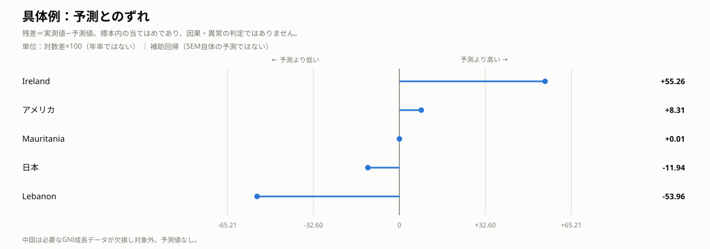
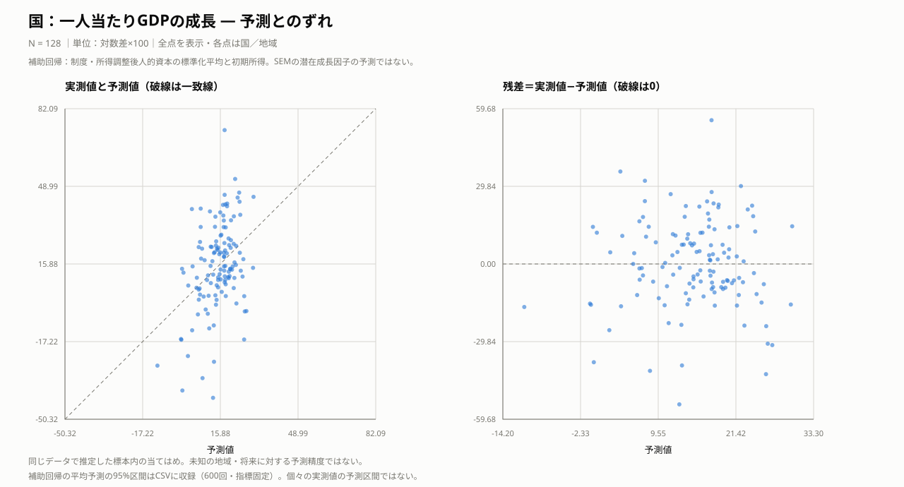

国レベル — 所得の割に人的資本が厚い国は、その後10年よく伸びる
所得水準から期待される以上に人的資本が充実した国ほど、その後の成長率が高いという関連が見られました。制度の質は、この人的資本の充実とも正の関連があります。制度と成長の直接の関係については、今回の分析では明確に示せませんでした。
分析手法：構造方程式モデリング（SEM）
結果を図で見る

考察
今回の結果で中心となったのは、所得水準から期待される以上に人的資本が充実した国ほど、その後の成長率が高いという関係です。出発点は制度の質と成長の関係でしたが、制度から成長への直接の経路は明確にならず、制度と人的資本、人的資本と成長というつながりが見えてきました。ただし、各経路の関連が支持されても、制度が人的資本を通じて成長を引き起こすという因果的な媒介まで証明したわけではありません。
この関係を読む鍵は、人的資本と初期所得の強い重なりでした。初版では両方を成長の説明に入れたことで標準化係数の絶対値が1を超え、指標を入れ替えても問題は解消しませんでした。そこで所得で説明できる部分を取り除くと、「豊かな国かどうか」から「同程度の所得の国と比べて人的資本が充実しているか」へと問いが明確になりました。採用モデルの結果も、この条件付きの比較として読む必要があります。
一方、所得グループ別に分けると推定区間が広くなり、関係がグループ間で異なるかは判断できませんでした。人的資本の尺度も保健面の負荷が強いため、教育や技能全般についての結論には広げられません。次は教育と保健を分けた仕様を事前に定め、別期間でも関係が再現するか、国ごとに変わらない特徴を調整しても残るかを確かめることが重要です。
予測とのずれ
主要な国・地域の具体例
主要国・身近な地域をあらかじめ指定し、それに加えて各指標で残差の絶対値が最小の地域、正の残差が最大の地域、負の残差が最小の地域を機械的に選びました。同じ地域は1行にまとめています。残差の大小は記述的な比較であり、統計的な異常の判定ではありません。

一人当たりGDP成長（対数差×100・年率ではない）
| 国・地域 | 選定理由 | 実測 | 予測 | 実測−予測 | 平均予測の95％区間 | 読み取り |
|---|---|---|---|---|---|---|
| アメリカ | 指定した比較例 | 17.49 | 9.18 | +8.31 | [4.46, 14.89] | 実測値は予測値を8.31対数ポイント上回る。 |
| 日本 | 指定した比較例 | 9.93 | 21.87 | -11.94 | [17.26, 27.46] | 実測値は予測値を11.94対数ポイント下回る。 |
| 中国 | 分析対象外。現在の国モデルでは一人当たりGNI成長が欠損しているため、中国を除外。予測は算出していません。 | |||||
| Mauritania | 予測に最も近い | 5.73 | 5.72 | +0.01 | [0.14, 12.13] | 実測値は予測値を0.01対数ポイント上回る。 |
| Ireland | 予測を最も上回る | 72.96 | 17.70 | +55.26 | [13.81, 23.01] | 実測値は予測値を55.26対数ポイント上回る。 |
| Lebanon | 予測を最も下回る | -41.19 | 12.77 | -53.96 | [7.86, 17.85] | 実測値は予測値を53.96対数ポイント下回る。 |
これは制度・所得調整後の人的資本・初期所得を使った補助回帰による比較です。日本とアメリカのずれも、これらの条件だけでは成長を説明し切れないことを示します。人口構成・産業構造・期間中の出来事などは説明候補ですが、この分析では個別の原因として検証していません。中国は対象外であり、説明できた／できなかったという評価自体をしていません。
補助回帰の区間は合成指標を固定した600回の復元抽出による平均予測の区間です。個別の実測値の予測区間ではなく、区間の外にあるだけで異常とは判定できません。すべて標本内の当てはめです。
全地域の当てはまり・診断図とデータを見る
左は実測値と予測値（破線上で一致）、右は予測値と残差です。残差が正なら予測より高く、負なら低い値です。同じ標本に当てはめた結果であり、未知の地域や将来への予測精度ではありません。
上の具体例と同じ補助回帰の結果を、全地域について表示しています。CSVのmean_ci_low／mean_ci_highは上で説明した平均予測の95％区間で、前処理の不確実性は含みません。

表のregionは国・地域名、observedは実測値、predictedは予測値、residualは実測値−予測値です。地域名で検索できます。
一人当たりGDP成長：実測・予測・残差country_prediction_diagnostics.csv — クリックで表示
region observed predicted residual mean_ci_low mean_ci_high Angola -27.464074420417006 -10.926902151107608 -16.537172269309398 -22.060362818635067 2.156526828277924 Albania 44.1889358021859 23.234648677317704 20.9542871248682 17.13278840484272 29.673180465202286 Argentina -3.53407219226316 9.632144984855689 -13.166217177118849 3.25827255392045 16.996791346419286 Armenia 41.62445285866987 18.79631767291228 22.82813518575759 15.191549012554065 22.518066576301358 Austria 6.798536767934138 14.329886881772548 -7.5313501138384105 10.293649654182847 19.622892626639764 Belgium 10.510868149506614 25.343115020374842 -14.832246870868229 19.2596294086163 32.57710243894551 Benin 25.53330406887291 14.114124085448669 11.41917998342424 7.711870644336909 20.79643764316082 Burkina Faso 20.89162272818026 13.44241216264485 7.4492105655354095 5.031352537358948 21.695364685488805 Bulgaria 36.041485417963415 13.770750800937247 22.270734617026168 9.559731810901217 18.15442618920086 Bahrain 5.454401587216928 7.0396056048781865 -1.5852040176612583 0.7298771438676608 14.111457718409316 Bahamas, The 1.9861526965602394 8.773172612972585 -6.787019916412346 4.405319541879725 13.274413064635018 Bosnia and Herzegovina 42.41759867218242 24.063726465936625 18.353872206245796 17.895054981246314 30.650489145022437 Belarus 2.5122212760242846 13.768999644534581 -11.256778368510297 6.277723435022532 21.75256609137633 Belize 5.917214066353971 14.909530765690167 -8.992316699336197 11.575865029000125 18.136430753808813 Bolivia 15.031420063663248 11.714429773976297 3.3169902896869505 7.372209311288696 16.193461934009882 Brazil -1.4881320608113313 14.020746040633666 -15.508878101444997 10.843421199574829 17.362748964129814 Brunei Darussalam -16.124601633049096 -0.8798000191546618 -15.244801613894435 -8.809935420911188 8.292564293784356 Bhutan 23.253093896023636 11.786389699382735 11.466704196640901 8.129490905530567 15.592693664387834 Central African Republic -32.79270825794684 8.288372198716921 -41.08108045666376 0.48207806299466344 16.64288624406411 Canada 8.08188175040847 17.720964407156668 -9.639082656748197 13.196348621915662 23.70948347347905 Switzerland 11.337085474329456 12.84315543740292 -1.5060699630734646 7.6694192900282925 19.165183845635646 Chile 10.264267919775882 19.18489049626931 -8.920622576493429 14.732088539644641 24.369865620878265 Cote d'Ivoire 39.29401539280324 3.760317443776036 35.5336979490272 -2.877686835661394 11.424745129048148 Cameroon 10.01380284060236 5.87444022985818 4.139362610744179 -0.0341536006634311 12.53561528545351 Congo, Dem. Rep. 22.7642177523669 20.292663615537325 2.4715541368295746 12.431143278924516 28.221742458608034 Congo, Rep. -38.06673256120163 -0.29766118147956444 -37.76907137972207 -8.059530962714474 8.268646961420412 Colombia 18.90262524611881 17.511116216867517 1.3915090292512922 13.721735981117197 21.544516223206166 Comoros 3.9825305785416987 16.475676205043648 -12.49314562650195 10.96629231986794 22.094556954464153 Cabo Verde 17.92438539785195 25.689379061426443 -7.764993663574494 19.420516012751452 31.888822111689596 Costa Rica 23.61439281338864 22.6071786531068 1.0072141602818405 18.457530356879975 27.278759914002045 Cyprus 26.027413170795022 20.385825967610558 5.641587203184464 16.482228016699704 25.41200342957982 Czechia 20.688586866465286 17.324649948057555 3.363936918407731 13.685108672366615 21.789593524009018 Germany 9.306294047305919 16.043888765867763 -6.737594718561844 12.023644671481701 21.582138611388178 Denmark 13.836636551066306 20.060000099147672 -6.223363548081366 14.744565256731324 26.746389164648008 Dominican Republic 39.4908125961674 7.514743281849173 31.97606931431823 2.4549647155902146 12.958135562442392 Algeria 0.5743667796318519 14.284240764546063 -13.70987398491421 8.704496610687205 20.0303105212778 Ecuador 9.035368418175338 17.937326291613047 -8.90195787343771 12.081672488463244 24.05454975285523 Egypt, Arab Rep. 22.402314844233473 8.098064303921486 14.304250540311987 3.4917203695255967 13.174716745293127 Spain 13.005868030733403 24.585312347411985 -11.579444316678583 19.08199977464448 31.12662607120705 Estonia 24.465655157839983 21.558624895495083 2.9070302623449003 17.336737821525052 26.59583208749513 Ethiopia 52.129023165056495 22.191394812443107 29.937628352613388 14.443646209201564 30.37365621350936 Finland 5.604908005540743 21.587010130383547 -15.982102124842804 15.693051699429004 28.553725554139042 France 7.219052864042652 18.152338893079133 -10.93328602903648 14.40807110438391 23.22364277519189 United Kingdom 11.533421121409049 15.569031756260296 -4.035610634851247 11.600705116496636 20.822136567688936 Georgia 46.316813702874704 23.90216272546336 22.414650977411345 19.261003706857196 28.845160647015152 Ghana 23.117347291507784 12.19015948213693 10.927187809370853 6.151466748551129 18.159613664929573 Guinea 31.661428012695936 7.508868071374499 24.152559941321435 1.4252031821888933 14.54222557599083 Gambia, The 10.610874068070864 17.768692435138014 -7.157818367067151 11.665427811507605 24.329100347621605 Greece 13.67079780196736 20.17941085649978 -6.508613054532418 14.657886950881673 25.999246187947637 Guatemala 18.16861101289966 7.687671576022364 10.480939436877296 2.7764782226983438 13.060991171239205 Honduras 12.598702701343 19.461702361656585 -6.862999660313584 14.333815847861125 24.389107199608812 Croatia 34.40536392701645 17.35516189132141 17.050202035695044 13.198277299095567 21.820551425296767 Hungary 36.54379395103682 17.154183692246765 19.389610258790054 13.95245639920244 20.867314053997546 Indonesia 31.732375893464315 13.59789345743251 18.134482436031803 10.202708118917649 17.251261689166956 India 45.35809377170157 17.71020393098483 27.64788984071674 13.218671209766518 22.404883056596905 Ireland 72.95847037378493 17.69656538921167 55.26190498457326 13.814454913465847 23.014757900918525 Iran, Islamic Rep. 7.732273019821712 11.835624615433161 -4.10335159561145 5.616643726201453 18.325627659641707 Iceland 13.447505852057162 20.82349955533474 -7.3759937032775795 16.331531251008855 26.569639937158694 Israel 20.41178062542759 18.64130789875437 1.7704727266732192 15.045062546577247 23.362676787765114 Italy 9.069232990686693 14.945329164913595 -5.876096174226902 9.599294642325257 20.79479954083126 Japan 9.926771195701356 21.86725170561499 -11.940480509913634 17.258059727626463 27.46065139776979 Kazakhstan 14.854002128996768 4.056144478383918 10.797857650612851 -3.5369025070076536 12.443668551700679 Kyrgyz Republic 20.667266462187506 24.17756723224336 -3.510300770055853 17.89733427284047 30.774965208020756 Korea, Rep. 24.79951176264379 17.607068495461295 7.192443267182494 14.074556424326742 22.195305459222556 Kuwait -23.37282082546892 2.072149433435344 -25.444970258904263 -6.142527432651282 11.246882326639836 Lebanon -41.190347545897055 12.772665922744112 -53.963013468641165 7.863388091506483 17.847738876755038 Lesotho -11.588051398796573 11.145032276554216 -22.73308367535079 3.3450696131558373 18.98948255787731 Lithuania 41.071974827420554 17.018643563814425 24.05333126360613 13.931728301561552 20.89810107096596 Luxembourg 2.810032174092214 7.217672991696436 -4.407640817604222 0.7420393283220975 14.783561059762627 Latvia 31.60958753180889 17.29003507595721 14.319552455851682 14.302227812156127 21.075543595391938 Morocco 13.031440371973169 17.539968363951616 -4.508527991978447 13.91447883266935 21.073820945657346 Moldova 41.28362833579153 18.010650929355087 23.272977406436446 13.73880965920208 22.35744990498272 Madagascar -0.9541521226406502 22.725785240219466 -23.679937362860116 15.147933999336923 30.541872521686866 Maldives 20.551372913452326 13.162880500147079 7.388492413305247 8.781389191067138 17.748214062654466 Mexico 2.3312117656605125 10.885686583480673 -8.55447481782016 6.817865170898291 15.589384742815627 North Macedonia 28.340764470011415 16.310511292606353 12.030253177405061 12.907033863513735 20.00581642171535 Mali 11.007085444640818 10.612097757960804 0.3949876866800146 3.7419802480765774 18.138422575319108 Malta 37.88971480937402 15.837747050513418 22.051967758860602 12.684886714971993 19.924434634141566 Montenegro 26.761502870351883 19.38627228101756 7.375230589334322 14.401243494003209 24.4412942678837 Mongolia 23.707295559804287 13.988300770451096 9.718994789353191 10.068038980039306 17.877590762030525 Mozambique 9.827161621652447 19.457452530064835 -9.630290908412388 10.86468119350463 28.099958334985825 Mauritania 5.7283926309155575 5.722368358795923 0.006024272119634411 0.14469852993104806 12.125839566342416 Mauritius 20.781577438279975 15.86567966803095 4.915897770249025 12.498531033745921 19.665595117354247 Namibia -12.395957923437706 3.863238267101632 -16.25919619053934 -3.0066115236762267 11.044655063359826 Niger 20.0500187300916 15.422643372645169 4.627375357446432 6.5338507876180225 24.08807222528744 Nicaragua 14.813248036883842 21.117060789133824 -6.303812752249982 15.932779931186332 26.32824537118729 Netherlands 14.850777347385957 17.440054142373796 -2.589276794987839 12.731559134565245 23.75461639232814 Norway 10.154725066459314 14.94130022506998 -4.786575158610667 10.032541865620768 21.295790402250077 Nepal 36.20488455941597 21.644944290407153 14.55994026900882 16.043908557771733 27.591510631646717 New Zealand 15.483286413091513 22.501880847474553 -7.01859443438304 16.25028348686839 29.07462558403854 Oman -5.344447266716301 10.529677698724829 -15.87412496544113 5.597550067545995 16.056074016837723 Pakistan 25.27570234912293 7.220673528454697 18.055028820668234 1.7985618890611175 13.46097703568913 Panama 23.073676019813405 6.670450407704047 16.40322561210936 1.668830822964229 12.424165825685323 Peru 15.03463154848319 17.990875409433603 -2.956243860950412 14.344830254866903 21.853359767051202 Philippines 34.50234852272036 20.425966708496304 14.076381814224057 16.185114212442944 24.82559507323462 Palau -10.31223727348074 13.0882909859367 -23.40052825941744 10.225272855237028 16.360682679941558 Poland 40.49042239875291 18.740473268681665 21.749949130071247 15.443577381269453 22.793752477129367 Portugal 16.55483759799683 21.917789427789053 -5.362951829792223 17.492734484676806 27.14812729946242 Paraguay 17.076633190434976 12.485021943571233 4.591611246863742 7.9000062699895715 17.351191890485605 West Bank and Gaza -4.354047589180787 26.290887057491922 -30.64493464667271 20.147814040992007 32.88696909857462 Romania 38.29385339725864 11.45207029657556 26.841783100683077 7.080245546452697 16.798729880311154 Russian Federation 6.692995988391459 2.214025829372222 4.478970159019237 -7.285802273659018 12.619709123922068 Rwanda 36.848221666342695 24.37281515366832 12.475406512674375 15.264440005105799 33.26914988264773 Saudi Arabia 12.185402659871336 0.1662680615781138 12.019134598293222 -8.478447209270904 9.530601948031162 Senegal 21.662576996894778 17.910234909215053 3.7523420876797253 12.075509660279709 24.00115529823843 Solomon Islands -16.330683835287196 26.02269811214812 -42.35338194743532 18.602655491548106 33.28137946890975 Sierra Leone 4.9526681316520715 6.677283433611819 -1.7246153019597479 -0.09230434185948921 14.41451415505874 El Salvador 19.052262010047905 17.438431483005868 1.6138305270420368 13.909484698080686 20.920718606722076 Serbia 31.48237878745963 18.152738106560975 13.329640680898656 13.203585343271753 23.29693280039134 Sao Tome and Principe 13.527162115544833 15.979371346476679 -2.452209230931846 11.55791676366551 20.613442659757972 Slovak Republic 22.394844538747805 14.444250366215421 7.950594172532384 11.344900768924697 18.05283222729782 Slovenia 23.93821922959809 19.617717778848107 4.320501450749983 15.734388784953666 24.54610406267628 Sweden 10.708026266921955 19.81998596980142 -9.111959702879464 14.275998767844994 26.40133788943234 Eswatini 13.824049453843656 -0.434747150332359 14.258796604176016 -8.258051830191874 8.001989769465172 Seychelles 9.03268733907705 10.20152541120655 -1.1688380721294997 6.727655677977903 14.184217194549761 Chad -16.4089873226839 -0.7361402445742042 -15.672847078109694 -9.47197086832398 9.089183131029905 Togo 27.977059428802775 16.001880348581363 11.975179080221412 9.906507042194454 22.35732429914556 Tajikistan 44.50673269736889 30.023439523328904 14.483293174039986 21.69071693719196 39.08209993684735 Timor-Leste 21.8684639124735 14.7176117359964 7.150852176477102 9.886742135400494 19.86786912744824 Tonga 14.229834035449684 29.81751921537315 -15.587685179923465 22.806552425393033 37.552458688915316 Tunisia 2.193668774078361 18.19903983120665 -16.00537105712829 14.816604061389892 21.54692266574542 Tanzania 22.847897987576182 15.019235976580196 7.828662010995986 8.886102729985298 21.480045695350334 Ukraine -25.81980282957126 13.180389219792778 -39.00019204936404 6.991917566498353 19.6993556444852 United States 17.490572373253066 9.17830211204507 8.312270261207996 4.464661467648636 14.88751735281136 Vanuatu -4.199213392340795 26.984193663658345 -31.18340705599914 19.452173606769428 34.624815990957586 Samoa 2.1535344651784527 26.055545256707727 -23.902010791529275 19.647950222364265 32.47223537352179 South Africa -5.622590951792539 6.325734483983793 -11.948325435776333 1.5003101940916568 11.855481196094425 Zimbabwe 0.6628206722762542 6.714495479960292 -6.051674807684038 0.2585161695536299 13.672890100089978
予測と残差の計算・図の生成prediction_diagnostics.py — クリックで表示
"""各分析の標本内当てはめと残差。SEMと補助回帰を明確に区別する。""" import numpy as np import pandas as pd import paths from make_path_diagram import text, esc, SURFACE, INK, INK3, C_POS, BOX_LINE def auxiliary(names, y, predictors): """固定した合成指標を使うOLS。区間は合成指標を固定した条件付き区間。""" x = np.column_stack([np.ones(len(y)), predictors]) y = np.asarray(y, dtype=float) fitted = x @ np.linalg.lstsq(x, y, rcond=None)[0] rng = np.random.default_rng(2026) draws = [] for _ in range(600): ix = rng.integers(0, len(y), len(y)) draws.append(x @ np.linalg.lstsq(x[ix], y[ix], rcond=None)[0]) lo, hi = np.quantile(draws, [.025, .975], axis=0) return pd.DataFrame(dict(region=list(names), observed=y, predicted=fitted, residual=y-fitted, mean_ci_low=lo, mean_ci_high=hi)) def compute(): from sem_country_v2 import prepare, HCR from sem_analysis import derive from pref_residuals import compute as pref_compute from job_residuals import compute as job_compute from muni_path import wide, V, fit z = prepare() gov = z[['rule_of_law', 'gov_effect', 'control_corrupt', 'reg_quality']].mean(axis=1) country = auxiliary(z.country, derive().loc[z.index, 'g_gdp'] * 100, np.column_stack([gov, z[HCR].mean(axis=1), z.init_gdp])) p = pref_compute() j, _ = job_compute() datasets = [ ('country', '国：一人当たりGDPの成長', '対数差×100', country, '補助回帰：制度・所得調整後人的資本の標準化平均と初期所得。SEMの潜在成長因子の予測ではない。'), ('health_m', '都道府県：平均寿命（男）', '年', auxiliary(p.pref, p.le_m, p[['wealth']]), '補助回帰：豊かさの3指標の標準化平均のみ。医療供給量を含むSEM全体の予測ではない。'), ('health_f', '都道府県：平均寿命（女）', '年', auxiliary(p.pref, p.le_f, p[['wealth']]), '補助回帰：豊かさの3指標の標準化平均のみ。医療供給量を含むSEM全体の予測ではない。'), ('job', '都道府県：転職率', '%（残差はポイント）', auxiliary(j.pref, j.jobchg, j[['urban','precar']]), '補助回帰：都市度・雇用の不安定さの指標の標準化平均。SEMの因子得点は使わない。'), ] w = wide() zz = (w[V] - w[V].mean()) / w[V].std() estimates = fit(zz).inspect() pred = np.zeros(len(w)) for _, row in estimates[(estimates.op == '~') & (estimates.lval == 'move_rate')].iterrows(): pred += row.Estimate * zz[row.rval].to_numpy() pred = pred * w.move_rate.std() + w.move_rate.mean() names = [f'{name} [{code}]' for code, name in zip(w.index, w['name'])] d = pd.DataFrame(dict(region=names, observed=w.move_rate.to_numpy(), predicted=pred, residual=w.move_rate.to_numpy()-pred)) datasets.append(('muni', '市区町村：総移動率', '%（残差はポイント）', d, 'パスモデルの総移動率の式：通勤流出率・単独世帯割合・高齢化率・人口密度の実測値から当てはめ。')) return datasets def build(title, unit, d, method): out = [f'<svg xmlns="http://www.w3.org/2000/svg" width="1280" height="690" viewBox="0 0 1280 690" role="img">', f'<title>{esc(title)}：実測・予測と残差</title>', f'<rect width="1280" height="690" fill="{SURFACE}"/>', text(40, 38, title + ' — 予測とのずれ', 22, INK, '700'), text(40, 66, f'N = {len(d):,} ｜単位：{unit}｜全点を表示・各点は国／地域', 13, INK3), text(40, 92, method, 12, INK3)] for panel, ycol in enumerate(['observed','residual']): left, top, size = 92 + panel * 620, 154, 440 x = d.predicted.to_numpy(); y = d[ycol].to_numpy() if panel == 0: low = min(x.min(), y.min()); high = max(x.max(), y.max()) pad = (high-low)*.08 or 1 xmin,ymin = low-pad,low-pad; xmax,ymax = high+pad,high+pad else: pad = np.ptp(x)*.08 or 1 xmin,xmax = x.min()-pad,x.max()+pad edge=max(abs(y.min()),abs(y.max()))*1.08 or 1 ymin,ymax=-edge,edge sx=lambda v:left+(v-xmin)/(xmax-xmin)*size sy=lambda v:top+size-(v-ymin)/(ymax-ymin)*size out.append(text(left, 128, '実測値と予測値（破線は一致線）' if panel==0 else '残差＝実測値−予測値（破線は0）',15,INK,'600')) for v in np.linspace(xmin,xmax,5): out.append(f'<path d="M{sx(v):.2f},{top}v{size}" stroke="{BOX_LINE}"/>') out.append(text(sx(v), top+size+24, f'{v:.2f}',11,INK3,'400','middle')) for v in np.linspace(ymin,ymax,5): out.append(f'<path d="M{left},{sy(v):.2f}h{size}" stroke="{BOX_LINE}"/>') out.append(text(left-10,sy(v)+4,f'{v:.2f}',11,INK3,'400','end')) out.append(f'<path d="M{left},{top}v{size}h{size}" fill="none" stroke="{INK3}"/>') line = f'M{sx(xmin)},{sy(xmin)}L{sx(xmax)},{sy(xmax)}' if panel==0 else f'M{left},{sy(0)}h{size}' out.append(f'<path d="{line}" stroke="{INK3}" stroke-dasharray="5 4" fill="none"/>') for (_, r), xx, yy in zip(d.iterrows(), x, y): label=f'{r.region}：実測 {r.observed:.3f} / 予測 {r.predicted:.3f} / 残差 {r.residual:+.3f}' out.append(f'<circle cx="{sx(xx):.2f}" cy="{sy(yy):.2f}" r="3" fill="{C_POS}" opacity="0.6"><title>{esc(label)}</title></circle>') out.append(text(left+size/2,top+size+48,'予測値',13,INK,'400','middle')) out += [text(40,658,'同じデータで推定した標本内の当てはめ。未知の地域・将来に対する予測精度ではない。',12,INK3), text(40,679,'補助回帰の平均予測の95%区間はCSVに収録（600回・指標固定）。個々の実測値の予測区間ではない。' if 'mean_ci_low' in d else '地域名と全数値は付属CSVで検索可能。残差の大きさだけで原因や異常を断定しない。',12,INK3), '</svg>'] return '\n'.join(out) def main(): for key,title,unit,d,method in compute(): assert np.isfinite(d.select_dtypes('number')).all().all() assert np.allclose(d.observed-d.predicted,d.residual) d.to_csv(paths.result(f'{key}_prediction_diagnostics.csv'),index=False) paths.figure(f'{key}_prediction_diagnostics.svg').write_text(build(title,unit,d,method)) print(key, len(d)) if __name__ == '__main__': main()
結果の確かさを確認する
区間が0を含む経路は、関連を明確に示せていません。以下の検証は、採用したモデルと前処理に条件づけられたものです。
ブートストラップによる各経路の判定
| パス | 標準化係数 | ブートストラップ95%区間 | 判定 |
|---|---|---|---|
| 制度の質 → 所得水準を超えた人的資本 | +0.197 | [+0.031, +0.354] | 0を含まない |
| 制度の質 → その後10年の成長 | +0.248 | [-0.040, +0.489] | 0をまたぐ |
| 所得水準を超えた人的資本 → その後10年の成長 | +0.353 | [+0.144, +0.544] | 0を含まない |
| 初期所得(2012) → その後10年の成長 | -0.258 | [-0.527, +0.053] | 0をまたぐ |
再抽出600回中、分散がほぼゼロの境界解は528回でした。境界解も含めた区間であり、モデルの安定性に注意が必要です。
推定の診断と追加検証を詳しく見る
追加検証：推定の健全性
復元抽出600回のうち、最適化の成功・係数と目的関数の有限性・負の分散なし・モデル共分散の正定値性という基本条件を満たしたのは600回、除外は0回でした。基本条件を満たしたうち、分散がほぼゼロの境界解は528回です。
境界の基準は分散の絶対値が10⁻⁸以下。境界解は収束失敗とは区別して記録し、一律には除外していません。これは局所最適性・情報行列・全てのモデル仮定を保証する検査ではありません。再抽出は既存と同じ前処理済みデータから行い、前処理やモデル選択の不確実性は含めていません。
全モデルの推定監査集計sem_audit_summary.csv — クリックで表示
model n attempts usable failed nonconverged boundary usable_boundary original_usable original_boundary country 128 600 600 0 0 528 528 True gov_effect pref-health 47 600 600 0 0 361 361 True tax_income pref-job 47 600 600 0 0 378 378 True muni 1859 400 400 0 0 0 0 True
推定監査と男女差の検証コードsem_audit.py — クリックで表示
"""推定の健全性と健康モデルの男女差の対比較。既存結果を残して監査する。""" import numpy as np import pandas as pd import paths TOL = 1e-8 def diagnose(m): result = m.last_result e = m.inspect(std_est=True) numeric = e[['Estimate', 'Est. Std']].to_numpy(dtype=float) variances = e[(e.op == '~~') & (e.lval == e.rval)] finite = bool(np.isfinite(numeric).all() and np.isfinite(result.fun)) negative = bool((variances.Estimate < -TOL).any()) boundary = variances.loc[variances.Estimate.abs() <= TOL, 'lval'].tolist() sigma, _ = m.calc_sigma() eigmin = float(np.linalg.eigvalsh(sigma).min()) if np.isfinite(sigma).all() else np.nan usable = bool(result.success and finite and not negative and eigmin > 0) return e, dict(converged=bool(result.success), finite=finite, negative_variance=negative, boundary=';'.join(boundary), min_sigma_eigenvalue=eigmin, usable=usable, optimizer_message=str(result.message)) def contrast(e, outcome_sd): def coef(y,x,col): return float(e[(e.lval==y)&(e.rval==x)&(e.op=='~')][col].iloc[0]) values = {} for x in ['WEALTH','MED']: # 共通の潜在変数の1単位当たり、男女とも年に戻して比較する。 values[x+'_years'] = (coef('le_m',x,'Estimate')*outcome_sd['le_m'] - coef('le_f',x,'Estimate')*outcome_sd['le_f']) values[x+'_std'] = coef('le_m',x,'Est. Std')-coef('le_f',x,'Est. Std') return values def main(n_override=None): import estat_sem as health import job_sem as job import sem_country_v2 as country import muni_path as muni hw = health.wide() hz = (hw[health.USED]-hw[health.USED].mean())/hw[health.USED].std() jw=job.wide(); jz=(jw[job.USED]-jw[job.USED].mean())/jw[job.USED].std() mw=muni.wide(); mz=(mw[muni.V]-mw[muni.V].mean())/mw[muni.V].std() configurations=[('country', country.prepare(), country.fit,600), ('pref-health',hz,health.fit,600),('pref-job',jz,job.fit,600), ('muni',mz,muni.fit,400)] records=[]; summaries=[]; contrast_draws=[]; original_contrast=None for name,z,fit,n in configurations: n=n_override or n rng=np.random.default_rng(0) for iteration in range(-1,n): sample=z if iteration==-1 else z.iloc[rng.integers(0,len(z),len(z))] row=dict(model=name,iteration=iteration,converged=False,finite=False, negative_variance=False,boundary='',min_sigma_eigenvalue=np.nan, usable=False,optimizer_message='') try: e,flags=diagnose(fit(sample)); row.update(flags) if name=='pref-health' and row['usable']: values=contrast(e,hw[['le_m','le_f']].std()) if iteration==-1: original_contrast=values else: contrast_draws.append(dict(iteration=iteration,boundary=row['boundary'],**values)) except Exception as exc: row['optimizer_message']=type(exc).__name__+': '+str(exc) records.append(row) subset=pd.DataFrame([r for r in records if r['model']==name and r['iteration']>=0]) base=[r for r in records if r['model']==name and r['iteration']==-1][0] summaries.append(dict(model=name,n=len(z),attempts=n,usable=int(subset.usable.sum()), failed=int((~subset.usable).sum()), nonconverged=int((~subset.converged).sum()), boundary=int(subset.boundary.ne('').sum()), usable_boundary=int((subset.usable & subset.boundary.ne('')).sum()), original_usable=base['usable'],original_boundary=base['boundary'])) print(summaries[-1],flush=True) pd.DataFrame(records).to_csv(paths.result('sem_audit_trials.csv'),index=False) pd.DataFrame(summaries).to_csv(paths.result('sem_audit_summary.csv'),index=False) d=pd.DataFrame(contrast_draws) if original_contrast is None or len(d)<100: raise RuntimeError('Insufficient valid health estimates for contrast intervals') d.to_csv(paths.result('pref_gender_contrast_draws.csv'),index=False) rows=[] for key,point in original_contrast.items(): for scope,subset in [('usable_including_boundary',d),('interior_only',d[d.boundary==''])]: low,high=np.quantile(subset[key],[.025,.975]) if len(subset)>=100 else (np.nan,np.nan) # 主比較は同じ単位（年）の2本。Bonferroni対応の各97.5%区間。 family_low,family_high=np.quantile(subset[key],[.0125,.9875]) if len(subset)>=100 else (np.nan,np.nan) rows.append(dict(parameter=key,scope=scope,estimate=point,valid=len(subset), low=low,high=high,family_low=family_low,family_high=family_high, zero_included=bool(low<=0<=high) if np.isfinite(low) else None)) pd.DataFrame(rows).to_csv(paths.result('pref_gender_contrasts.csv'),index=False) loo=[] for index in hz.index: e,flags=diagnose(health.fit(hz.drop(index))) loo.append(dict(excluded=hw.loc[index,'pref'],usable=flags['usable'], boundary=flags['boundary'],**contrast(e,hw[['le_m','le_f']].std()))) pd.DataFrame(loo).to_csv(paths.result('pref_gender_contrast_loo.csv'),index=False) print(pd.DataFrame(rows).to_string(index=False)) if __name__=='__main__': main()
データと分析方法
World BankのWGI・WDIによる国別データを用い、制度の質・人的資本・その後の成長の関係をSEMで推定しました。人的資本の各指標は初期所得に回帰した残差に置き換え、所得水準から期待される部分を取り除いています。
仮定した関係と根拠：関連と因果の違い
図の矢印は、モデルで仮定した関係の方向を示します。相関や関連があることと、一方を変えることで他方が変わる因果関係があることは別です。モデルがよく当てはまっても、因果関係が証明されたわけではありません。回帰パス係数は偏相関係数とは異なり、ここでは主に「関連」と表現しています。関連・相関・因果と係数の違い →
制度・人的資本からその後の成長への矢印は、初期時点の条件と後年の変化を区別しており、時間順序に根拠があります。ただし、欠損を補うため近接年の観測を採用していることにも注意が必要です。初期の制度や人的資本には過去の成長が影響しており、共通の要因も残るため、因果効果とは断定できません。
制度から人的資本への矢印は、制度が教育・保健を支えるという仮説です。指標はほぼ同時期であり、人的資本が制度を改善する逆方向も考えられます。成長への時間差のある矢印と同じ強さの根拠はありません。人的資本を所得で残差化しても、因果の向きや未測定の交絡が解決するわけではありません。
このモデルは、時間順序を考慮した関連の分析として読みます。制度→人的資本→成長という経路を示しても、制度の因果的な媒介効果を確定したものではありません。潜在変数から各指標への矢印は、概念が指標に表れるとする測定上の仮定です。
解釈上の注意
データ・コード・再現方法
結果データ
推定係数country2_estimates.csv — クリックで表示
lval op rval Estimate std se z-value p HCX ~ GOV 0.15430084821284476 0.19021938664617058 0.07648468518135439 2.017408424248089 0.04365290886373829 GROWTH ~ GOV 0.23314170972214135 0.23831394281619483 0.1467175776528648 1.5890509743295231 0.11204888485457398 GROWTH ~ HCX 0.42597027075705063 0.3532013065056701 0.12312529046955019 3.459648859540653 0.0005408802187119033 GROWTH ~ init_gdp -0.22060715570028186 -0.23994796593582812 0.1353136949192633 -1.6303387164934022 0.10302992912366227 rule_of_law ~ GOV 1.0 0.9398800550759195 - - - gov_effect ~ GOV 1.0639950577111303 1.0 0.040029498367913204 26.5802745741482 0.0 control_corrupt ~ GOV 0.9945174451109381 0.934700831165549 0.030712111587861114 32.381929918216265 0.0 reg_quality ~ GOV 1.03241288964685 0.9700110280377072 0.045579079604947996 22.65102539525879 0.0 g_gdp ~ GROWTH 1.0 0.9192943324083764 - - - g_gni ~ GROWTH 0.9618973245538037 0.884266164879922 0.08559258208184399 11.238092147083439 0.0 g_cons ~ GROWTH 0.6792023311697702 0.6243624165989716 0.08831707285428972 7.6904986681642455 1.4654943925052066e-14 life_exp_12_r ~ HCX 1.0 0.7622974558347104 - - - child_surv_12_r ~ HCX 1.1977725137856572 0.913063809341528 0.17254551456109946 6.941777170072865 3.872013820682696e-12 school_sec_12_r ~ HCX 0.6013436496829262 0.4584687446094755 0.12211690698805344 4.92432755225966 8.465094103460302e-07 GOV ~~ init_gdp 0.741687630713485 0.7954177669420114 0.05729814531966145 12.944356690128952 0.0 GOV ~~ GOV 0.8763099569520845 1.0000000000000002 0.10318361830388431 8.492723664359067 0.0 HCX ~~ init_gdp -0.11444821366788435 -0.15131073232767633 0.045251727229925875 -2.529145751361913 0.011434053378169828 HCX ~~ HCX 0.5557496712310563 0.9638165849439546 0.12754623848361696 4.357240776630852 1.3171234972242374e-05 GROWTH ~~ GROWTH 0.6875749562880783 0.8198251807982639 0.11538535083781573 5.958944972560394 2.538715682121051e-09 rule_of_law ~~ control_corrupt 0.06694937500502858 0.06748720431360102 0.02079622476471316 3.2193042611949623 0.001285020575081397 rule_of_law ~~ rule_of_law 0.11569279971109467 0.11662548207048637 0.02218320351658478 5.2153332867087565 1.8348702113257787e-07 gov_effect ~~ reg_quality -0.028891407773081603 -0.02911351217344786 0.019331934451192377 -1.4944912959709067 0.1350472552263562 gov_effect ~~ gov_effect 2.65765487817545e-18 2.6789315398796105e-18 0.01970142323340278 1.3489659333517757e-16 1.0 child_surv_12_r ~~ child_surv_12_r 0.165029395497478 0.16631448007073796 0.10187038250123742 1.6199938730361927 0.10523359306130575 control_corrupt ~~ control_corrupt 0.12533107691518602 0.12633435621843178 0.022804354851740934 5.49592732285176 3.886625621341011e-08 g_cons ~~ g_cons 0.6055856795805467 0.6101715727386922 0.08126361858680403 7.452113136288917 9.192646643896296e-14 g_gdp ~~ g_gdp 0.15372172395053282 0.15489793040183744 0.060587067528326065 2.537203568667961 0.011174195628112393 g_gni ~~ g_gni 0.21641771585599506 0.21807334964855474 0.05975622794796723 3.6216763220198445 0.0002927002034769366 life_exp_12_r ~~ life_exp_12_r 0.4156702311409017 0.4189025888279278 0.08731161756031391 4.760766582396672 1.9285900085819208e-06 reg_quality ~~ reg_quality 0.058646415694662286 0.05907860548523024 0.023415447077662462 2.5046037129952716 0.01225886587897218 school_sec_12_r ~~ school_sec_12_r 0.7834864037684331 0.7898064102162117 0.10277578444212705 7.623258805696494 2.4646951146678475e-14 所得グループ別country2_groups.csv — クリックで表示
グループ N CFI RMSEA 制度の質→所得水準を超えた人的資本 制度の質→その後10年の成長 所得水準を超えた人的資本→その後10年の成長 初期所得(2012)→その後10年の成長 高所得 49 0.9632015180568939 0.10234904657368986 +0.33 [-0.02,+0.59] +0.13 [-1.35,+0.63] +0.39 [-0.23,+1.67] -0.35 [-0.98,+0.84] 中低所得 79 0.9024510769427302 0.1319971727764143 +0.12 [-0.17,+0.46] +0.29 [+0.01,+0.49] +0.31 [-0.01,+0.56] -0.20 [-0.43,+0.08] 分析サンプルcountry2_sample.csv — クリックで表示
iso3 rule_of_law gov_effect control_corrupt reg_quality g_gdp g_gni g_cons init_gdp life_exp_12 child_surv_12 school_sec_12 life_exp_12_r child_surv_12_r school_sec_12_r income country AGO -1.4266760625208914 -1.168875897979217 -1.5027636527490416 -1.2449883761559566 -2.3047532442247167 -2.282893578051212 -0.017059406244509554 -0.1492825885035483 -1.4744619349082184 -1.2873089711199308 -1.9266218840044733 -2.5206536098366152 -2.5556086967771354 -3.4188619914654206 Lower middle income Angola ALB -0.4362422865716617 -0.4475750731744308 -0.8665731256272458 -0.20068657696821882 1.58197238389002 1.4633385836317492 1.2490414131920229 -0.07978545446137643 0.7726086309696932 0.34780782562633683 0.5802747746759208 1.5703840546354937 0.9277963592044992 1.2312091503065388 Upper middle income Albania ARG -0.5549701896586956 -0.08604542517004872 -0.5511578548968085 -1.0299800025109997 -1.0067009690717523 -0.7824237096087261 -1.3951795401325078 0.6578461884129769 0.5050890654785942 0.19679619690095343 0.7685597916587921 -0.09483698558307224 -0.8639197765813619 0.39748216409446957 Upper middle income Argentina ARM -0.3890079323326976 -0.05427358304808069 -0.6558942726730439 0.33766518017748814 1.4428652961562145 0.6909974134180817 -0.05088200153328351 -0.1281903092398264 0.3078504999636783 -0.013705514852069764 0.1840080387564945 0.7779934917049013 0.22291441327764497 0.556608633974445 Upper middle income Armenia AUT 1.7775977825927618 1.5256120004565241 1.3970600659112848 1.5650629240810978 -0.44622184996534614 -0.5014482886038479 -1.0101640785547445 1.3227078317112833 1.1070180952989876 1.2525751965716285 0.6725506188274131 -0.019716528496894113 0.16038258382490417 -0.8587782694849424 High income Austria BEL 1.3686996412348507 1.8236927098900213 1.5147571740765486 1.0959483904326242 -0.2448511960879077 -0.3787849094540907 -0.6424051839067717 1.2476437251613595 1.0423984614722233 1.1890241662097858 2.8871362428146337 -0.021955143477976235 0.1679615214572618 3.469485882996272 High income Belgium BEN -0.46283657788573157 -0.6195169318323497 -0.7167779875673542 -0.7022355615821284 0.5700215706405144 0.5262789314987308 -0.42322663367190166 -1.399785984695455 -1.5163131552764577 -1.6010994395257883 -1.1016804678053131 -0.6236979699273164 -0.7798529320016462 0.1680607010846348 Lower middle income Benin BFA -0.3938793346970267 -0.7444213303056305 -0.405099895878593 -0.37908268108960863 0.31823952033495606 0.1343723707221506 -0.6076282354217839 -1.6877888214878494 -1.6455009559649725 -1.6779155341295977 -2.090754039950066 -0.4103032896034698 -0.38094845115272197 -1.24569340677166 Low income Burkina Faso BGR -0.24196720520503287 -0.30205229745470585 -0.3865958366985416 0.25374225495078995 1.140024388770598 1.1149804669242611 1.6396222789868877 0.4445152175933361 0.3307247066280155 0.4562258592632765 0.49840173346768346 -0.08384378731538979 0.13202032951954698 0.2288345913376821 High income Bulgaria BHR -0.15795936393965082 0.2684292244809795 0.15341818047408248 0.7702541560164888 -0.5191327386818709 -0.6728988456608929 -1.1561594815477154 1.2184420853951254 0.9529088464496712 0.6325631490709228 0.6121889232525286 -0.14312788032289744 -1.0065408419290645 -0.8050384447371215 High income Bahrain BHS 0.6739635123236329 0.949673955318874 1.5101287612737886 0.5216371102777673 -0.7072634509313273 -0.493887878618427 -1.1992449209185365 0.7944320089246827 0.25949156779942834 0.10884889699316569 0.3799401982217269 -0.7697118218713301 -1.32851522413233 -0.561384885203786 High income Bahamas, The BIH -0.1519040577641831 -0.7151397185220573 -0.43680104259851255 -0.3338638360044584 1.4858884734188873 1.110888881489508 0.6900340642981858 -0.06832629959633278 0.6498684972846887 0.7993097339559843 0.3284358770369005 1.3228262558332742 1.9049367547494862 0.7342851706664478 Upper middle income Bosnia and Herzegovina BLR -0.7895120946970302 -1.2271460783784265 -0.3384506483787273 -1.2367715653698357 -0.678727535641842 -0.5879284528625537 0.9082061927818742 0.5629759071639028 0.05537644390604367 1.074243037313216 0.9511762145215038 -0.7857075022234222 1.266481754665033 0.8976292327696006 Upper middle income Belarus BLZ -0.3611951330538053 -0.37207285107948007 -0.09577865903007415 -0.46820765225490557 -0.49402806941417526 -0.1313250169806042 -0.35160096998061 -0.12468164940569636 -0.042142017655697375 -0.0543481163270727 -0.11357357143230636 0.11815429178141507 0.1259857673199649 -0.01437073031938202 Upper middle income Belize BOL -1.1669334984977071 -0.3502743437979303 -0.7389727095957882 -1.0606813140394706 0.0003603438514600491 -0.3227430655011512 -0.04814049898779194 -0.2837447300464507 -0.5753054636914205 -0.5829122716613422 0.18912574884901387 -0.6273304523830401 -0.7301786345434211 0.8175794794204363 Lower middle income Bolivia BRA -0.060185695835425566 -0.0934147924251393 -0.029859849847069707 0.09819501594611472 -0.8957215710283496 -0.8129191392634278 -1.0201442015104927 0.28333671181076747 0.3331122019486003 -0.02916760789313089 0.4686015594190611 0.1752041784453972 -0.6243699625645107 0.43255627261457863 Upper middle income Brazil BRN 0.6535045690116368 0.7059682438716728 0.9793743544898755 0.97455308554864 -1.6896580883470986 -1.532800537498572 1.4374542122228002 1.6566967143495237 0.3926651989992055 0.4299928778983659 0.8615610132940398 -1.8827131278219498 -2.3209520955916143 -1.0391705050541125 High income Brunei Darussalam BTN 0.1838547864396106 0.4612176775664548 0.8209954832356237 -1.0285634922118558 0.4463344947065362 0.21938726962603944 2.901003249199219 -0.1782361782414637 -0.20333369274345445 -0.6659228191708517 -0.3600982876145308 -0.0985967473620873 -1.1224436591119398 -0.3961904526362631 Lower middle income Bhutan CAF -1.5155345857303117 -1.5991807191937306 -0.9990807422008697 -1.3579958554843607 -2.5937981515471638 -1.3302468096154358 -1.611973739237164 -1.8978975027976182 -2.36306767830109 -1.7499960621380168 -2.445822931777841 -1.4198951471952852 -0.12545178327642253 -1.5808496640606136 Low income Central African Republic CAN 1.6711514090291149 1.9663750251854135 1.8804267454032046 1.7832121887031653 -0.3766084475751423 -0.19696810961472236 -0.3594793518330486 1.2106285445523242 1.1922531078819765 0.9569037126777951 1.069876135546091 0.31665841510453624 -0.2729025688048602 0.07704479244638704 High income Canada CHE 1.9524163893062407 1.9700012487168208 2.214817116233364 1.9154813834001643 -0.20003409711600237 -0.5585665622852013 -0.8562758862520572 1.517286840775339 1.313457810444639 1.1688223658004604 0.608477766625254 0.058872980703029834 -0.40950089535464745 -1.2947773313216864 High income Switzerland CHL 1.1812919592673738 1.2746586163645233 1.5080378016581817 1.5849605253530343 -0.2582277092283294 -0.07958162181171427 0.3654068527967163 0.589682675170563 0.905899492478624 0.6006054594092031 0.2811128807607239 0.7621279104647319 0.16492171934187316 -0.4184184026801718 High income Chile CIV -1.1063183806619452 -1.2192156639574854 -0.8793886978700128 -0.9827499273906601 1.3164537051405265 2.7644660160614434 1.0770701769899824 -1.0295544056812072 -1.7494842401852202 -1.5336756537644936 -1.5288928000181357 -1.6443902141336542 -1.3620129453643033 -1.2415010758864304 Lower middle income Cote d'Ivoire CMR -1.1759624479344146 -0.9709161135945342 -1.290936747139519 -1.098163547300631 -0.27181386616921993 -0.12310450708310473 -0.19691090127811683 -0.9993501243280655 -1.5619157455376482 -1.582980455013764 -1.0624008342007196 -1.3414465738619696 -1.5308646962378718 -0.40409727797037936 Lower middle income Cameroon COD -1.7721757130371731 -1.7568045226176703 -1.4343317314467714 -1.6514633310078286 0.41981603538959406 0.38997821607763034 -1.0359278190849865 -2.1519814500712893 -1.6580445990445287 -1.5391907740583828 -1.5902261453732456 0.29944830162309316 0.8433321566140476 0.4549093217576579 Low income Congo, Dem. Rep. COG -1.2717691486281828 -1.19894634971703 -1.28021430045484 -1.3422891014245646 -2.879880834732106 -3.464454206624806 -1.3029495745320856 -0.3584555832529849 -1.0353171968145904 -1.0957887839838152 -1.1576903944714911 -1.3692969669836794 -1.7182582853993797 -1.6202794258560316 Lower middle income Congo, Rep. COL -0.4840344092817051 -0.1989104389805949 -0.44097574202145456 0.13377506572162448 0.21034890326573383 0.21224289746418637 0.7509141500533478 0.0994207189161136 0.48269807643004004 -0.02404374722019316 0.5663999591649225 0.7453480167291059 -0.24966469733306557 0.9154006370521964 Upper middle income Colombia COM -1.0957299303539128 -1.7747611087717174 -0.822413787174009 -1.6693456513185376 -0.5989724935354988 -0.33356991612348613 -0.6727303605722131 -1.240750000465022 -0.9414157191816496 -1.0097564717381218 -0.8447692812727559 0.19984962130525025 0.21537881881493637 0.39923966680748973 Lower middle income Comoros CPV 0.6245758120713921 0.03104844982356452 0.8917458912541781 -0.14628614379318622 0.15728553751334162 0.5143943777031478 1.503350864459584 -0.5386727232413436 0.2135372866107737 -0.3292073175958282 0.2981006377939434 1.2500437514771197 0.33526743965905326 1.4363530338787218 Upper middle income Cabo Verde CRI 0.45708581817318594 0.3724590186076831 0.6734425082045724 0.6417883429304033 0.4659326910303202 0.24205988397045203 0.3240040012947373 0.3349738445317682 0.9884296301235549 0.4651471502617575 0.789129424590576 1.318732381759652 0.36819390514770733 0.9580558398513235 High income Costa Rica CYP 0.9976380391260988 1.4880860297429959 1.0186743494157753 1.0260932364879976 0.5968238850660935 0.0743515357978826 -0.18476459811731638 0.9280572457092596 1.1294576920366983 1.5659995997292535 0.49506150531856574 0.6455918176949262 1.6341152262210015 -0.558519466533479 High income Cyprus CZE 0.8607787164865482 0.6855046638670896 0.4052109536123934 0.9043757187573302 0.30722610045626114 0.3675601073326205 -0.03481622615386685 0.9315706345427368 0.7716250400831316 1.4486602750938324 0.6602318731825368 -0.02891167357266464 1.3673443959764102 -0.25042205184569943 High income Czechia DEU 1.6886046292413501 1.778073251855809 1.6909905280466342 1.5367853801366804 -0.3101917731193784 -0.23773274009821743 -0.5760514564196528 1.2745995797330059 1.060411899220393 1.2525751965716285 0.8324946644482879 -0.03085703774240559 0.2554291296461471 -0.47723086126515024 High income Germany DNK 2.0090758001028033 1.9991355962291788 2.311068299628089 1.885798715543301 -0.06444915520563047 0.27944345645421936 -0.3806803401462887 1.305119068052831 1.0032263825595467 1.2308768196739537 1.5756484019903014 -0.18596924019402047 0.14708471909156748 0.8852348900668012 High income Denmark DOM -0.62982307608885 -0.618968934742416 -0.8243480769501197 -0.3116245805140879 1.3271287169994912 1.1428769027771597 0.90046808225052 0.11130435085639567 0.1551565926517164 -0.6484224475781978 -0.14396538240536166 0.11425170466883483 -1.6557314767181397 -0.4532661709429059 Upper middle income Dominican Republic DZA -0.8759514825425377 -0.7872622892515249 -0.4861062478273541 -1.3003720895131365 -0.7838439670560507 -0.7437949403350383 -0.6803603193393082 0.06526011856031672 0.36523330665699705 -0.41229969015050505 0.7860648736761415 0.5797096081935749 -1.04190603285799 1.387871063993 Upper middle income Algeria ECU -1.1465083179010074 -0.3973505298175772 -0.6510556603094586 -1.2020518446970219 -0.3248877863473441 -0.3852420501109854 -0.5156957874982372 -0.045351709531553784 0.4680442877856985 -0.039326560526739315 0.6151973640221828 0.9466242508929008 0.0025180095605916346 1.2419343916614476 Upper middle income Ecuador EGY -0.580818019943301 -0.65230190545708 -0.5518794231635074 -0.6698190660726409 0.4001850763613336 0.2064769878104669 0.2259941023966343 -0.03752809283807225 -0.2379166339441007 -0.47600435974967825 -0.32732226370248785 -0.38549939506072456 -0.9798933257944823 -0.56119548075122 Lower middle income Egypt, Arab Rep. ESP 1.1265213672910344 0.870129604834329 1.1222933471517855 0.8464137552042496 -0.10951312794002754 -0.10958046911289014 -0.6467541685182044 0.9685029256713404 1.2817198486978671 1.345159655608107 1.694107670034657 0.8663551605100863 1.065192122778897 1.6539670829875337 High income Spain EST 1.2004215351070013 1.0347574794861303 1.130776725011169 1.4878890606012303 0.5121083249659949 0.6774896290267667 1.1384434607730927 0.7969857891441731 0.5666149628539985 1.274822957429477 1.13122459832464 -0.199590499091112 1.2483056568736506 0.8616963137799885 High income Estonia ETH -0.801000884079642 -0.5344658737075947 -0.6479592908219562 -1.1135915538552765 2.0126722379068167 1.9636442902938356 1.9325306513458462 -1.8985733349339304 -1.1782209436742095 -1.3208344392807896 -1.6855199371885459 0.7961965639027516 0.8261944204831889 -0.13541953496773254 Low income Ethiopia FIN 2.081175394949431 2.324192616232298 2.1365456276579273 2.0811079832921395 -0.5109687110788771 -0.29658883147151166 -0.8854995139831097 1.2093721619453022 1.0707052922193474 1.5659995997292535 1.0362466104099592 0.09141405070917553 1.0783267704629043 0.015188471690279225 High income Finland FRA 1.3421645661472974 1.5176436028878302 1.4966291637673357 1.1351867548731234 -0.42341149374022635 -0.299574406032319 -0.6396463329354037 1.1412234408279642 1.2279654630366668 1.2308768196739537 0.883109173693173 0.493047987929156 0.47089014960198405 -0.16565226359032828 High income France GBR 1.5629586300923206 1.5122101029905153 1.511126126216467 1.692072593483567 -0.1893841217856425 -0.06419162745912875 -0.3781753460079079 1.1082689235171392 1.1033010367160296 1.0923620218252406 0.3927300594806025 0.31204507352689725 0.22927850044990428 -1.0439920593599163 High income United Kingdom GEO 0.1829158463790176 0.5636792345225302 0.5183669055148666 0.6499250110716815 1.697396391121711 1.2373540077234622 1.8423796868262294 -0.02968169012805576 0.13815819782428068 0.27265610380759525 0.9283314547029374 0.305164116202163 0.6623956394955194 1.811481548935871 Upper middle income Georgia GHA 0.16111901603097983 -0.06399949693714886 -0.03676013003270238 -0.1272393464735343 0.4389710942707108 0.5121777871793909 0.7456881191635334 -0.8254782312859569 -1.1135098130207972 -1.1314785466841164 -0.9284035052041651 -0.7778034690715261 -0.8746000159042837 -0.4303790040495972 Lower middle income Ghana GIN -1.532346945430707 -1.3831829713523909 -1.2078823418643077 -1.2534127695303585 0.90243379324951 0.518532399144667 -0.3030210461218041 -1.4051263352906733 -1.6853592610775818 -1.724396343697138 -1.6612583694006688 -0.9312878054313622 -1.0423237236793184 -0.886337127666701 Lower middle income Guinea GMB -0.784399515054899 -0.6994624395283244 -0.8124428193902978 -0.5978430881208462 -0.2394265033159045 -0.27998883772282934 -0.4030941006788794 -1.4671104870855682 -1.1246466923904965 -1.2214359795019365 -1.3416866452408203 0.21484741176095795 0.19386386103481096 -0.17913480929338477 Low income Gambia, The GRC 0.35060915282759086 0.15325901555465937 -0.0417974934039962 0.04916216925476456 -0.07344486542429246 -0.1053625397303252 0.06155991973210668 0.7288847780784069 1.0715630749692577 1.2525751965716285 0.9007133756151702 0.8519569669815027 1.3335873409279642 0.5337924590203027 High income Greece GTM -1.024111638264905 -0.8220018035133789 -0.8115113609831284 -0.6185341234736214 0.1705332427262705 0.061651206177383615 0.32673694449547536 -0.26243347271151923 -0.09044090502744785 -0.5692031072527488 -1.061819131383292 0.24544315671513897 -0.7419260844204105 -1.59324717143904 Upper middle income Guatemala HND -1.268958954773705 -0.817646367203828 -1.1480446740484507 -0.5257788656721346 -0.131599288949942 -0.15684885176419797 0.4345085687691872 -0.7835121044245803 -0.12115524602598779 -0.2729787830665853 -0.6405090609387908 1.0110779120881688 0.9435011380734601 0.04874768275927692 Lower middle income Honduras HRV 0.2683790605152886 0.3382089352414464 0.07932809542926886 0.1168505157074777 1.0512750771950343 0.8836911124850776 0.9024186400945752 0.6403757044133225 0.6652599790939515 1.0220253236466106 0.6444138006780277 0.23219119267608673 0.9979365462359495 0.18986152634932524 High income Croatia HUN 0.5822586134090746 0.3710952326262708 0.37731309874989516 0.7313286982412359 1.167271470821329 0.799489015492115 1.5452075549265942 0.6378970771919036 0.4185044747024028 0.9413503930998574 0.7140846747655639 -0.22519344604198618 0.8241915658304921 0.32621789098809084 High income Hungary IDN -0.4183686627050991 -0.3602849190988637 -0.8148040061155022 -0.3054512976869659 0.9062822700348705 0.8058815110532735 0.7720447971355099 -0.29953656566172887 -0.30848928005525006 -0.5150658845072491 -0.06621452861984278 -0.1035846079548978 -0.5487438464604865 0.35801929568649904 Upper middle income Indonesia IND -0.15084258323841804 -0.18169569128788657 -0.5368972895985167 -0.518757406520429 1.6453918582332998 1.3819670019987793 1.9926499700072 -0.8314644676439685 -0.4006323030508699 -1.001347416029969 -0.4457728024370906 0.5643482871177806 -0.5746181841658744 0.4961376542917339 Lower middle income India IRL 1.593581202506497 1.3681286710204004 1.4295330101354506 1.557078548861918 3.1425388832035903 1.9764046906500339 -0.025221722021046767 1.2924724266626868 1.0964387747167228 1.2525751965716285 1.3237469912295958 0.008263269324402692 0.22011809058729662 0.4271274174699794 High income Ireland IRN -1.0481645752892865 -0.6524329367070445 -1.0316111354708548 -1.4763553744992128 -0.3955725247124846 -1.3452822158678859 -1.7059047027116196 0.09247361135010417 0.4156423395935328 -0.04436233141807157 0.030237023103999474 0.630963056266962 -0.28093174270559235 -0.09192085486704604 Upper middle income Iran, Islamic Rep. ISL 1.7654810698135175 1.4752295830106454 1.8634902097390609 1.1878284292411174 -0.08555705082406104 0.46882182403323275 0.08415711506282242 1.276010330095248 1.3391912929420124 1.631121210698069 1.1674565841380427 0.4880817311564094 1.0908726008130414 0.15681368574114923 High income Iceland ISR 0.9032829248304761 1.2917536853123257 0.7614776529262037 1.1022749515422312 0.2922111009786266 0.4891659025319255 0.05753899453513109 0.9292974015896708 1.1970852840398152 1.1890241662097858 0.597383095484195 0.7700600818798309 0.7969122146573238 -0.3661434394532822 High income Israel ITA 0.5612846046241621 0.3444099493592015 0.1454388483721829 0.41876460995630804 -0.3230508460505426 -0.28512164739653884 -0.8388916013796704 1.1026966650838024 1.2597034247834384 1.2976486463684496 0.6851405362567629 0.6132346593762668 0.6948624752466273 -0.47950314704136576 High income Italy JPN 1.4050662928009376 1.3071153222261844 1.5190997856118673 1.4559287869511133 -0.2765347861088403 -0.1908094175542377 -0.8890585851845121 0.9972059602829677 1.360178377556542 1.4765591140489684 0.7072710260954967 0.9676932737184882 1.2994475433114208 -0.2670753692650742 High income Japan KAZ -0.6895522644824178 -0.7453005659076193 -0.9596069561758581 -0.4763315107111475 -0.00926346443535308 0.36565957328888965 0.14085285362517228 0.6595315030069139 -0.18223223709560346 0.01805961654971953 0.6322940698458251 -1.3824190294117396 -1.2630334906000258 0.13589770571967083 Upper middle income Kazakhstan KGZ -0.9961913452320162 -1.0346467428282982 -1.214374496602352 -0.6557526086044192 0.30606960247451864 1.1775024517448316 0.584648424030546 -0.8844697467916498 -0.174795260653865 -0.39225152897851046 0.19932047371973363 1.0702646138972307 0.8788504521869611 1.8072268663167423 Lower middle income Kyrgyz Republic KOR 1.0585274658761583 1.3270906384151104 0.5238186858809569 0.9077786061130054 0.5302179482459529 0.4320183438740466 0.03799795720086342 0.979234481500697 1.0932935713003857 1.2976486463684496 0.5713725682430915 0.49714896482728593 0.9387843307823674 -0.49621283019743434 High income Korea, Rep. KWT 0.3310511796689541 -0.05759954873543965 -0.15812613848141563 0.05582736588417789 -2.082828440937316 -2.1174977476792107 -1.7710992156523784 1.3719252027203668 0.8090701163926478 0.4473942309979658 0.6203804183166075 -0.6544583300421252 -1.7198019489790766 -1.037380418453479 High income Kuwait LBN -0.5596999148345381 -0.36348441575791784 -0.986197510040584 -0.5055775544319011 -3.049317322824677 -3.377504783567647 -1.9881308530000605 0.20986417855205058 0.7558446967605664 0.2373606117386883 -0.3570696024572933 1.0815372174173996 0.11097316476948854 -1.017289835747751 Lower middle income Lebanon LSO -0.22297688741852795 -0.5575989899715758 0.13159713509376877 -0.6722531251985174 -1.4435787400556421 -0.48214938602210033 -1.3670772024983946 -1.3642750216056652 -2.726598866989915 -1.395138365939052 -0.8418674864766388 -2.94236962322864 -0.3939428243871665 0.6042676356066047 Lower middle income Lesotho LTU 0.6020246322090077 0.6609210794101802 0.5594419418744265 0.9888625985790893 1.412896834030813 0.8506229198663882 1.2247336350153686 0.7198831497580863 0.2778281037167353 1.00528692011876 0.8963934936361068 -0.6176809940803015 0.8037906551775728 0.5401253040750289 High income Lithuania LUX 1.8571817615361386 1.9319934861765 2.2199336912154104 1.8090615856840306 -0.6625731654868899 -1.1195672131835392 -0.6620411520446773 1.9754598670564685 1.160486553376876 1.5979572893909733 0.6910342283121491 -0.9507941048809342 -0.36445265508292973 -1.8779789011739831 High income Luxembourg LVA 0.588851283174726 0.5594470842959428 0.38035583537595047 0.9089683740385587 0.8996217728610922 0.8596882282581348 1.1283430711563345 0.6163084468481886 0.2678206383010798 0.8125241125318687 0.9027157666426575 -0.47279126420800416 0.5815782520137415 0.7194277078526116 High income Latvia MAR -0.3620952617687783 -0.3009750826523658 -0.5368402531131702 -0.11524137942746036 -0.10812598909186595 -0.018976003130802565 -0.5509227565871309 -0.5116433604189728 0.02116234928785886 -0.44153956534686445 -0.485379005275561 0.8477129834006233 0.03312393798120107 -0.09567126208960597 Lower middle income Morocco MDA -0.39237305480369816 -0.6843159697196707 -0.7604346210846432 -0.4233785719452185 1.4243777070982557 1.0510421490068396 1.3792030615793793 -0.25969672460783116 -0.1347539618879367 0.023467262019464696 0.23286314093319033 0.15827889758429087 0.5650423754851798 0.86182496210345 Upper middle income Moldova MDG -0.8834401790110233 -1.051885256512904 -0.6497151481936364 -0.9339914488249599 -0.866756514233954 -0.6241031135533807 -1.1502755233080533 -1.8759783486641668 -0.994872740156208 -1.2279888779943806 -1.7160557090708526 1.1032695684950609 0.987145847472464 -0.22992300534484944 Low income Madagascar MDV -0.5717417395972988 -0.1281885763985216 -0.7512609264143656 -0.3871986566627524 0.2997831055834209 -1.8678808233699264 0.4264910493063181 0.21325231281497284 0.7055528941331859 0.27988856945563023 -0.3657901269153851 0.9821670516529751 0.1984507727443819 -1.0393285676016182 Upper middle income Maldives MEX -0.6388786360145603 0.12275525885744937 -0.49045215984645496 0.204477739083911 -0.6885461643453356 -0.6755918761741059 -0.708073905522064 0.37494260771834 0.3088455279535714 -0.06422169903134713 0.32505172074824273 -0.014854735365450062 -0.8829757412011393 0.011896106672138952 Upper middle income Mexico MKD -0.21271060283307902 -0.1893617090489697 -0.14998033822879292 0.12010833611722871 0.7223086588887647 0.9571048206977503 1.239541146755165 0.20306829083241495 0.3996332542043361 0.412929436595152 0.14554275759232502 0.42634821935039213 0.5131692428105225 -0.05150652644277371 Upper middle income North Macedonia MLI -0.8017473451091053 -1.0531155709862543 -0.705183800603924 -0.6849825581055118 -0.2179345254257798 -0.019835307742190687 -0.2527530770725749 -1.4858975735564268 -1.7347132212317242 -1.7642964528460265 -1.5727100112679946 -0.895973318393156 -0.9710980674459241 -0.5876625691538134 Low income Mali MLT 1.3040253194382536 1.049693556607594 0.9179293510724984 1.2403181391404752 1.2402792213298093 1.209701226847596 0.13753453151963585 0.9223578705441758 1.0847157438012485 0.7862911311669577 0.5030761380601063 0.5709507866025901 -0.08116650818241095 -0.5340886326891647 High income Malta MNE -0.09182966927216493 -0.18636114647387086 -0.3663522162854785 -0.0843304051054471 0.6366436391802431 1.1442775127592604 1.218269587087507 0.31743184757889403 0.5634697594376499 0.9727372872782565 0.39589570143409847 0.5519946019100904 1.526829885852814 0.2393679510182309 Upper middle income Montenegro MNG -0.25900275643769877 -0.6675088512272559 -0.6430062960673234 -0.5288834077993998 0.4709720813405689 1.340239911325838 1.181114337988045 -0.10736001392581365 -0.2336677500562031 -0.27684138100305944 0.3429180835542755 -0.26725537387486803 -0.4009126258765991 0.8248434216569508 Upper middle income Mongolia MOZ -0.723868751417489 -0.6792422487443223 -0.6208880008664514 -0.6623186122881656 -0.28193797968101153 -0.3505077379003464 -0.2885720838051538 -2.0426880640648517 -1.7623795741922406 -1.4485386174841992 -2.0758190140414183 -0.06823288241545125 0.8281382768791711 -0.6440944375717127 Low income Mozambique MRT -1.0536965067877608 -0.7776102196944215 -0.7757990950676793 -0.8524184986377449 -0.5042704459727583 -0.5666611582239507 -1.0384671069949718 -0.7655318997150191 -0.6665106442138014 -1.026336956384125 -2.0234353106382206 -0.036842576117306416 -0.760215297577378 -2.6074221443814354 Lower middle income Mauritania MUS 1.0689574102279658 0.9623918378306141 0.4367366589913102 0.9514714564115208 0.3122702547426247 0.236792500148612 -0.4544042600655178 0.34992688180761744 0.2778281037167353 0.09109597772937403 0.37730772999220547 -0.033327752343351356 -0.4896260653436116 0.1515711896099116 Upper middle income Mauritius NAM 0.25683473619910524 0.3346336388355315 0.4885179490369966 0.08676768204883842 -1.4874025931594892 -0.5859193495646478 0.07873041782697762 -0.1686056090710072 -1.6131453906382667 -1.0114286694181422 -0.28198707782325316 -2.7493957652745733 -1.9065390014136776 -0.26335864607536746 Lower middle income Namibia NER -0.7391740949659659 -0.7133674545549257 -0.46684895636432644 -0.9020964279293868 0.2725877910086821 -0.0024429990236286927 -0.09710025361929833 -1.9959691932607908 -1.583368892112964 -1.808553906009509 -2.475939386245829 0.19262714427670855 -0.061360578881444736 -1.479657846461243 Low income Niger NIC -0.8886197581847551 -0.8873897923873827 -0.8878379363502829 -0.5511570414188431 -0.011474117885553754 -0.2422547524637615 -0.033391674665779136 -0.6833773613319966 0.11037461455460972 -0.18767614657504048 -0.3873286654998754 1.2857490441143224 0.934556140950728 0.36797556843632007 Lower middle income Nicaragua NLD 1.8475511836524061 1.9502551045926102 2.107045697339936 1.8189720120071335 -0.009438388577309907 -0.05946226179205021 -0.5528861384515555 1.324200204167747 1.1267470985469763 1.2097013464606614 1.091077094688488 0.014808832835185137 0.062496728476385974 -0.06611896570928467 High income Netherlands NOR 2.07541795796312 1.9818470042045055 2.1768763017846737 1.88531676482937 -0.26416972079266715 0.5600095812521902 0.18098554719790907 1.6186995651452738 1.167348815376171 1.5053728303544949 1.117957173820034 -0.37445542442638374 0.13537805864467403 -0.4907254409447064 High income Norway NPL -0.6387882865677083 -1.2646830833024676 -1.0223440989936359 -0.97705903321542 1.148887765601838 1.2615481524147913 1.2599053662748196 -1.2444620892433702 -0.4841002831690381 -0.8485384488368687 -0.6918604928835974 1.0606461026543241 0.5797046989080139 0.6957143707692244 Lower middle income Nepal NZL 1.9138584218196435 2.0055918825634635 2.234731616529354 2.0726455988005785 0.024871254354023528 0.26811665208633034 0.4149499947697526 1.0033779989723168 1.1622021188766947 0.8962769433030365 1.2895801911559963 0.5878356123287551 0.0023098840674506548 0.8291614416261682 High income New Zealand OMN 0.31801277631605934 -0.03332608925314265 -0.04420385550095875 0.8003478286393895 -1.1049024427644447 -1.5266494114223113 -0.4262170072181052 0.9882194624489087 0.78468335281263 0.332254506048399 1.0653185792203312 -0.09397761715976652 -1.2166807442625405 0.4276181347112347 High income Oman PAK -1.1322090191245227 -0.7772304943149686 -1.3024110852856274 -0.9943399552363466 0.5560482957859315 0.5841560209982565 1.135045676430681 -1.017624741265908 -0.7749486801819302 -1.4015918070540843 -1.891814505816929 0.15862242298041554 -1.0931032304772086 -1.9502077010296723 Lower middle income Pakistan PAN -0.3042528937792632 0.15816467701588233 -0.4915705081477436 0.4079733809313484 0.43660220215606577 0.5987020359294118 0.21436910057129077 0.5978914251280112 0.6311116478199302 -0.06422169903134713 -0.2023540280584761 0.23545699405103135 -1.3234514209096553 -1.350113356968096 High income Panama PER -0.52641219150792 -0.20406521896401866 -0.38993902048881834 0.16787379038139524 0.0005345467260524034 -0.07849298176342248 0.1455958881852269 -0.016470465501204994 0.2913782118895162 -0.09319376106496678 0.5370731389789416 0.5707354964501281 -0.17382255827352278 1.0468742499168002 Upper middle income Peru PHL -0.5267361452870872 0.14955332448784853 -0.6715933331994158 0.03561992351264486 1.0565358821840174 0.6614975077277949 0.9690948149745147 -0.6261561122697841 -0.2645279141222254 -0.47600435974967825 -0.011909005929216947 0.49450146442969706 0.18304770240679044 0.9887330557338527 Upper middle income Philippines PLW 1.3411371698762238 -0.38714834120697794 -0.24705736454968394 -0.6594944599333633 -1.3743738393519505 -0.9566190220243846 -0.5169430078730246 0.24478395939101608 -0.3083720497460948 -0.14842070377283925 0.8958480525701122 -0.9631304846946616 -0.8122692743346721 1.306461077893178 High income Palau POL 0.9024489542087171 0.549325105907994 0.8209522675261115 0.8254638985230471 1.3813512685120335 1.231417638963844 1.1487650321396334 0.661712017158817 0.6157945071823189 0.9888614023395148 0.689385796716722 0.10601631671218477 0.8823465121999102 0.2408322502820642 High income Poland PRT 0.9209112694070988 0.880233122139287 0.805345826825854 0.6664594678569017 0.08299617386919021 0.15881977272033215 -0.01440313140149875 0.8236531944216726 1.040968823555705 1.3210830915601537 1.0469757769027765 0.6450736332763304 1.2980551761635521 0.6585771031086562 High income Portugal PRY -0.8111668271373877 -0.8982659166253288 -0.7998474512998179 -0.592010521018794 0.11130030645854089 0.16878512881897162 0.03956015284291389 -0.05407242482571083 0.18891892168828062 -0.3292073175958282 0.033716638618976655 0.4385849344651203 -0.6221480259693202 0.1513879357975036 Upper middle income Paraguay PSE -0.7868016112914639 -0.5893323184548913 -0.4605575122962357 -0.5015975743426663 -1.0511794826711427 -0.3671772065880555 -0.9123340619584837 -0.7215775584107311 0.2612500224367494 -0.1747848696741849 0.22578694219507542 1.6281426329437148 1.0385732407098427 1.5944042739957185 Lower middle income West Bank and Gaza ROU 0.14122846434970446 -0.28952316360182145 -0.38810807711111145 0.22768615125754363 1.2622012006292322 1.5715913612078287 1.8932156748985716 0.5926668413595708 0.3421618099601775 0.34780782562633683 0.5744343032511309 -0.296470993587192 -0.4007546755785861 0.13398083425521934 High income Romania RUS -1.0282608761332073 -0.9697926399865376 -1.1205795951217725 -0.5820425058552712 -0.4519467741713963 -0.509174234808268 -0.7715027196391102 0.8470009553355657 -0.1666177317713616 0.4562258592632765 0.5038690976539334 -1.6493400352743366 -0.6631629819004389 -0.4108670791752565 High income Russian Federation RWA -0.35279221377736 -0.18296749014887828 0.4224297837799613 -0.279533363416933 1.1837847617397685 0.7069086360747524 -0.6122381504017249 -1.661831730691956 -0.8563065147353148 -1.0377599163258644 -1.5584279449519953 1.0240648414294695 0.9852926464529138 -0.2763653100736748 Low income Rwanda SAU -0.20896714862712235 -0.09494674401885414 -0.21930235875084858 0.15269967835323775 -0.15401821954753006 -0.8465938227713353 0.5039047059993215 1.2949709941354512 0.5388513945151568 0.3797655152880565 0.4108005399287109 -1.038070874437635 -1.717518166635368 -1.3112217173699299 High income Saudi Arabia SEN -0.22558797591457608 -0.34211709147220165 -0.28720795603011084 -0.3786681728199727 0.3600589457158026 0.6334519642594878 -0.32690911772837894 -1.2212664686156036 -0.7343869932143924 -1.0912238925977267 -1.3091802128266827 0.5561070320649624 -0.0035112210631383024 -0.5144657060367144 Lower middle income Senegal SLB -0.4273471258385585 -0.94244190894637 -0.4318810526816932 -1.2616568419538645 -1.7008367530598405 -0.7763670602757665 -1.4593743123286902 -1.4112269877650667 -0.2968834794489311 -0.3989851988299182 -1.211963470081883 1.6740489856235456 1.9046439226111205 -0.02296329488816621 Lower middle income Solomon Islands SLE -0.7931880234723931 -1.257332601523091 -0.8113596418693042 -1.1467879073691551 -0.5463486263908194 -0.3749392587556079 1.0008481234241047 -1.3956183728693519 -2.1493568247120125 -1.8970148822262065 -1.3779622776031408 -1.8137309577605294 -1.44334504995168 -0.36352001406452056 Low income Sierra Leone SLV -0.8657030785228231 -0.366509593110338 -0.44390595277858824 0.1431483611491018 0.21846575758161718 -0.09141465713769185 -0.41052178153181107 -0.3504621616878048 -0.008614149237443747 -0.00324420539901947 -0.4080514927252096 0.5374581032481607 0.6852175522550955 -0.2091101744954785 Upper middle income El Salvador SRB -0.23755417640226587 -0.39798542131538106 -0.4231525107614259 -0.41236695064694157 0.8927214976982407 0.7970385207749316 0.46748339063433036 0.24327260290686115 0.39191320945511904 0.748354033454269 0.4533461050094699 0.3484123942654447 1.176483419684298 0.4682865189638766 Upper middle income Serbia STP -0.6214307799720442 -0.9201698854959189 -0.18232177880229644 -0.915988038671087 -0.08123619898858957 1.6183664712730976 -0.32962477471287205 -0.8975762432701142 -0.8192617370424191 -0.5296390147859257 -0.9429437420452783 -0.11383806514273147 0.6005217063506778 -0.3415494648040541 Lower middle income Sao Tome and Principe SVK 0.33912152042276184 0.46303004664491176 0.16477854878962625 0.958094173059788 0.3997798592226427 -0.06232135710237131 0.6869030708406203 0.7188078129787295 0.5411674079399239 0.8125241125318687 0.4858126608102406 -0.12368003948531431 0.3790722307188127 -0.2381133450964063 High income Slovak Republic SVN 0.8263739837005936 0.8262831534544952 0.6876486155204719 0.5952579831696109 0.4834982395959935 0.3473757445374004 0.20545868008058696 0.8784316323157431 1.0118042100586706 1.5351634668447693 0.598918046052465 0.5040279130778318 1.6638778230588285 -0.2810700070985533 High income Slovenia SWE 2.025929495463982 2.0342366930820273 2.2191484854958023 2.103971519330179 -0.2341566069091919 -0.13453989014389667 -0.35405372836733634 1.245087824504674 1.1970852840398152 1.5053728303544949 0.7832081366526583 0.27126286359734303 0.8735155707327347 -0.5231930173723385 High income Sweden SWZ -0.6561055093005721 -0.28615337936690344 -0.1330710315558452 -0.562938667117637 -0.06513192614863561 -0.7193761649626421 -1.083246356454886 -0.4015281220393549 -2.435984930595333 -1.1657751773478897 -0.46817756155734913 -3.919756103460039 -1.7881345714571197 -0.24085010061611953 Lower middle income Eswatini SYC 0.13272741232132204 0.6662134687306103 0.4054408529357884 0.08836188567117964 -0.3250332180439322 -0.20418804330043036 -0.00611384969217024 0.5297500678567565 0.32614986529514706 0.13309152730178023 0.09648769730120456 -0.2270264043354763 -0.7519067213760047 -0.6723465591349737 High income Seychelles TCD -1.6503249165549272 -1.4865039235511381 -1.4378047686458104 -1.440350524912253 -1.7050842252915028 -1.616150562945524 -1.3684535460204899 -1.3666955454677863 -2.4300061848284416 -1.8672452734968703 -2.206321577970678 -2.3840780410283293 -1.4345672018392321 -1.9838599511092556 Low income Chad TGO -0.9747226758550831 -1.388095635293369 -0.8627484837653627 -1.0735462887419776 0.7025799454634881 0.6370866949784243 0.43389669479044407 -1.553840618473872 -1.5873547226242248 -1.411183966023875 -1.0746345317879242 -0.5131750363127147 -0.05495218979257571 0.4682659060586634 Lower middle income Togo TJK -1.3045206653424 -1.1443688103087244 -1.369821300577342 -1.1515366875295454 1.5992108688218556 0.7400775236003001 -0.22270418459901387 -1.4253558253678635 -0.27707155720178167 -0.6534582184695297 0.16462136809536812 1.7334033709772685 1.3690674806039724 2.6149391672610793 Lower middle income Tajikistan TLS -1.177771119748233 -1.4217436114988269 -0.8511361441411361 -1.2480484675813006 0.37122701735420655 -3.73967812551361 -0.19653861054117008 -1.0164175353008933 -0.8334466044501411 -1.209516193810307 -0.4376941549624489 0.04735605596865419 -0.6701670213127952 0.810217539809448 Lower middle income Timor-Leste TON 0.020681897368002296 -0.4211586426906894 -0.24998881298823764 -0.5759164108422574 -0.04312066203115899 0.26427422008670115 0.21144885341053116 -0.7365023415633949 0.006156869716053097 0.2443072061406113 0.4660852654770163 1.1748300390830817 1.9960733926534595 2.0750023845616323 Upper middle income Tonga TUN -0.1974612149373674 0.05226734275810522 -0.016416773125372437 -0.29523289150055476 -0.6960070074932942 -0.9005005844014252 -0.3861879418986887 -0.08170197989604147 0.3640610035654508 -0.08843093306002726 0.19742470629930492 0.809647574753705 -0.03439937887788219 0.507008977109706 Lower middle income Tunisia TZA -0.4712146747297482 -0.7255106032358487 -0.6559767847675778 -0.6400542848501588 0.4243551624094382 0.5221504275583648 -0.6644861189698118 -1.3863565804009423 -1.0793957930567697 -1.151647226477729 -1.8270130888582026 0.1718897899851945 0.18885615162405095 -1.2315359739465943 Lower middle income Tanzania UKR -0.7220973132523151 -0.825876190683382 -1.2715003012912345 -0.8662850374318097 -2.2155618409345146 -0.5548189744636778 -1.3281899227385818 0.2361510278283256 -0.047300151258505244 0.387939896240996 0.6492547218264106 -0.4614309852347755 0.3924729069705458 0.8519544273955317 Upper middle income Ukraine USA 1.4427931295203338 1.5345583049328475 1.28464878566198 1.4698868547767199 0.13375390645862054 0.14872091619331787 0.21157794415282377 1.31934351375567 0.8496832703251858 0.760818634155591 0.5277862797344743 -0.49547982359334974 -0.9218882307659017 -1.1283513712221613 High income United States VUT 0.3822606992098172 0.005521015974197982 0.40502179463567445 -0.716634304469882 -1.042780700273907 -0.3904700366820763 3.4406294295273683 -1.121175882702759 -0.18703867977094712 -0.14842070377283925 -0.9834889583171893 1.4212580478709231 1.886431247566787 -0.05741848373016367 Lower middle income Vanuatu WSM 0.8654475425590993 -0.1320893820148748 0.1668590912532982 -0.218871293433374 -0.6981840415981188 -0.42922267422835286 0.3266898418198127 -0.6782084509278057 -0.0392112599268284 -0.10732928757052473 0.018286086965504968 0.997939757649343 1.1022595178683736 1.1301683450799898 Upper middle income Samoa ZAF -0.002314929300334066 0.24805922306948838 -0.04820228846195277 0.5938643551283513 -1.1199899901783712 -0.7610021479155661 -1.1827329495338865 0.05721609885351833 -1.1437552327827176 -0.8363897813896705 0.3792666478918673 -2.2285792391725443 -1.9650944836390514 0.6280738836866152 Upper middle income South Africa ZWE -1.7433949440733207 -1.5279250766775903 -1.3887437992167986 -1.9473680407073106 -0.7790458991119484 -0.09839482530859588 -2.9425330105318914 -0.8826895945588743 -1.888284926224423 -1.2370816085096217 -0.22225952824548317 -2.135848493807816 -0.995410014540044 1.003481090486292 Lower middle income Zimbabwe 初版Model Bの推定係数sem_estimates.csv — クリックで表示
lval op rval Estimate std se z-value p HC ~ GOV 0.2036905433072675 0.20429652459278008 0.06173790857998937 3.2992783200626405 0.0009693375343915456 HC ~ init_gdp 0.7053118863003943 0.7526577940261494 0.06166993866313973 11.436883213741934 0.0 GROWTH ~ GOV 0.22815396077098737 0.23305480899319905 0.1459437343655299 1.563300827961486 0.11798185366190328 GROWTH ~ HC 0.9005196762132184 0.9171347535421915 0.2466499063840281 3.651003519164039 0.0002612176602889704 GROWTH ~ init_gdp -0.9888206168495532 -1.0746667632676827 0.21838146611995238 -4.527951178338031 5.955833728421567e-06 rule_of_law ~ GOV 1.0 0.9399153953586643 - - - gov_effect ~ GOV 1.0639261846578298 1.0 0.04006476902609151 26.555155826267477 0.0 control_corrupt ~ GOV 0.9944975437539696 0.9347291928336392 0.03071238833430535 32.38099013650291 0.0 reg_quality ~ GOV 1.0323510010945656 0.969979082995412 0.04561515604709118 22.631754235504047 0.0 life_exp_12 ~ HC 1.0 0.9370908330432034 - - - child_surv_12 ~ HC 1.0439658486755001 0.978309125573793 0.04128926693007372 25.284194326294184 0.0 school_sec_12 ~ HC 0.9427150945860947 0.8834176918747824 0.05490755253378032 17.16913340817635 0.0 g_gdp ~ GROWTH 1.0 0.9201396587585864 - - - g_gni ~ GROWTH 0.9601398220256472 0.8834238746720605 0.08524174375765134 11.263728071355894 0.0 g_cons ~ GROWTH 0.6783306206748295 0.6240675124553263 0.08821739591592247 7.689306781551771 1.4876988529977098e-14 GOV ~~ init_gdp 0.7417391631841009 0.7953965574481522 0.05732056106804247 12.940193699267494 0.0 GOV ~~ GOV 0.8764784745138994 1.0 0.10320860276034431 8.492300555028685 0.0 GROWTH ~~ GROWTH 0.6793870886163265 0.8087906965720386 0.11451879928605617 5.93253765186059 2.9828794989583685e-09 HC ~~ HC 0.12821877944378332 0.14716028079604304 0.021112543392465336 6.073109101742287 1.2545715577516603e-09 rule_of_law ~~ control_corrupt 0.06689126902945985 0.067421597012963 0.020856306262123796 3.2072442831226953 0.0013401314484651206 rule_of_law ~~ rule_of_law 0.11564043743496569 0.11655904956776587 0.0222397515133298 5.199718052625488 1.9959105412858946e-07 gov_effect ~~ reg_quality -0.02886747212780446 -0.029086468071413157 0.019415009796121353 -1.4868636394963146 0.13705082926596956 gov_effect ~~ gov_effect 2.777025808020451e-17 2.799082286863361e-17 0.01978602101258151 1.4035291917026909e-15 0.9999999999999989 child_surv_12 ~~ child_surv_12 0.042574800281812555 0.04291125481904025 0.013162235437223285 3.234617742680308 0.0012180568651807278 control_corrupt ~~ control_corrupt 0.12528995102267917 0.1262813360645734 0.022858235556473223 5.481173326246398 4.22514292441889e-08 g_cons ~~ g_cons 0.605919283282978 0.6105397398978211 0.08128761360748757 7.454017363596358 9.059419880941277e-14 g_gdp ~~ g_gdp 0.15213797181532476 0.1533430083796323 0.06037554135800382 2.519860996536413 0.011740118645944042 g_gni ~~ g_gni 0.21785600283161263 0.21956225765940368 0.059544751737841184 3.6586936122785887 0.00025350418953018483 life_exp_12 ~~ life_exp_12 0.12090981920919167 0.12186077062639498 0.019247715011552764 6.2817752200891395 3.347286892108059e-10 reg_quality ~~ reg_quality 0.05871605273107445 0.059140578551379504 0.02348896550084785 2.499729190987799 0.012428827509351148 school_sec_12 ~~ school_sec_12 0.21785576782977567 0.219573181682632 0.030145411762417456 7.226830057572858 4.944933351680447e-13 モデル診断country_model_check.csv — クリックで表示
iso3 country region in_estimation_sample g_gdp_actual_pct g_gdp_predicted_pct g_gdp_gap_pp g_gdp_residual_sd g_gni_actual_pct g_gni_predicted_pct g_gni_gap_pp g_gni_residual_sd g_cons_actual_pct g_cons_predicted_pct g_cons_gap_pp g_cons_residual_sd AFG Afghanistan Middle East, North Africa, Afghanistan & Pakistan False -33.61814693287564 12.77629154318311 -46.39443847605875 -3.120428089051329 12.09945122728351 16.62817425674904 AGO Angola Sub-Saharan Africa True -24.01549470645563 -6.550697656153437 -17.464797050302195 -1.2181238194315134 -29.66284706327932 -9.549422917260948 -20.11342414601837 -1.237357307971418 18.360028752497932 4.563278306516143 13.79675044598179 0.8156324793289456 ALB Albania Europe & Central Asia True 55.564361142548435 23.286906551415964 32.27745459113247 1.3691793632641982 59.87073965321945 24.10167901112722 35.76906064209223 1.2460208970441193 44.547692689396 22.823974148920307 21.723718540475694 1.0717535591626817 AND Andorra Europe & Central Asia False 9.869418360292293 17.905901127228585 -8.036482766936292 -0.415644824688946 17.938127030286022 19.68089149696896 ARG Argentina Latin America & Caribbean True -3.4723530633472666 7.650925798995869 -11.123278862343136 -0.6421486506526312 -2.2747825481598927 6.303022447536298 -8.57780499569619 -0.4139264248467726 -4.782073741805637 13.519278200304749 -18.301351942110387 -1.156958066885347 ARM Armenia Europe & Central Asia True 51.62565916239896 20.441480799694805 31.184178362704156 1.3556691384004602 34.975168229035454 20.837600305922056 14.137567923113398 0.5443477253107767 17.72972384152802 21.16926931791461 -3.439545476386588 -0.18951103306448408 ATG Antigua and Barbuda Latin America & Caribbean False 8.567415388712995 16.992964152373087 -8.425548763660093 -0.4400684254645193 16.89631819516462 19.141722028334733 AUT Austria Europe & Central Asia True 7.034964666494492 17.384522386658606 -10.349557720164114 -0.543440633861616 3.9324638052754324 17.343009172602596 -13.410545367327163 -0.597072307978561 1.184981549635955 19.373186737785623 -18.188205188149666 -1.087857023661923 AZE Azerbaijan Europe & Central Asia False 7.825852925013919 0.39865216854332414 7.427200756470595 0.4202041379047541 -1.831893267687578 9.012110276846927 BDI Burundi Sub-Saharan Africa False 2.8913829054435514 30.661364257775354 -27.769981352331804 -1.4068008603083113 32.610336828776845 -5.516468022518495 27.03955206995471 -32.556020092473204 -1.9484373176911591 BEL Belgium Europe & Central Asia True 11.083133060533278 22.81595339583174 -11.732820335298463 -0.5911820887553656 6.764508894325871 23.560690632764242 -16.79618173843837 -0.7188229286370571 7.23344396974086 22.55121422167497 -15.31777025193411 -0.8786922865368845 BEN Benin Sub-Saharan Africa True 29.08914686743143 15.45781537068528 13.631331496746151 0.6570661962415335 30.189269068459048 15.147060654125944 15.042208414333103 0.6040543588923157 11.008829050782953 18.23108953914448 -7.222260488361528 -0.41480540549469325 BFA Burkina Faso Sub-Saharan Africa True 23.23417575871469 17.72410444608364 5.510071312631052 0.26932321935370385 19.473519594631526 17.73057630044145 1.742943294190077 0.0723019617891812 7.823797423698762 19.57366449861499 -11.749867074916226 -0.6806941960660708 BGD Bangladesh South Asia False 71.77876163462527 17.105113167133215 54.67364846749206 2.2558231606407797 17.02423659343351 59.04493719298127 19.208050638608597 39.836886554372676 1.8973927892145668 BGR Bulgaria Europe & Central Asia True 43.39241606166753 13.771520001731874 29.62089605993566 1.3623935736730166 48.118942072001914 13.22936636744566 34.88957570455625 1.321469984114958 53.741132433560004 17.22492974652308 36.51620268703692 1.7845900559143832 BHR Bahrain Middle East, North Africa, Afghanistan & Pakistan True 5.605895874686806 6.794867241279641 -1.1889713665928348 -0.06591778035238756 0.0994619440922273 5.33863086596094 -5.239168921868712 -0.2509902178839248 -1.1204787718881226 12.994023799182616 -14.114502571070737 -0.8781127576698925 BHS Bahamas, The Latin America & Caribbean True 2.0060079432124174 8.593272922804996 -6.587264979592579 -0.3684449912192197 4.104825014715963 7.365877267790544 -3.261052253074581 -0.15174806791036108 -1.790762017256109 14.095456844308558 -15.886218861564666 -0.9867138592201116 BIH Bosnia and Herzegovina Europe & Central Asia True 52.83305359991277 25.483843161457724 27.34921043845505 1.1608917127748575 47.98617492981297 26.629169809106457 21.35700512070651 0.7667867897631427 32.33802088981403 24.090636901264336 8.247383988549696 0.4234647099853807 BLR Belarus Europe & Central Asia True 2.544043477277147 11.777840158208255 -9.233796680931107 -0.507651222317816 1.981085249101966 10.96729370106067 -8.986208451958705 -0.41547158936832795 36.97550202223401 16.027264166358975 20.948237855875036 1.092283534556695 BLZ Belize Latin America & Caribbean True 6.095785901153117 15.47064033910422 -9.374854437951104 -0.498543050784868 12.71489647710078 15.161660768531956 -2.446764291431176 -0.10565507578832083 12.271184147115166 18.23871810798279 -5.967533960867625 -0.34081611025858966 BOL Bolivia Latin America & Caribbean True 16.21993491423406 11.375276732737838 4.8446581814962215 0.25069654115089635 8.083956998185759 10.51122544203117 -2.4272684438454117 -0.10926379100702742 17.780688182848188 15.784348582936373 1.9963395999118152 0.11250062045051569 BRA Brazil Latin America & Caribbean True -1.4771140973178887 12.382015002831645 -13.859129100149534 -0.774922506168518 -2.925772006354699 11.652205592400389 -14.577977598755087 -0.6883489806901586 1.0256845783801927 16.391149497951233 -15.365464919571039 -0.9317403624660295 BRB Barbados Latin America & Caribbean False 3.8035461578336482 21.436375567002802 -17.632829409169155 -0.9237382093733564 21.97764866170066 21.749676213947293 BRN Brunei Darussalam East Asia & Pacific True -14.89173348846544 -2.029210185635653 -12.862523302829787 -0.8286789688135237 -17.09471640450073 -4.537002847973888 -12.557713556526842 -0.6938941530436942 48.91178756860698 7.4729631582695575 41.438824410337425 2.1461410042606315 BTN Bhutan South Asia True 26.17894842097659 11.764590800519157 14.414357620457432 0.7142268889754154 21.720514769094557 10.9522796639262 10.768235105168356 0.4557120090792972 87.61716803091724 16.01927505509783 71.5978929758194 3.1631091415590435 CAF Central African Republic Sub-Saharan Africa True -27.958445136634214 13.095624253801063 -41.054069390435274 -2.6553403810507703 -13.331309117040357 12.461846910841665 -25.79315602788202 -1.281723884747029 -7.985784714682442 16.819891052097134 -24.805675766779576 -1.5708057579639474 CAN Canada North America True 8.417444533852313 19.682356363458563 -11.26491182960625 -0.5820215383278052 11.104869769323455 19.968615918228043 -8.863746148904587 -0.3776256883764104 12.131633153749144 20.725054694298812 -8.593421540549668 -0.4859509419704186 CHE Switzerland Europe & Central Asia True 12.004723076448618 15.67660712230252 -3.6718840458539024 -0.18992490147838786 2.639477775184318 15.396167503257956 -12.756689728073638 -0.5763522156247326 3.6732951320008977 18.361183002594707 -14.687887870593809 -0.8719495910947106 CHL Chile Latin America & Caribbean True 10.809539279307879 22.327103709663223 -11.517564430355344 -0.5822191924703504 14.000432504352055 22.99945470136079 -8.999022197008735 -0.37379821421920456 25.72673057694481 22.2676251589628 3.459105417982009 0.18359798907339162 CHN China East Asia & Pacific False 75.96519906722872 21.407006828570978 54.558192238657746 2.185182593272682 21.9439760855844 89.7477774714245 21.732571538425834 68.01520593299867 2.921074745356163 CIV Cote d'Ivoire Sub-Saharan Africa True 48.13297349105588 5.278474764574823 42.854498726481054 2.0106901819352405 112.62605578959766 3.633028805700531 108.99302698389712 3.5357870906553432 40.676162577624986 12.059254786861228 28.616907790763758 1.4967205968882404 CMR Cameroon Sub-Saharan Africa True 10.532347358410664 6.5775212175736995 3.954826140836965 0.2145253352071216 12.91815766572968 5.093953697427329 7.824203968302351 0.35328670678555274 15.046689641783463 12.860385582379111 2.1863040594043515 0.1262652455908779 COD Congo, Dem. Rep. Sub-Saharan Africa True 25.563595027377595 23.280270945257296 2.2833240821202985 0.10805267469562999 26.357620294669726 24.09405459359495 2.263565701074775 0.08893284399074089 0.7742673466822448 22.820134069486645 -22.0458667228044 -1.3019589678189116 COG Congo, Rep. Sub-Saharan Africa True -31.659479678517787 0.547823509468493 -32.20730318798628 -2.273458080201404 -45.71020226916874 -1.6653831715001237 -44.044819097668615 -2.9225822154671572 -3.3855318151766567 9.106166086891724 -12.491697902068381 -0.8001952886007175 COL Colombia Latin America & Caribbean True 20.80726669474093 16.316364661339332 4.4909020334016 0.22304546277402493 21.53006915645026 16.124949913891122 5.405119242559138 0.22382798195140166 33.61606616123924 18.74099210601769 14.87507405522155 0.7767212210438561 COM Comoros Sub-Saharan Africa True 4.062896645250369 14.772841396441757 -10.709944751191388 -0.5767648645241679 7.827785208319238 14.367611114489028 -6.53982590616979 -0.28969285048839327 6.721299972002015 17.823134725340672 -11.101834753338657 -0.6512750844846287 CPV Cabo Verde Sub-Saharan Africa True 19.63124341481761 24.1672400430996 -4.535996628281989 -0.21911623598868743 29.850599890490198 25.11371000219088 4.7368898882993165 0.18282899171290581 50.46901137544752 23.332664821475664 27.13634655397186 1.3087632635639541 CRI Costa Rica Latin America & Caribbean True 26.635656138774277 21.99127644310872 4.644379695665556 0.21999498675790208 22.326871170966434 22.61408367931646 -0.2872125083500272 -0.01153780869055486 24.90763048556179 22.07253140681201 2.835099078749778 0.15109253173272336 CYP Cyprus Europe & Central Asia True 29.72856650609501 27.67063374235971 2.0579327637353018 0.09414905337375924 17.912158394658828 29.151213262631913 -11.239054867973085 -0.4479220714399812 15.26750656188256 25.342252524637598 -10.074745962755038 -0.5514328298331137 CZE Czechia Europe & Central Asia True 22.9842200237929 21.527512571497258 1.4567074522956425 0.07015530107956112 25.73829757691355 22.082148659876317 3.656148917037232 0.14517754402262276 18.028699845984608 21.802744370653418 -3.7740445246688097 -0.20713548261087775 DEU Germany Europe & Central Asia True 9.753081220270856 19.482619280186476 -9.72953805991562 -0.5000963347329319 10.116632885796939 19.74010237490286 -9.623469489105922 -0.41220150903204 8.362641400296589 20.607979070340534 -12.245337670043945 -0.7045686465238642 DMA Dominica Latin America & Caribbean False 0.6865429985130956 12.11168429985415 -11.425141301341055 -0.6328402795128937 11.345685511642166 16.22843503759181 DNK Denmark Europe & Central Asia True 14.839620597504968 21.164806131645697 -6.325185534140729 -0.31567475534056166 23.333260799750953 21.66632608238172 1.6669347173692337 0.06694854339996933 11.756957632061106 21.591445014409718 -9.834487382348613 -0.5550370542821456 DOM Dominican Republic Latin America & Caribbean True 48.42478208153986 5.4010220268590325 43.02376005468083 2.0154276163131177 49.027328738616774 3.7707386505584815 45.25659008805829 1.7807156907557653 36.80827354319151 12.135006835798583 24.673266707392926 1.308796543504379 DZA Algeria Middle East, North Africa, Afghanistan & Pakistan True 0.5760194281925868 8.681411617712206 -8.10539218951962 -0.45634489425814656 -1.4438986464722192 7.465354093756292 -8.909252740228512 -0.4257757860820826 6.592827697024206 14.149240054066553 -7.556412357042347 -0.45073161339249906 ECU Ecuador Latin America & Caribbean True 9.456134428600649 16.33725093546548 -6.8811165068648315 -0.3589755875640555 6.6135207058563905 16.14875217586606 -9.53523147000967 -0.4214404758994961 9.400088571706888 18.753377020256572 -9.353288448549684 -0.5398815482059147 EGY Egypt, Arab Rep. Middle East, North Africa, Afghanistan & Pakistan True 25.1099980108908 7.386148433736671 17.723849577154127 0.8994322012782693 21.376586152982572 6.0046215672362555 15.371964585746316 0.6662219507363943 22.98984057308402 13.357005569471662 9.632835003612358 0.5367384544676557 ESP Spain Europe & Central Asia True 13.88952120849023 24.073750708491065 -10.184229500000836 -0.5042737098139711 13.25335230220437 25.006186394288704 -11.752834092084335 -0.485764887333939 7.1598458534247955 23.278714974434422 -16.118869121009627 -0.922161487151893 EST Estonia Europe & Central Asia True 27.71825915249093 24.750499687191187 2.9677594652997428 0.13842794572690936 34.57616318686985 25.784784780330934 8.791378406538914 0.33237431566025816 42.045792246505 23.66886254102403 18.376929705480972 0.9117359328200282 ETH Ethiopia Sub-Saharan Africa True 68.41992556457602 28.32459477966734 40.09533078490868 1.600876692075916 78.39819728493529 29.906624559703214 48.491572725232075 1.5605848267726836 61.017244220526656 25.714799955856332 35.30244426467033 1.628753150989122 FIN Finland Europe & Central Asia True 5.764959196334507 27.835326386742825 -22.07036719040832 -1.1158765415669665 8.705300375665836 29.341403541012628 -20.636103165346793 -0.8551418896494568 3.196098626120648 25.43614955479932 -22.240050928678674 -1.2843739831967982 FJI Fiji East Asia & Pacific False 19.5018680802008 12.545610855339229 6.956257224861572 0.35311131938844026 11.837752834347965 16.489539628406426 FRA France Europe & Central Asia True 7.486011619230348 20.91049667999879 -13.424485060768442 -0.6929338346142885 8.634192180674894 21.374879543725868 -12.740687363050974 -0.5455993652695551 7.280158364575273 21.443135602092433 -14.16297723751716 -0.8160521460839476 GBR United Kingdom Europe & Central Asia True 12.224844291757142 19.460101670011337 -7.235257378254195 -0.367857931929952 14.385609824521595 19.714344002452645 -5.32873417793105 -0.22401595154350556 11.801161962120466 20.594775260130845 -8.79361329801038 -0.4982691336865867 GEO Georgia Europe & Central Asia True 58.910050659291315 25.33857957156454 33.57147108772678 1.3972893454474358 52.14535478033331 26.461855083435477 25.68349969689783 0.9096573375624902 58.741865824548725 24.007172382451905 34.73469344209682 1.6250966149844075 GHA Ghana Sub-Saharan Africa True 26.00778098615619 14.134174806685332 11.87360617947086 0.5827088277823814 29.78753218374912 13.641448515100421 16.1460836686487 0.6536032450884623 33.505874389622825 17.44183926662862 16.064035122994206 0.8436909995902234 GIN Guinea Sub-Saharan Africa True 37.247307967213914 9.133504102126086 28.113803865087828 1.3495564817980465 29.96841927392344 7.975782853019961 21.99263642090348 0.9120626467963612 13.135533303196745 14.424825040748038 -1.2892917375512933 -0.07457220580385034 GMB Gambia, The Sub-Saharan Africa True 11.194278334783636 21.583878607222534 -10.389600272438898 -0.525930025927301 9.10151637920631 22.146784934207265 -13.045268555000956 -0.5556700558924872 11.362210654409965 21.835557395696377 -10.473346741286411 -0.5915222723366932 GRC Greece Europe & Central Asia True 14.649329838755353 21.475914980667195 -6.826585141911842 -0.3405374262393212 13.358097524474012 22.02298419291441 -8.6648866684404 -0.3623838334544851 19.83821772417791 21.77270166423461 -1.934483940056701 -0.10538422427694565 GRD Grenada Latin America & Caribbean False 24.427742252695772 22.413783645067127 2.013958607628645 0.09607815849867983 23.0989466317626 22.317944090238083 GTM Guatemala Latin America & Caribbean True 19.923770622621937 9.212319403803129 10.711451218818809 0.5508764229938938 17.58440109060395 8.064798839064533 9.519602251539418 0.4153594033213307 24.96153323512644 14.472819986835079 10.48871324829136 0.5769411759526439 GUY Guyana Latin America & Caribbean False 221.35417437280788 10.176850004202858 211.177324368605 6.3026322972583655 9.154898500467139 15.05900418485601 HND Honduras Latin America & Caribbean True 13.426745335113633 23.028976212018136 -9.602230876904503 -0.4784581244911398 12.086120178232807 23.805355686770856 -11.719235508538048 -0.48924445439738745 27.105796820010063 22.674643934702512 4.431152885307551 0.23351867865256365 HRV Croatia Europe & Central Asia True 41.06542999454707 19.72805377050122 21.337376224045848 0.9656036067625995 40.7976416316898 20.020904615947895 20.776737015741904 0.7854910305882038 36.85040783678785 20.75182865434617 16.098579182441682 0.8236107525225559 HUN Hungary Europe & Central Asia True 44.114500430761325 19.09721553864036 25.017284892120966 1.1226143675309257 38.223098523063406 19.29932566265122 18.923772860412186 0.724364930376235 51.46658574113581 20.381843092898837 31.084742648236972 1.51161714254698 IDN Indonesia East Asia & Pacific True 37.34471657421341 13.651080970059654 23.693635604153755 1.1149181631233043 38.41689167416467 13.092553400633616 25.32433827353105 0.9941208080180679 34.062537627827474 17.15282919690232 16.909708430925154 0.8872885329067495 IND India South Asia True 57.393828108419534 18.03010335541477 39.36372475300476 1.6945747854363107 57.04483225981056 18.07995028386601 38.96488197594455 1.4029884243489084 62.55273306328735 19.75410839849034 42.798624664797 2.010883828137124 IRL Ireland Europe & Central Asia True 107.42190133749236 18.461261032685485 88.96064030480687 3.2981599114868403 78.89782359139032 18.572441638410076 60.325381952980244 2.0234855898800714 18.207610729059766 20.00802451495422 -1.8004137858944524 -0.09947823889184823 IRN Iran, Islamic Rep. Middle East, North Africa, Afghanistan & Pakistan True 8.039069483782214 11.09369867575857 -3.054629191976357 -0.16415798801404227 -13.616440568608256 10.19236129090757 -23.808801859515825 -1.1976382525396467 -9.340179581372588 15.614219448693675 -24.954399030066263 -1.6001199687505387 ISL Iceland Europe & Central Asia True 14.39361271872015 23.226477670778483 -8.832864952058333 -0.4379265757788671 28.560084108583684 24.032247404860183 4.527836703723501 0.17639988916247262 20.26649242019143 22.78900026420606 -2.52250784401463 -0.13660306085768004 ISR Israel Middle East, North Africa, Afghanistan & Pakistan True 22.644262755810395 23.18167211449237 -0.5374093586819733 -0.025743105300333812 29.134591802408004 23.980769803546114 5.15382199886189 0.20037896638008415 19.762170887393005 22.763063910720188 -3.0008930233271833 -0.16286715032332807 ITA Italy Europe & Central Asia True 9.49320755758638 16.294020612713748 -6.800813055127367 -0.35479342970296 8.978850215471535 16.099487023120915 -7.12063680764938 -0.31139474488267027 3.9582115459811273 18.727741744643577 -14.76953019866245 -0.8742379164932799 JAM Jamaica Latin America & Caribbean False 12.89651115766448 21.55298097002186 -8.65646981235738 -0.434982423793234 22.11135335332435 21.81757137956044 JOR Jordan Middle East, North Africa, Afghanistan & Pakistan False -16.074258890068084 19.724222820782433 -35.79848171085052 -2.091689889419066 20.016520990257515 20.749584278038146 JPN Japan East Asia & Pacific True 10.436191087618706 26.14793628543795 -15.711745197819244 -0.7831793586332915 11.254941129736839 27.394421437744214 -16.139480308007375 -0.6664596668077343 3.138132322765297 24.471692187395718 -21.33355986463042 -1.2372763565908502 KAZ Kazakhstan Europe & Central Asia True 16.01392271137496 1.825999649409659 14.1879230619653 0.7680319369698195 25.685933207613655 -0.23721145076039918 25.923144658374053 1.1364390724430151 21.347771359099355 9.909700150195649 11.438071208903706 0.6515223113179434 KGZ Kyrgyz Republic Europe & Central Asia True 22.958002085870444 23.923905137650216 -0.9659030517797724 -0.04607116622842876 50.16258690448056 24.83387047133956 25.328716433141004 0.9088661243916405 30.1545066803532 23.19220810824028 6.962298572112921 0.3617966022507672 KNA St. Kitts and Nevis Latin America & Caribbean False 18.459035822465975 12.351940592806192 6.107095229659782 0.31164655411679076 11.618099936340464 16.373055558413128 KOR Korea, Rep. East Asia & Pacific True 28.145367564320267 22.809317915517358 5.336049648802909 0.25042214542066793 27.527256726421957 23.553070487155043 3.9741862392669134 0.15575894370738094 19.39328230384212 22.547368050267433 -3.154085746425313 -0.17159594036150327 KWT Kuwait Middle East, North Africa, Afghanistan & Pakistan True -20.842306926340694 -0.1359602725777659 -20.706346653762928 -1.3681333914121914 -27.06635023178402 -2.4283579689337644 -24.637992262850258 -1.4318550937661005 -10.268484268968214 8.674543251837036 -18.943027520805252 -1.2604832615536297 LAO Lao PDR East Asia & Pacific False 45.891910666905325 10.717889252404028 35.1740214145013 1.624328457653866 9.766965965344234 15.386874000209724 LBN Lebanon Middle East, North Africa, Afghanistan & Pakistan True -33.76117903155872 14.683782918800034 -48.44496195035875 -3.231881132345257 -44.66569197339258 14.266317431815697 -58.93200940520828 -3.5675682935570254 -13.290849260855286 17.770018663884876 -31.060867924740162 -2.014913920476248 LBR Liberia Sub-Saharan Africa False -5.3910117664403785 21.806978312463407 -27.197990078903786 -1.4877585701965217 22.4026602569565 21.965370546068442 LCA St. Lucia Latin America & Caribbean False 7.048718614926552 12.830615173877117 -5.781896558950565 -0.3097196437072982 12.161090326423803 16.660804412185662 LKA Sri Lanka South Asia False 15.735669667091168 24.92961685156213 -9.193947184470963 -0.45007270198818355 25.990958892669582 23.771975486340892 LSO Lesotho Sub-Saharan Africa True -10.941837101241036 13.305391726564967 -24.247228827806005 -1.4177639899677115 4.3730041999143765 12.699980975115368 -8.326976775200992 -0.37763820502780643 -4.358701337050164 16.945705052143808 -21.30440638919397 -1.3234597117135514 LTU Lithuania Europe & Central Asia True 50.79027050010054 19.65305412529142 31.13721637480912 1.3618093944802832 39.780887159883015 19.9350886776577 19.845798482225316 0.7533530209991912 43.994060854403095 20.7078843550476 23.286176499355495 1.1608681794669578 LUX Luxembourg Europe & Central Asia True 2.8498860042136087 10.877355077475764 -8.027469073262155 -0.44249240725483324 -9.23556199914387 9.947447483479783 -19.183009482623653 -0.9433057196877235 6.9015439632154285 15.483382094750183 -8.581838131534756 -0.5081693252104178 LVA Latvia Europe & Central Asia True 37.17617674173674 19.068054312527824 18.108122429208915 0.8335401990225979 40.0588872789587 19.26598289391196 20.79290438504674 0.7906521779276634 41.81947484491209 20.364720246340735 21.454754598571352 1.079461124998052 MAR Morocco Middle East, North Africa, Afghanistan & Pakistan True 13.918649149679553 19.28351669150938 -5.3648675418298275 -0.27094788961592764 15.524801271082822 19.512368519605687 -3.987567248522865 -0.1669530418132171 8.793375220001852 20.491193689704733 -11.69781846970288 -0.6720862935892951 MDA Moldova Europe & Central Asia True 51.10976138546064 17.98859665258539 33.12116473287524 1.456749469539603 46.05776415641458 18.03255252285343 28.02521163356115 1.0481317624758317 47.548661989565865 19.729643895515792 27.819018094050072 1.3749012742690125 MDG Madagascar Sub-Saharan Africa True -0.9496145345736617 27.383949936841244 -28.333564471414906 -1.481234460145271 1.1757314896394755 28.82022802482762 -27.644496535188146 -1.1884318809930288 -1.0285872780139593 25.17868288687599 -26.207270164889948 -1.5459354396587768 MDV Maldives South Asia True 22.815584236289844 16.007828490220188 6.807755746069656 0.33575883720315913 -22.965073318958694 15.773408684518664 -38.73848200347736 -2.0042257143950946 26.945018230572405 18.55793099123046 8.387087239341945 0.4498225668885362 MEX Mexico Latin America & Caribbean True 2.3585968948809377 11.295833202328346 -8.937236307447408 -0.4928645169356799 0.04039725104609815 10.421250570012562 -10.380853318966464 -0.4857287906411431 6.127489541849918 15.736367168266497 -9.608877626416579 -0.5703948794302335 MKD North Macedonia Europe & Central Asia True 32.764625948316976 17.719358573146014 15.045267375170962 0.7081508167980218 43.081421577680175 17.72515871506258 25.356262862617594 0.9596699078129739 44.33106250737586 19.57086436704969 24.76019814032617 1.238535720020177 MLI Mali Sub-Saharan Africa True 11.63571665257117 12.080787835908275 -0.44507118333710416 -0.02342689547546871 15.503045996339157 11.310659567665619 4.192386428673538 0.18189579957658464 14.036922584802936 16.209827714750542 -2.1729051299476065 -0.12421610338540409 MLT Malta Middle East, North Africa, Afghanistan & Pakistan True 46.06727950359024 17.432407360420843 28.6348721431694 1.2847430247679568 51.22603795622383 17.397650996838024 33.8283869593858 1.2457472014758537 21.284218623823392 19.401471113790393 1.8827475100329991 0.10295997364887605 MMR Myanmar East Asia & Pacific False 23.254488506021563 9.813750253223397 13.440738252798166 0.6798371313420684 8.744368879152205 14.838587215346188 MNE Montenegro Europe & Central Asia True 30.684394575538242 22.222139788539096 8.462254786999146 0.39415851744812197 49.07308314126419 22.87898961597112 26.194093525293074 0.9506937741415388 43.84719351566062 22.206672105763033 21.640521409897588 1.0729424347981795 MNG Mongolia East Asia & Pacific True 26.753358807308516 11.807339312660913 14.946019494647603 0.7387177790986467 55.61514688983144 11.000722746628007 44.614424143203436 1.662165030840088 43.00590273300261 16.045050171283957 26.96085256171865 1.37480669523011 MOZ Mozambique Sub-Saharan Africa True 10.326240837659363 26.864479873949815 -16.538239036290452 -0.8223933080816427 7.428240413341025 28.220752505563123 -20.792512092222097 -0.8704692686440895 13.393895373795653 24.881901674037856 -11.488006300242203 -0.6350666858426522 MRT Mauritania Sub-Saharan Africa True 5.895643330776945 10.070223102666652 -4.174579771889707 -0.22764832693893208 2.4575464345284237 9.034323589793349 -6.576777155264925 -0.30608404415516527 0.7338775003768339 14.994308744107249 -14.260431243730416 -0.8713192291538375 MUS Mauritius Sub-Saharan Africa True 23.098636943463944 17.411127831650333 5.687509111813611 0.2785178806038603 22.185731446433408 17.37336841259497 4.812363033838437 0.19769028613802467 10.463787182744944 19.388902460944696 -8.925115278199751 -0.5113289801645038 MWI Malawi Sub-Saharan Africa False 9.341071895737386 28.575885217098612 -19.234813321361226 -0.9541006612954709 30.19704320994852 25.857742957043357 MYS Malaysia East Asia & Pacific False 28.484207025296083 19.0175895278288 9.466617497467283 0.4506206703129377 19.208284495426263 49.06362224591423 20.335084253873834 28.728537992040398 1.408932551234921 NAM Namibia Sub-Saharan Africa True -11.658445150608499 4.8737843181796645 -16.532229468788163 -1.01003346196855 2.0260012014924778 3.1784278528152923 -1.1524266513228145 -0.05526018317876514 20.16350317602944 11.808834242656975 8.354668933372466 0.4742405480565719 NER Niger Sub-Saharan Africa True 22.201384112433423 21.29201999656885 0.9093641158645731 0.04397798695092304 15.944171099411042 21.812149615122404 -5.867978515711362 -0.2428990629293277 16.873841914849528 21.665585252522945 -4.791743337673417 -0.26442928673486815 NGA Nigeria Sub-Saharan Africa False -6.214000947919562 -7.050636110367893 0.8366351624483315 0.05275883107500444 -10.101569268036377 4.2379693354081756 NIC Nicaragua Latin America & Caribbean True 15.966651923493846 22.790509492533502 -6.823857569039657 -0.33664685100007696 10.007551017239646 23.531471324099154 -13.523920306859509 -0.5704406927365873 18.055246651125145 22.53646551476936 -4.481218863644216 -0.24517911558459515 NLD Netherlands Europe & Central Asia True 16.010181576051608 19.85375301307452 -3.843571437022913 -0.19190866339611118 14.504236533711135 20.164748995677876 -5.660512461966741 -0.23739168152259113 8.759659101363049 20.82545334112392 -12.065794239760873 -0.6923572826035703 NOR Norway Europe & Central Asia True 10.68822180767588 17.639866888592216 -6.951645080916336 -0.3586288379579356 31.155296151244432 17.6344206800232 13.520875471221231 0.5352808384477893 22.119037518747664 19.523956123491384 2.5950813952562797 0.141355016490949 NPL Nepal South Asia True 43.62690956643396 21.632125530041122 21.994784036392836 0.9786570491388772 52.954271909792936 22.202114196141917 30.75215771365102 1.1043208870738972 44.795816919515765 21.863638881905047 22.93217803761072 1.1346976246893654 NRU Naoero East Asia & Pacific False 24.67168167646172 11.525930312192196 13.145751364269524 0.656057112029096 10.681875174839503 15.875299270854736 NZL New Zealand East Asia & Pacific True 16.7462819885005 23.934237963004875 -7.187955974504376 -0.35178421842406543 23.027464834447176 24.845751827579626 -1.8182869931324497 -0.07218081985680422 26.713937766807906 23.19817472533272 3.5157630414751857 0.18517344033434494 OMN Oman Middle East, North Africa, Afghanistan & Pakistan True -5.204142284615454 6.943383713665447 -12.147525998280901 -0.7099142165432643 -16.982872398803583 5.505863734803977 -22.48873613360756 -1.1793826086616463 10.9564354667828 13.085275661636423 -2.1288401948536233 -0.12506765400839184 PAK Pakistan Middle East, North Africa, Afghanistan & Pakistan True 28.757038946600023 10.714059333614113 18.04297961298591 0.8889180202714748 31.851236035857 9.762631760964338 22.08860427489266 0.9020735121762997 41.96961849188527 15.384555432187849 26.585063059697422 1.3645084652973232 PAN Panama Latin America & Caribbean True 25.952763799992407 7.820990340412632 18.131773459579776 0.9151670913954535 32.27225706967328 6.494737911870098 25.777519157803184 1.0664583932646754 22.764332825948273 13.623416492238968 9.140916333709304 0.5092125842986771 PER Peru Latin America & Caribbean True 16.223667359734726 17.108096582953912 -0.8844292232191862 -0.04463484338979338 14.027636062570604 17.027639747034293 -3.000003684463689 -0.12776488147633702 21.43866810832089 19.20981476507693 2.2288533432439586 0.12190696963535065 PHL Philippines East Asia & Pacific True 41.20230809611307 23.370673725685947 17.831634370427125 0.794853811114703 34.10529816280008 24.197933824843744 9.907364337956338 0.3775918324403113 38.29851982319117 22.87244344943745 15.42607637375372 0.7783127439849968 PLW Palau East Asia & Pacific True -9.79834155089333 8.017695960619124 -17.816037511512455 -1.0612589652183197 -5.935466299719039 6.716539492635197 -12.652005792354235 -0.6208599125041077 9.378550056172628 13.743782509063388 -4.36523245289076 -0.2575357386676673 PNG Papua New Guinea East Asia & Pacific False 15.319562305134692 17.297846639565304 -1.9782843344306116 -0.10014740124094713 17.24411099028544 19.321977385618457 POL Poland Europe & Central Asia True 49.915890971818854 20.574128367327248 29.341762604491606 1.282418820337932 51.94753023857685 20.989524220005716 30.958006018571137 1.1208941029711186 42.277438737614176 21.246769731203305 21.03066900641087 1.0526278867454133 PRT Portugal Europe & Central Asia True 18.004004693236993 24.46839586233673 -6.464391169099738 -0.31401540793245963 20.115396125508767 25.460152059699716 -5.34475593419095 -0.21418671670062725 18.40967275469312 23.50633702936645 -5.09666427467333 -0.2773342042858669 PRY Paraguay Latin America & Caribbean True 18.621353637701944 10.300258587560222 8.321095050141722 0.4282208249509324 20.37802892134053 9.294470938756973 11.083557982583557 0.4752136061490635 19.422731030478158 15.133849090709425 4.288881939768732 0.24069254041556337 PSE West Bank and Gaza Middle East, North Africa, Afghanistan & Pakistan True -4.260619806123667 26.82436794140474 -31.08498774752841 -1.6554920169625291 7.036471278631606 28.174477213159182 -21.138005934527577 -0.8866678289374818 2.759848437110346 24.85896394894433 -22.099115511833983 -1.2819015400568579 QAT Qatar Middle East, North Africa, Afghanistan & Pakistan False -21.98657383040824 -5.344457197830815 -16.642116632577427 -1.1384847209331974 -8.215498861766603 -18.591166751206366 5.34518751131631 -23.936354262522677 -1.6962936881980268 ROU Romania Europe & Central Asia True 46.6587881966948 10.098713377459918 36.560074819234885 1.6882156344895713 63.709166972178586 9.066539098821357 54.64262787335723 1.998112022414111 60.02096515036217 15.011597673546456 45.00936747681572 2.173498459459474 RUS Russian Federation Europe & Central Asia True 6.9220587217893925 1.6261903276861303 5.2958683941032625 0.29909333132253435 3.7566235304791418 -0.46063674759989776 4.217260278079039 0.20414798591586059 5.070088938114314 9.784368626568373 -4.7142796884540585 -0.288840732942773 RWA Rwanda Sub-Saharan Africa True 44.553893389475974 30.793140718014822 13.760752671461152 0.5889880168135522 35.446685927957475 32.763011158581236 2.683674769376239 0.0984580188753619 7.745355692683864 27.113961224178517 -19.36860553149465 -1.0879170698574478 SAU Saudi Arabia Middle East, North Africa, Afghanistan & Pakistan True 12.958919976741058 -0.5204314792908163 13.479351456031875 0.7481735480654262 -3.6395923006130815 -2.857031732706536 -0.7825605679065455 -0.03979357645293693 28.505962536637664 8.431310577897868 20.074651958739796 1.1178275809301939 SDN Sudan Sub-Saharan Africa False -24.454201855452226 9.013855213485323 -33.46805706893755 -2.1592660883783212 7.8406657705746365 -10.879816790019825 14.351936515399322 -25.231753305419147 -1.6405949299474583 SEN Senegal Sub-Saharan Africa True 24.187926664896686 21.31900421651566 2.868922448381028 0.1376123897486647 33.28351200567348 21.843084044001966 11.440427961671514 0.4415288409378935 12.709680876702901 21.68130746500159 -8.97162658829869 -0.5040344924270538 SLB Solomon Islands East Asia & Pacific True -15.066945875595817 30.66063108295239 -45.727576958548205 -2.5361091179778454 -2.1449718598097633 32.609487443786854 -34.75445930359662 -1.4952461229980065 -5.742175441169161 27.039137986062205 -32.78131342723137 -1.964155576966031 SLE Sierra Leone Sub-Saharan Africa True 5.077362786456496 6.7175530438257764 -1.6401902573692801 -0.09119480417698317 6.8545338411074335 5.251586369537685 1.602947471569748 0.07436276850602984 38.99353318252214 12.946499166497643 26.047034016024497 1.365631106764483 SLV El Salvador Latin America & Caribbean True 20.988174097449686 21.033533524853205 -0.04535942740351828 -0.002206967630349189 13.705160198919831 21.515872775498064 -7.810712576578233 -0.3268551958271777 11.231703557700712 21.51490513082917 -10.283201573128459 -0.5818962603262413 SRB Serbia Europe & Central Asia True 37.00178759239727 19.364356683562317 17.637430908834954 0.8114167544793056 38.14888195449967 19.604826950442128 18.544055004057544 0.7091399831333313 27.769198190408105 20.538620944720154 7.23057724568795 0.38337441253078874 STP Sao Tome and Principe Sub-Saharan Africa True 14.484770697980377 18.047031454593863 -3.5622607566134867 -0.18040976564202926 65.39610431771474 18.09928167004042 47.296822647674325 1.6570894698782836 12.661370469969956 19.764084969430368 -7.1027144994604114 -0.40234041921229285 SUR Suriname Latin America & Caribbean False -22.531576560609352 2.33833624610132 -24.869912806710673 -1.6392443074793472 0.33596273488824335 10.230596049477684 SVK Slovak Republic Europe & Central Asia True 25.10065226092866 17.039835927345663 8.060816333582995 0.3921523619088628 14.432507130086481 16.94977854746732 -2.51727141738084 -0.10705285745261364 32.27262399626294 19.169446775216624 13.10317722104632 0.6865149819149243 SVN Slovenia Europe & Central Asia True 27.04640053618821 24.42645133443956 2.61994920174865 0.12268746510815488 25.18328164818604 25.41189301779078 -0.22861136960474226 -0.008976487552662752 22.59176388322739 23.48215879121084 -0.890394907983449 -0.04762519013862692 SWE Sweden Europe & Central Asia True 11.302358513816735 25.061401044257526 -13.75904253044079 -0.686248336975109 12.635504747973902 26.14267675370514 -13.507172005731237 -0.5572048156740571 12.22771945126062 23.847800550558627 -11.620081099298007 -0.6483761930133127 SWZ Eswatini Sub-Saharan Africa True 14.825166532502765 1.597382176778769 13.227784355723996 0.7206244390181172 -0.9150235023047903 -0.49284468463147557 -0.4221788176733148 -0.020917811589472732 0.024273841626110126 9.766290036131533 -9.742016194505423 -0.6116360983237977 SYC Seychelles Sub-Saharan Africa True 9.453199862397721 11.865786555182261 -2.41258669278454 -0.12837018716339665 10.9291964407078 11.06696004322187 -0.13776360251407027 -0.0061061895633454195 18.564727808975732 16.08028411742626 2.4844436915494725 0.13936438854432345 SYR Syrian Arab Republic Middle East, North Africa, Afghanistan & Pakistan False -37.2363853217473 10.983993306021098 -48.2203786277684 -3.356105070972578 10.06815985303953 -87.01781451392516 15.547886678544062 -102.56570119246922 -14.386633050881558 TCD Chad Sub-Saharan Africa True -15.133425387642795 3.2612147711411126 -18.394640158783908 -1.1550767412893221 -18.59547297801951 1.3694522470575996 -19.96492522507711 -1.0791226706364454 -4.379480247845047 10.806936169104102 -15.186416416949148 -0.9700428950972447 TGO Togo Sub-Saharan Africa True 32.28263136143068 16.40394772841215 15.878683633018532 0.7528979113949551 33.38973163015404 16.224764731474142 17.164966898679896 0.6777044253137416 27.093519487481068 18.792919916548872 8.300599570932196 0.4444855960709336 THA Thailand East Asia & Pacific False 16.20954376050523 16.330076101062854 -0.12053234055762374 -0.006103646686830118 16.14057557572363 23.310038422802943 18.749122670564862 4.560915752238081 0.24802741190085686 TJK Tajikistan Europe & Central Asia True 56.05952624518922 30.52397637931946 25.535549865869758 1.0520346978148554 36.434924787045105 32.45118438377725 3.983740403267852 0.145792651448995 14.579175781012044 26.96194086374338 -12.382765082731336 -0.6753442652361406 TLS Timor-Leste East Asia & Pacific True 24.443876750083124 11.825853231732024 12.6180235183511 0.6294762657106378 -48.88820871603219 11.021703735981223 -59.909912452013415 -3.8163734063992596 15.053451511085992 16.05621181403047 -1.002760302944477 -0.05710833589462022 TON Tonga East Asia & Pacific True 15.292055996169188 31.887703783509856 -16.595647787340667 -0.7918043164764529 22.923900909074614 34.03199573369433 -11.108094824619716 -0.4256306914764472 22.707749383481634 27.730809415225956 -5.023060031744322 -0.2640238572062374 TUN Tunisia Middle East, North Africa, Afghanistan & Pakistan True 2.217906595573371 18.33940748841747 -16.1215008928441 -0.8622674009193161 -4.771372110731198 18.43322825536547 -23.20460036609667 -1.07286373324138 11.659829293378209 19.936302204575398 -8.276472911197189 -0.47056186878315853 TUR Turkiye Europe & Central Asia False 48.864178240531444 12.370664820040924 36.49351342049052 1.6558331022899866 11.639333852170294 61.93128785313362 16.384321023189663 45.546966829943955 2.1735142725553 TUV Tuvalu East Asia & Pacific False 35.7664767002831 25.379196087284946 10.387280612998154 0.46863091784114563 26.50863445900932 24.03051361203625 TZA Tanzania Sub-Saharan Africa True 25.668710913510196 19.705488717404197 5.963222196105999 0.28623341599755886 30.071520803312296 19.99508447765768 10.076436325654615 0.3967050015902998 6.860289512827 20.738608399559148 -13.878318886732147 -0.803569776667902 UKR Ukraine Europe & Central Asia True -22.7557748462421 12.39456732208307 -35.15034216832517 -2.208179122031005 2.723816633354792 11.666440836585693 -8.942624203230901 -0.4106702002309559 -3.769743163144579 16.398700863120254 -20.168444026264833 -1.2522046083825835 URY Uruguay Latin America & Caribbean False 14.420513540522318 15.396148175752117 -0.9756346352297989 -0.0499909076721201 21.024408082884882 15.076861104659475 5.947546978225407 0.2479206142399592 18.194403596125117 USA United States North America True 19.113391565915983 11.320963897152689 7.792427668763294 0.3983583208958226 19.849829536344398 10.449711704710845 9.400117831633553 0.4018488885251372 22.710250127084052 15.751546875904134 6.958703251179918 0.38419400052741587 UZB Uzbekistan Europe & Central Asia False 54.64550134691704 17.51456774469454 37.1309336022225 1.6166302885098773 17.491412036803133 75.09425607535132 19.449989800355024 55.6442662749963 2.51672580208543 VCT St. Vincent and the Grenadines Latin America & Caribbean False 25.653602265910692 20.634951854726317 5.018650411184375 0.23998580385647886 21.059194486494246 21.282294395279514 VUT Vanuatu East Asia & Pacific True -4.112267685471416 33.44359777540297 -37.55586546087439 -1.9459214168818666 6.491430435449375 35.83838880075626 -29.34695836530689 -1.1974962697045999 104.30090829257144 28.603963432974407 75.69694485959702 3.0460284201009546 WSM Samoa East Asia & Pacific True 2.176890376527907 27.203595230877642 -25.026704854349735 -1.2899181717307444 5.5907805507037 28.612056973009686 -23.021276422305988 -0.9703380714988796 24.960604016384423 25.07570106144852 -0.1150970450640969 -0.006058692122947401 ZAF South Africa Sub-Saharan Africa True -5.467444627394213 5.674496707994028 -11.141941335388243 -0.6560141002625433 -1.8148853413624932 4.078131581344695 -5.893016922707188 -0.28676413762509095 -1.5344227793349985 12.303921021505527 -13.838343800840526 -0.8654048402525717 ZWE Zimbabwe Sub-Saharan Africa True 0.6650221898442554 4.9912481149777275 -4.326225925133472 -0.24775020903578127 13.53134129959468 3.3103529490662518 10.220988350528428 0.46414453111953485 -25.41878742901088 11.881561940193357 -37.30034936920424 -2.6689135919835776 国別の寿命残差country_life_residuals.csv — クリックで表示
iso3 country region gdp_pc_12 life_exp_12 predicted_years residual_years residual_quadratic_years residual_sem_sample_reference_years leave_one_out_residual_years TJK Tajikistan Europe & Central Asia 2700.09546037358 69.13 61.466179488578106 7.663820511421889 7.907400807083654 7.909397877176374 7.777906122441163 ALB Albania Europe & Central Asia 12463.518369846 78.084 70.58929288161508 7.494707118384923 7.113227635171029 7.165552182515327 7.5327414064711595 XKX Kosovo Europe & Central Asia 8431.66232694657 75.75 68.2582188930088 7.491781106991198 7.145441868427724 7.309477740428008 7.535875822243795 PSE West Bank and Gaza Middle East, North Africa, Afghanistan & Pakistan 6009.10925822042 73.722 66.23787264698163 7.484127353018366 7.237413996653288 7.429100520027916 7.540422573755599 SLB Solomon Islands East Asia & Pacific 2743.8100151451 68.961 61.561974543485036 7.399025456514963 7.629238509278757 7.638567984158939 7.507710692214535 CRI Costa Rica Latin America & Caribbean 19970.6856013628 79.925 73.4014060176838 6.5235939823162 6.213518101292678 6.017283267986855 6.560291934415018 BIH Bosnia and Herzegovina Europe & Central Asia 12626.9263237753 77.037 70.66698719733618 6.3700128026638225 5.9888345616416245 6.035963327948366 6.402293367277247 VUT Vanuatu East Asia & Pacific 3815.41895246816 69.898 63.5285525675511 6.369447432448894 6.357154982641958 6.485100683987035 6.440100457614884 NIC Nicaragua Latin America & Caribbean 6275.78730248003 72.435 66.4968741359568 5.938125864043201 5.675051540028875 5.86678261411592 5.9812574100950195 CPV Cabo Verde Sub-Saharan Africa 7397.82220702474 73.315 67.47798731319631 5.837012686803689 5.521534867578552 5.703861870729213 5.874454237024696 VNM Viet Nam East Asia & Pacific 7979.86828926858 73.762 67.92973095571149 5.832269044288509 5.4977553385073605 5.670659559312128 5.86780264342185 CHN China East Asia & Pacific 12217.9343813101 76.2 70.47058981603404 5.7294101839659675 5.347653880775624 5.407733231012088 5.758563371839933 KIR Kiribati East Asia & Pacific 2242.30105765006 65.908 60.358031332001175 5.549968667998826 5.958676922456533 5.86535647160845 5.64607513561928 TON Tonga East Asia & Pacific 5908.02400699798 71.546 66.13668099471857 5.409319005281432 5.1692846383642745 5.360666981931587 5.450574972114867 LBN Lebanon Middle East, North Africa, Afghanistan & Pakistan 17323.3013764282 77.941 72.55314888154531 5.387851118454691 5.043129968366628 4.934978386886144 5.416316211605663 JPN Japan East Asia & Pacific 42394.9433175064 83.0960975609756 77.89141175438773 5.204685806587861 5.2665793584239395 4.415516464925133 5.256685793483679 LKA Sri Lanka South Asia 11447.6937737782 75.187 70.08218906060894 5.104810939391058 4.723698531142489 4.807602218991249 5.131118019942565 MDV Maldives South Asia 17390.1474995422 77.512 72.57612080017536 4.93587919982464 4.591947126282207 4.481559297416695 4.961992275594798 TCA Turks and Caicos Islands Latin America & Caribbean 16024.6915652254 76.969 72.08836943030904 4.88063056969095 4.521728055190962 4.457037728906229 4.90581588959372 KGZ Kyrgyz Republic Europe & Central Asia 4993.39431683528 70.0024390243902 65.13344590158746 4.868993122802735 4.703893290257099 4.883542288488343 4.911770842225819 ESP Spain Europe & Central Asia 41034.0481566356 82.4268292682927 77.69680205938552 4.730027208907188 4.769221551664145 3.95311776944105 4.775964605741771 NPL Nepal South Asia 3316.50073452021 67.364 62.69265868463984 4.671341315360166 4.754689601637381 4.839653697015635 4.729811513927184 ECU Ecuador Latin America & Caribbean 12961.0267423765 75.486 70.82275741556587 4.66324258443413 4.282954438247899 4.319379993056543 4.686824199453189 HND Honduras Latin America & Caribbean 5600.6077605497 70.46 65.81794969204174 4.642050307958257 4.424106340867368 4.613477523711907 4.6790546606908405 WSM Samoa East Asia & Pacific 6312.76944621145 71.159 66.5319199104146 4.627080089585405 4.361873024889007 4.553529047455115 4.660532150388609 MDG Madagascar Sub-Saharan Africa 1617.79082882481 63.007 58.410909793007264 4.596090206992734 5.341750025322213 5.0341415789957935 4.698421525387868 GRC Greece Europe & Central Asia 31250.2268565956 80.6341463414634 76.0721649695787 4.561981371884713 4.4349331171898 3.8874198232867485 4.597115076680063 AND Andorra Europe & Central Asia 58172.1323929474 84.334 79.77850613480382 4.555493865196183 4.868405552142917 3.6474425092568055 4.615294402383787 BGD Bangladesh South Asia 4592.04840919812 68.989 64.63366584868729 4.355334151312718 4.233474532374089 4.401368154217209 4.396466378585147 KHM Cambodia East Asia & Pacific 4159.16354123446 68.371 64.04308811439714 4.327911885602859 4.2622146293244185 4.4111507423652085 4.372454345471609 RWA Rwanda Sub-Saharan Africa 2063.66474823031 64.189 59.862847142950315 4.326152857049678 4.814896447319363 4.672735970466405 4.406154084923499 ISR Israel Middle East, North Africa, Afghanistan & Pakistan 39245.5078117687 81.7048780487805 77.43098434404034 4.273893704740161 4.283046110811824 3.513730086658782 4.3138285168265185 SMR San Marino Europe & Central Asia 58176.3797454761 83.943 79.7789416223574 4.164058377642604 4.477034459804614 3.255979587125452 4.218723882663876 CHL Chile Latin America & Caribbean 26676.8110154019 79.221 75.12835957906469 4.092640420935311 3.8880890280228186 3.47753614542016 4.120445905767947 GRD Grenada Latin America & Caribbean 13161.3955324377 74.961 70.91426211937397 4.046737880626026 3.6671506321112446 3.697110732044848 4.0671861951164505 TUN Tunisia Middle East, North Africa, Afghanistan & Pakistan 12436.3958115735 74.599 70.57629863082067 4.02270136917933 3.6411807754706444 3.6943650371509023 4.043121223797777 MAR Morocco Middle East, North Africa, Afghanistan & Pakistan 7628.64404296875 71.674 67.66124933152085 4.012750668479157 3.689163306573107 3.8680548241830195 4.0379454273936295 ARM Armenia Europe & Central Asia 11796.2741177994 74.119512195122 70.26110270407737 3.8584094910446254 3.4767055877045294 3.5499296786751557 3.878162482213024 COL Colombia Latin America & Caribbean 15279.4790008058 75.611 71.8043302187955 3.806669781204505 3.440774110359385 3.400970668443506 3.826112767226087 CYP Cyprus Europe & Central Asia 39190.22265625 81.128 77.42257595235257 3.7054240476474263 3.7136443038458253 2.945790136268073 3.7400049352795923 UZB Uzbekistan Europe & Central Asia 6525.4971525889 70.411 66.72960580890144 3.681394191098562 3.4045187664553396 3.59538945399143 3.707324106856762 JOR Jordan Middle East, North Africa, Afghanistan & Pakistan 12104.1217423938 74.087 70.41476701183723 3.6722329881627758 3.2904231574241862 3.354072725987237 3.6909456874785205 PRT Portugal Europe & Central Asia 34804.6333340484 80.3731707317073 76.71470513475467 3.658465596952638 3.5922009591895403 2.943425697148456 3.689300893227372 ITA Italy Europe & Central Asia 47795.9579360541 82.2390243902439 78.60665020093666 3.6323741893072423 3.782813021252835 2.798146694699838 3.6726490215019454 HKG Hong Kong SAR, China East Asia & Pacific 59015.3179560955 83.450243902439 79.86434180917071 3.585902093268288 3.9115639112889795 2.672443314164809 3.6335530618288807 NZL New Zealand East Asia & Pacific 42693.4234516571 81.4073170731707 77.93325884766998 3.474058225500727 3.5409106613754346 2.6822526263234607 3.508979775396442 MLT Malta Middle East, North Africa, Afghanistan & Pakistan 38937.1487755674 80.7463414634146 77.38393356914858 3.3624078942660134 3.3663585812933405 2.6052083520414016 3.3936122428357183 IRN Iran, Islamic Rep. Middle East, North Africa, Afghanistan & Pakistan 15159.2948206531 75.039 71.757228074271 3.2817719257290037 2.91483930118504 2.8790401249773794 3.2985106946266183 JAM Jamaica Latin America & Caribbean 9829.03510015044 72.405 69.17288601513266 3.2321139848673397 2.861793212003988 2.992188979980611 3.249665761393155 ETH Ethiopia Sub-Saharan Africa 1576.76875733933 61.443 58.25771332977487 3.185286670225125 3.9599888975395743 3.6329890190516636 3.2575653433101808 ISL Iceland Europe & Central Asia 58203.6379459536 82.9170731707317 79.78173569081486 3.135337479916842 3.448726789866086 2.227082670388839 3.176514381379516 FRA France Europe & Central Asia 49935.6269081617 81.9682926829268 78.86786592876611 3.1004267541606936 3.2852104708503447 2.249743351355278 3.1361318110406913 KOR Korea, Rep. East Asia & Pacific 41537.6728611117 80.819512195122 77.76956317454665 3.0499490205753546 3.097560439589529 2.268455821006313 3.0798850771930937 SVN Slovenia Europe & Central Asia 37040.7082746106 80.1243902439024 77.08610889869483 3.038281345207565 3.010114027439897 2.299843978893307 3.0652895316464286 DZA Algeria Middle East, North Africa, Afghanistan & Pakistan 14697.5396133853 74.609 71.57271763475042 3.0362823652495763 2.6656239781574413 2.6451742399923575 3.051698477958538 MNE Montenegro Europe & Central Asia 19576.412051459 76.3 73.28246937133541 3.0175306286645878 2.701914546085689 2.5187126122288674 3.034332993003298 BDI Burundi Sub-Saharan Africa 999.220068163159 58.501 55.536870370743415 2.9641296292565826 4.316164598766434 3.5832379739129365 3.0565979676232895 PER Peru Latin America & Caribbean 13393.5923851679 73.979 71.01857538980036 2.960424610199638 2.581797082220973 2.6042259981915237 2.975377047049597 THA Thailand East Asia & Pacific 17871.5786477565 75.59 72.73900384402762 2.850996155972382 2.5128972344827645 2.386415047476575 2.86623515587061 AUS Australia East Asia & Pacific 54403.8836902433 82.0463414634146 79.37904527393259 2.667296189482016 2.9223967442760426 1.7844098238356025 2.70036519365688 SLV El Salvador Latin America & Caribbean 9162.56212613508 71.42 68.75407538108631 2.6659246189136923 2.304950656789657 2.4523835894616894 2.680898852511265 IND India South Asia 5303.50197767655 68.076 65.49282745646526 2.5831725435347295 2.3894089130526766 2.5750816104626324 2.604730890709372 BRB Barbados Latin America & Caribbean 19743.57827095 75.737 73.33318665756559 2.403813342434404 2.090532505384573 1.9018002695095788 2.4172560954076974 MKD North Macedonia Europe & Central Asia 17189.9956305456 74.9024390243903 72.50707202401847 2.3953670003718344 2.0490881601566713 1.945396990411254 2.4079881212719196 SEN Senegal Sub-Saharan Africa 3405.10864461668 65.229 62.84992751411504 2.3790724858849615 2.4435867793127812 2.537477342286273 2.408185372342775 PHL Philippines East Asia & Pacific 6697.55620962768 69.237 66.8848404251774 2.3521595748225934 2.06655251370141 2.256375462576699 2.368397018086506 PRY Paraguay Latin America & Caribbean 12833.1801619413 73.105 70.76363001783388 2.3413699821661282 1.9606990138685774 2.0012322623234553 2.3532181563995542 CAN Canada North America 54034.7821680318 81.6636585365854 79.33844007711501 2.325218459470392 2.574583104103752 1.4448901151067872 2.353878643522395 GBR United Kingdom Europe & Central Asia 48099.6594401942 80.9048780487805 78.64443071888041 2.2604473299000887 2.41578716222007 1.4238397613969624 2.285648568424838 ATG Antigua and Barbuda Latin America & Caribbean 25592.9066121735 77.1 74.88094723660822 2.2190527633917725 1.9965032816678843 1.6195348188695817 2.2336711044276374 SWE Sweden Europe & Central Asia 56193.3287488246 81.7048780487805 79.57207774129448 2.132800307486022 2.415523564071009 1.2377534008624735 2.159984780026314 SRB Serbia Europe & Central Asia 17993.8147169993 74.8365853658537 72.77966163053391 2.056923735319785 1.720345957664975 1.5897812925282295 2.067948179589718 MWI Malawi Sub-Saharan Africa 1518.14803849238 59.87 58.031732094670815 1.8382679053291824 2.6564849828655284 2.3002064813930616 1.881155922033744 GEO Georgia Europe & Central Asia 13193.9596974054 72.672 70.92900185062496 1.7429981493750404 1.3635361238964094 1.392442436245517 1.7518047825359915 TUV Tuvalu East Asia & Pacific 3715.60046956613 65.079 63.37042743476927 1.7085725652307246 1.7135291470258949 1.8341872868934814 1.7279651240377965 HRV Croatia Europe & Central Asia 28259.1638073948 77.1682926829268 75.47206382822014 1.6962288547066606 1.518278853667752 1.0594721097236004 1.7082761500569492 PAN Panama Latin America & Caribbean 26926.8956928065 76.877 75.18401579615755 1.6929842038424425 1.492614253155054 1.0743737321011366 1.7045680159959322 PRI Puerto Rico (US) Latin America & Caribbean 41347.4542013586 79.258 77.74218556380072 1.5158144361992782 1.5602490108757507 0.7360459545592022 1.5306333786596604 FSM Micronesia, Fed. Sts. East Asia & Pacific 3847.14743528337 65.08 63.57794902565283 1.5020509743471706 1.484450779697923 1.614592378116484 1.5185932426473085 URY Uruguay Latin America & Caribbean 26953.2709026389 76.691 75.18985542574576 1.5011445742542406 1.301216179424273 0.8821662211100403 1.5114234257422006 TUR Turkiye Europe & Central Asia 22517.7148287875 75.552 74.11738925537992 1.4346107446200875 1.1625895090404157 0.8831949574502147 1.4432657115112706 FRO Faroe Islands Europe & Central Asia 57524.5150997874 81.1060951219512 79.71173012404985 1.3943649979013486 1.6974378787225675 0.49052035612857026 1.4124956125215875 GTM Guatemala Latin America & Caribbean 10126.8330566224 70.722 69.35091946203171 1.3710805379682824 0.9976225319721692 1.1199398911954859 1.3784328443573621 FIN Finland Europe & Central Asia 53957.6680986279 80.6268292682927 79.3299216664568 1.2969076018358976 1.545072223939158 0.4171158950819347 1.3128734596672995 BRA Brazil Latin America & Caribbean 18832.2195527075 74.335 73.05130064431144 1.2836993556885545 0.9579519530834801 0.7994443649242271 1.2907156810790017 CHE Switzerland Europe & Central Asia 76570.2378987121 82.6975609756098 81.4176166626349 1.279944312974905 1.8563630050592224 0.26863327739638976 1.3010519813166426 LBR Liberia Sub-Saharan Africa 1668.97289588776 59.785 58.59669140064041 1.188308599359587 1.8992441283969796 1.6146562155991901 1.2141601699529574 POL Poland Europe & Central Asia 28952.9157305301 76.7463414634146 75.61672634812633 1.12961511528826 0.9634172940796333 0.4837450096088389 1.1377932410702076 NLD Netherlands Europe & Central Asia 61480.8416416324 81.1048780487805 80.10846827579545 0.9964097729850607 1.3589682006623889 0.06757166447877694 1.0101164795057747 MDA Moldova Europe & Central Asia 10158.3854676883 70.344 69.36947491168931 0.9745250883106849 0.6007688062443464 0.7222154967018497 0.9797443667908305 IRL Ireland Europe & Central Asia 59303.0319813561 80.8463414634146 79.89335049515294 0.9529909682616591 1.2829879821164383 0.037704717751935846 0.9657070110121923 DOM Dominican Republic Latin America & Caribbean 15487.2776356321 72.817 71.88490253523204 0.9320974647679492 0.5680565308667411 0.5213225066373184 0.9368705612956413 BLZ Belize Latin America & Caribbean 11843.4153404212 71.134 70.28489179918266 0.8491082008173407 0.4673635898254531 0.5391297376261122 0.8534517827901473 AUT Austria Europe & Central Asia 61376.6345930428 80.9365853658537 80.09834982830334 0.8382355375503607 1.1992460609918254 -0.0899651352072226 0.8497499155850262 COD Congo, Dem. Rep. Sub-Saharan Africa 1182.14074588327 57.35 56.53957876089578 0.8104212391042225 1.9361378500860695 1.3663615756362972 0.8329954529008217 MYS Malaysia East Asia & Pacific 25006.3587781537 75.552 74.74265527092989 0.8093447290701192 0.5771548276128868 0.21853881697659006 0.8145876511661053 UGA Uganda Sub-Saharan Africa 2405.09455932767 61.579 60.77607670232233 0.8029232976776726 1.1470677070135835 1.091975335467339 0.8160649183680824 BEL Belgium Europe & Central Asia 56356.8251292137 80.3853658536585 79.5894070256013 0.795958828057195 1.0811905651270308 -0.10017977818972668 0.8061292287983357 DEU Germany Europe & Central Asia 58110.3768512245 80.5390243902439 79.77217064999478 0.7668537402491182 1.078828941360058 -0.14079849670429212 0.7769112453408229 COM Comoros Sub-Saharan Africa 3330.52446059187 63.463 62.71782705010189 0.7451729498981123 0.8254809974315549 0.9118997903038988 0.7544664929914929 ARE United Arab Emirates Middle East, North Africa, Afghanistan & Pakistan 73644.0549928884 81.913 81.18520205182048 0.7277979481795143 1.2642808485162647 -0.26887157430475384 0.7394263028791833 GMB Gambia, The Sub-Saharan Africa 2574.93509664061 61.9 61.18307834294134 0.7169216570586556 1.0008498483492119 0.9803336551381676 0.7280202107529565 PAK Pakistan Middle East, North Africa, Afghanistan & Pakistan 4292.02110293486 64.883 64.23064056364035 0.6523594363596459 0.5682317211987282 0.7237829789649766 0.6588924557735245 CZE Czechia Europe & Central Asia 39347.0492956846 78.0756097560976 77.44639711058754 0.6292126455100657 0.640076591465629 -0.13192193658440488 0.635105103660195 MHL Marshall Islands East Asia & Pacific 4244.58812838612 64.776 64.16435519128868 0.6116448087113184 0.5339675997789612 0.6872441565461145 0.6178295362971058 TZA Tanzania Sub-Saharan Africa 2822.4853515625 62.286 61.73059860910048 0.5554013908995188 0.7624354498342427 0.7843210430880276 0.5633697970520579 PNG Papua New Guinea East Asia & Pacific 3577.91014722774 63.639 63.14519202343867 0.49380797656133524 0.5240136597115637 0.6336119405128144 0.4995986849240517 MEX Mexico Latin America & Caribbean 20898.935720908 74.128 73.67239857713268 0.45560142286731775 0.15898006311688562 -0.06778111450151414 0.4582288213826186 NER Niger Sub-Saharan Africa 1411.52001409831 57.987 57.5973588223183 0.38964117768170325 1.2937578217296206 0.8789441347225377 0.3992236786762595 MUS Mauritius Sub-Saharan Africa 20313.0328941469 73.8634146341464 73.50278923597358 0.36062539817281447 0.055447803931897965 -0.15207219395620086 0.3626724950797667 OMN Oman Middle East, North Africa, Afghanistan & Pakistan 41964.0828578552 78.187 77.83048232214172 0.35651767785827815 0.4112403566694809 -0.4288132688045323 0.3600481720946991 BHR Bahrain Middle East, North Africa, Afghanistan & Pakistan 54516.8406594787 79.622 79.39141673344699 0.23058326655301187 0.48743657644725147 -0.6530824687115171 0.23344711154960257 ARG Argentina Latin America & Caribbean 28825.9666865361 75.802 75.59051560897146 0.21148439102854866 0.04313281862980034 -0.432734506582662 0.21301015113048177 BGR Bulgaria Europe & Central Asia 22618.8104278919 74.3146341463415 74.14410843539265 0.17052571094885138 -0.09991926114271621 -0.38257331473452894 0.17155744062733105 TLS Timor-Leste East Asia & Pacific 4297.91482449132 64.384 64.2388255513197 0.14517444868029372 0.060255014006671104 0.21608235845228307 0.14662655805564784 SVK Slovak Republic Europe & Central Asia 30894.3118010926 76.109756097561 76.00384205072599 0.10591404683501082 -0.027215352765750822 -0.5643433364288057 0.10672209909457202 VIR Virgin Islands (U.S.) Latin America & Caribbean 46422.4151236223 78.5170731707317 78.43272775224153 0.08434541849017307 0.2125122124072476 -0.7389254163744141 0.0852572575798202 DNK Denmark Europe & Central Asia 60161.7010660256 80.0512195121951 79.97909609860707 0.07212341358803087 0.41501207544241936 -0.8485645858536799 0.07309755613138383 MMR Myanmar East Asia & Pacific 4340.99945069174 64.251 64.29832117723437 -0.04732117723436602 -0.13796383780359633 0.019838663589510475 -0.04779042364908868 MRT Mauritania Sub-Saharan Africa 5716.25195414285 65.808 65.93985743461847 -0.13185743461846755 -0.3584392809860759 -0.16811008805622407 -0.13289081830610253 BTN Bhutan South Asia 11143.9445354588 69.759 69.92178627171016 -0.1627862717101607 -0.5429401532327063 -0.4498900356023512 -0.16363106040854217 EST Estonia Europe & Central Asia 33765.4302075072 76.3268292682927 76.53389722793311 -0.2070679596404119 -0.29109368464737884 -0.9107174338341224 -0.20876900330601794 IDN Indonesia East Asia & Pacific 9708.61182531081 68.862 69.09935645831521 -0.2373564583152188 -0.6062359879274766 -0.47264929328291316 -0.2386525388126788 CUW Curacao Latin America & Caribbean 32320.8770365245 75.96 76.27309607822907 -0.3130960782290799 -0.42183460691197183 -1.000315761563229 -0.31557556044105206 HTI Haiti Latin America & Caribbean 3266.43832519352 62.273 62.60193544358967 -0.3289354435896641 -0.2345454258411337 -0.15490773484209086 -0.3331065529042304 AFG Afghanistan Middle East, North Africa, Afghanistan & Pakistan 2985.31914452845 61.735 62.06515140051292 -0.3301514005129178 -0.16778035082981546 -0.12230769987073131 -0.3346702872898714 HUN Hungary Europe & Central Asia 28179.656464434 75.0634146341463 75.4552584662049 -0.39184383205859774 -0.5711377273075726 -1.0275418831534608 -0.39462072529055625 SYC Seychelles Sub-Saharan Africa 24919.955210328 74.2756097560976 74.72200998614385 -0.44640023004625107 -0.6800035102488806 -1.0359055431521682 -0.4492848512842478 VCT St. Vincent and the Grenadines Latin America & Caribbean 13397.9632982701 70.539 71.02052161242212 -0.4815216124221138 -0.8601296073147751 -0.8378428313691728 -0.4839536596529621 STP Sao Tome and Principe Sub-Saharan Africa 4919.55294386577 64.505 65.04458243064323 -0.539582430643236 -0.6972812307241156 -0.5194350985219103 -0.5443840954013569 SDN Sudan Sub-Saharan Africa 4145.931640625 63.427 64.02408187235963 -0.597081872359631 -0.6608805290227835 -0.5126456720194099 -0.6032440260173895 NOR Norway Europe & Central Asia 85925.8723352057 81.4512195121951 82.105205958541 -0.6539864463459111 0.04555780400401943 -1.7086138106362796 -0.6658119942831132 LAO Lao PDR East Asia & Pacific 5608.96956337059 65.126 65.82684844269592 -0.7008484426959143 -0.9194308507923381 -0.7299818249776848 -0.7064283408392616 TKM Turkmenistan Europe & Central Asia 10689.3537347285 68.961 69.67336868608291 -0.712368686082911 -1.0902390358828598 -0.9838227912894695 -0.7161131147517997 ROU Romania Europe & Central Asia 26767.4556487181 74.4121951219512 75.14859255023784 -0.7363974282866366 -0.9394343605494555 -1.3527763281093002 -0.741413381297048 MOZ Mozambique Sub-Saharan Africa 1338.51594866104 56.46 57.28059979941193 -0.8205997994119301 0.14802957951145856 -0.3113418517388311 -0.8415594873962072 MNG Mongolia East Asia & Pacific 12078.9185320062 69.500243902439 70.40233437078847 -0.9020904683494706 -1.2839055438645062 -1.2194675066301102 -0.9066888408369409 LCA St. Lucia Latin America & Caribbean 21309.2251296295 72.86 73.78836328248126 -0.9283632824812571 -1.2188740457460483 -1.4590512932275175 -0.9337776580307042 SGP Singapore East Asia & Pacific 102061.11936105 81.9951219512195 83.13165172457775 -1.136529773358248 -0.23933893685055807 -2.255820538418874 -1.1600087570892674 SYR Syrian Arab Republic Middle East, North Africa, Afghanistan & Pakistan 7296.32886794228 66.206 67.39558901942246 -1.1895890194224563 -1.5012483967148285 -1.3175489583270235 -1.197295067873004 DMA Dominica Latin America & Caribbean 17431.1288003063 71.391 72.59016055508476 -1.1991605550847595 -1.54260628001974 -1.6543649253608237 -1.2055100546769195 USA United States North America 61142.3637034265 78.7414634146342 80.07553938682594 -1.3340759721917408 -0.9765490445649192 -2.2608396467485363 -1.3523424597742917 LBY Libya Middle East, North Africa, Afghanistan & Pakistan 20601.0026641 72.188 73.5867545709689 -1.3987545709689044 -1.6997529688463118 -1.916741759769522 -1.4067561317432609 EGY Egypt, Arab Rep. Middle East, North Africa, Afghanistan & Pakistan 13076.8052394876 69.464 70.87580238726082 -1.4118023872608205 -1.791700276694172 -1.7590066732286687 -1.418938272710905 LVA Latvia Europe & Central Asia 27496.5454583635 73.7780487804878 75.30888520555307 -1.5308364250652744 -1.7216475985630098 -2.1573133432676173 -1.54148009421737 UKR Ukraine Europe & Central Asia 17848.740234375 71.09 72.73137657730793 -1.6413765773079234 -1.9797579627485504 -2.1054771879333174 -1.6501455710529849 ABW Aruba Latin America & Caribbean 34058.3102329903 74.841 76.58541166852889 -1.7444116685288975 -1.8234294410684555 -2.451306417853459 -1.7588467404856027 GNB Guinea-Bissau Sub-Saharan Africa 2180.74338832775 58.27 60.19199345192901 -1.921993451929005 -1.4868789129819575 -1.5961456957944478 -1.9560216495381806 KWT Kuwait Middle East, North Africa, Afghanistan & Pakistan 64908.262639237 78.3950243902439 80.4320489542142 -2.0370245639702915 -1.6241157053499649 -2.986247409578553 -2.066350408605247 LTU Lithuania Europe & Central Asia 30932.0983180261 73.8634146341464 76.01113295099097 -2.147718316844575 -2.280202284140003 -2.8184350077711997 -2.1641203694767075 IRQ Iraq Middle East, North Africa, Afghanistan & Pakistan 13357.0143882323 68.827 71.00226347949888 -2.1752634794988808 -2.5540523772180137 -2.5304344837871895 -2.1862506842681304 AZE Azerbaijan Europe & Central Asia 19523.3737161356 71.08 73.26628730245739 -2.1862873024573872 -2.502639960649873 -2.6840858908436473 -2.198444597297914 BFA Burkina Faso Sub-Saharan Africa 2003.6646118745 57.457 59.68685524553304 -2.229855245533038 -1.711737171526103 -1.8721851025122547 -2.2720527161768445 BOL Bolivia Latin America & Caribbean 9884.46163594645 66.586 69.20642682053293 -2.620426820532927 -2.991376766897318 -2.862464808505095 -2.634621949582627 TGO Togo Sub-Saharan Africa 2333.19276737886 57.953 60.59503862360995 -2.642038623609949 -2.2702718869890504 -2.3415816599822037 -2.6863548332106735 DJI Djibouti Middle East, North Africa, Afghanistan & Pakistan 4469.07409933135 61.719 64.47175448515688 -2.7527544851568777 -2.859762846488046 -2.696520489485458 -2.7793708535184103 BHS Bahamas, The Latin America & Caribbean 33667.5547098911 73.707 76.51658232042098 -2.8095823204209864 -2.8952819293660355 -3.5121410006918126 -2.832606347461486 KEN Kenya Sub-Saharan Africa 4387.93790075409 61.537 64.36247016775224 -2.8254701677522363 -2.922221282343024 -2.762351545685469 -2.853227600425451 BMU Bermuda North America 96715.1659966888 79.847 82.81074145936002 -2.9637414593600226 -2.130124688967996 -4.0628157163715315 -3.022503626708678 BLR Belarus Europe & Central Asia 25879.1319400701 71.9658536585366 74.94728478866027 -2.981431130123667 -3.1992493755336824 -3.585128167060077 -3.001232905937226 BEN Benin Sub-Saharan Africa 2779.7264808532 58.559 61.639545788059806 -3.0805457880598084 -2.8610512179616734 -2.8458900461011183 -3.1253092105159688 LUX Luxembourg Europe & Central Asia 128897.403218507 81.3926829268293 84.52407958926554 -3.131396662436245 -1.9395878301481702 -4.338406744032866 -3.2082528992489983 KNA St. Kitts and Nevis Latin America & Caribbean 25114.0572603244 71.362 74.76828912195043 -3.4062891219504365 -3.636714793000266 -3.9987098996673325 -3.4284232014159253 MAC Macao SAR, China East Asia & Pacific 164239.261923457 82.4707317073171 85.96937012829754 -3.4986384209804413 -1.9687577177716946 -4.796698029446617 -3.600315483172583 GHA Ghana Sub-Saharan Africa 5339.71321903045 61.995 65.53341478974228 -3.5384147897422835 -3.7352878872102124 -3.5490626187408267 -3.56777562703643 FJI Fiji East Asia & Pacific 10140.693585539 65.812 69.35907771918644 -3.547077719186447 -3.9206675353223517 -3.7987323148393983 -3.5660881460901077 GUY Guyana Latin America & Caribbean 11534.9985588659 66.443 70.12750568014476 -3.684505680144767 -4.065815540444717 -3.9845692291459045 -3.7034593564221256 SAU Saudi Arabia Middle East, North Africa, Afghanistan & Pakistan 59471.7001909394 76.09 79.91029105424005 -3.8202910542400446 -3.4877562383331764 -4.736644515700178 -3.8713891024410017 PLW Palau East Asia & Pacific 18024.7540996872 68.863 72.78990879179753 -3.92690879179753 -4.263099084714071 -4.394696778969006 -3.9479703435311873 CYM Cayman Islands Latin America & Caribbean 73982.6781335848 77.121 81.21256548956006 -4.091565489560068 -3.5504248770960345 -5.089958837110942 -4.157183109573806 SXM Sint Maarten (Dutch part) Latin America & Caribbean 53357.003462797 75.125 79.26314945341171 -4.138149453411714 -3.8993517451120567 -5.0137346852448275 -4.188605863836659 ZMB Zambia Sub-Saharan Africa 3474.55252844092 58.704 62.97034788911273 -4.26634788911273 -4.215991641428289 -4.115529201632405 -4.3176574722581895 MLI Mali Sub-Saharan Africa 2520.52931086804 56.696 61.0556998543061 -4.3596998543061005 -4.05720615288304 -4.08826334433062 -4.428383625104561 GIN Guinea Sub-Saharan Africa 2762.90350938513 57.117 61.60333763046941 -4.486337630469414 -4.261851746369501 -4.2494008692081024 -4.551858997848023 TTO Trinidad and Tobago Latin America & Caribbean 36903.6898574094 72.513 77.06400380107287 -4.551003801072866 -4.5814993340416805 -5.288048604005894 -4.5913304137601205 SUR Suriname Latin America & Caribbean 24193.8412373922 69.957 74.54562922781612 -4.588629227816128 -4.834034133971201 -5.16702301409687 -4.617669652361536 QAT Qatar Middle East, North Africa, Afghanistan & Pakistan 147077.406092637 80.499 85.31107496899138 -4.812074968991382 -3.440254060865527 -6.068663702794893 -4.941721526583234 KAZ Kazakhstan Europe & Central Asia 28881.2417563728 69.939 75.60194222513057 -5.662942225130578 -5.830356195193573 -6.307880969697749 -5.70385983446127 COG Congo, Rep. Sub-Saharan Africa 9079.68656400891 62.662 68.69987911390159 -6.037879113901589 -6.397441854708099 -6.248005920156253 -6.071955373389009 CMR Cameroon Sub-Saharan Africa 4382.11120797355 58.17 64.35454445313067 -6.18454445313067 -6.280544364070437 -6.1209265317556145 -6.245371598244457 RUS Russian Federation Europe & Central Asia 35740.69921875 70.0721951219512 76.87300549190913 -6.800810369957929 -6.851102520689608 -7.52582277856429 -6.8594418498903185 CAF Central African Republic Sub-Saharan Africa 1577.98053252253 51.336 58.26229554512945 -6.926295545129449 -6.152467354867973 -6.478881863895197 -7.0833740951240385 SOM Somalia, Fed. Rep. Sub-Saharan Africa 1114.8041489283 49.138 56.18975982123379 -7.051759821233794 -5.848883584014409 -6.473781805711873 -7.256209420822083 BRN Brunei Darussalam East Asia & Pacific 89718.4636049982 74.843 82.36283076085364 -7.519830760853637 -6.772238113334879 -8.590687814418885 -7.660497743192706 CIV Cote d'Ivoire Sub-Saharan Africa 4234.21187719492 56.57 64.14975614201896 -7.579756142018958 -7.656003365826528 -7.503237092232986 -7.65656306655975 GAB Gabon Sub-Saharan Africa 19450.402706679 65.438 73.24395175280881 -7.805951752808809 -8.12331431196938 -8.30234325993844 -7.849277736265851 SLE Sierra Leone Sub-Saharan Africa 2792.92626459232 53.159 61.66780264930601 -8.508802649306013 -8.293188970708009 -8.275927015759983 -8.631956827543938 NRU Naoero East Asia & Pacific 9640.80144364362 60.533 69.05754951280089 -8.524549512800888 -8.892571651905683 -8.757208619458495 -8.571247649898714 ZWE Zimbabwe Sub-Saharan Africa 5003.50873397069 55.386 65.14551552724781 -9.759515527247807 -9.925610998882611 -9.745726716436302 -9.845111466332131 ZAF South Africa Sub-Saharan Africa 14563.7624041032 61.737 71.51817830666495 -9.781178306664948 -10.152835410840275 -10.16885059678463 -9.83078658361184 GRL Greenland Europe & Central Asia 62111.1033086807 69.959512195122 80.16930317095579 -10.209790975833783 -9.837892159896612 -11.142461523750626 -10.351448735706755 TCD Chad Sub-Saharan Africa 2886.27474563619 50.765 61.86390256331791 -11.098902563317907 -10.909875741138862 -10.878380711871571 -11.255188721718799 AGO Angola Sub-Saharan Africa 11516.8133246588 58.916 70.11809475770671 -11.202094757706718 -11.583366271664175 -11.501565443188554 -11.25974117187222 BWA Botswana Sub-Saharan Africa 14957.6189142932 60.384 71.67734250832854 -11.293342508328536 -11.661953997672796 -11.691041727196904 -11.350820963512945 NAM Namibia Sub-Saharan Africa 11266.6089486464 57.733 69.9870825776346 -12.254082577634598 -12.63467551399328 -12.545299838156147 -12.317487381545291 LSO Lesotho Sub-Saharan Africa 2894.22705048142 48.235 61.880313978240636 -13.645313978240637 -13.458484744518628 -13.425826003045216 -13.837013803314129 NGA Nigeria Sub-Saharan Africa 8265.90551181051 51.688 68.13979189633324 -16.451791896333233 -16.79406350404166 -16.6266346716003 -16.549806301012683 GNQ Equatorial Guinea Sub-Saharan Africa 35711.4919273537 59.301 76.86812915135216 -17.567129151352162 -17.617919210620983 -18.291834363247148 -17.718474012419627 SWZ Eswatini Sub-Saharan Africa 8645.84478287802 50.714 68.40784261847155 -17.69384261847155 -18.04500545054121 -17.88557188871566 -17.796451452553733
分析コード
採用モデルsem_country_v2.py — クリックで表示
# -*- coding: utf-8 -*- """国レベルSEMの作り込み版。出力: country2_*.csv Model B（初版）は人的資本と初期所得が r = 0.91 で、両方を成長式に入れたため 標準化係数が −1.07 まで飛ぶ抑制が出ていた。指標をどう入れ替えても 相関は 0.83〜0.90 から下がらず、これは仕様の誤りではなくデータの構造。 そこで人的資本の各指標を初期所得に回帰した残差に置き換える。 「その所得水準の国として期待される以上に、人的資本が厚いか」を測る潜在変数になり、 初期所得と定義上直交するので抑制が消える。 """ import paths import numpy as np import pandas as pd import semopy from sem_analysis import derive HC = ["life_exp_12", "child_surv_12", "school_sec_12"] HCR = [c + "_r" for c in HC] BASE = ["rule_of_law", "gov_effect", "control_corrupt", "reg_quality", "g_gdp", "g_gni", "g_cons", "init_gdp"] MODEL = f""" GOV =~ rule_of_law + gov_effect + control_corrupt + reg_quality GROWTH =~ g_gdp + g_gni + g_cons HCX =~ {' + '.join(HCR)} HCX ~ GOV GROWTH ~ GOV + HCX + init_gdp GOV ~~ init_gdp HCX ~~ init_gdp rule_of_law ~~ control_corrupt gov_effect ~~ reg_quality """ LABELS = { "rule_of_law": "法の支配", "gov_effect": "政府の有効性", "control_corrupt": "腐敗の抑制", "reg_quality": "規制の質", "life_exp_12_r": "平均寿命（所得調整後）", "child_surv_12_r": "乳幼児生存（所得調整後）", "school_sec_12_r": "中等教育就学率（所得調整後）", "g_gdp": "一人当たりGDP成長", "g_gni": "一人当たりGNI成長", "g_cons": "一人当たり消費成長", "init_gdp": "初期所得(2012)", "GOV": "制度の質", "HCX": "所得水準を超えた人的資本", "GROWTH": "その後10年の成長", } def prepare(): df = derive() cols = BASE + HC d = df.dropna(subset=cols).copy() z = (d[cols] - d[cols].mean()) / d[cols].std() # 人的資本の各指標から、初期所得で説明できる分を抜く for c in HC: b = np.polyfit(z.init_gdp, z[c], 1) e = z[c] - (b[0] * z.init_gdp + b[1]) z[c + "_r"] = (e - e.mean()) / e.std() z["income"] = d["income"].values z["country"] = d["country"].values return z def fit(z): m = semopy.Model(MODEL) m.fit(z[BASE + HCR]) return m def path_coefs(m): e = m.inspect(std_est=True) return {(r.lval, r.rval, r.op): float(r["Est. Std"]) for _, r in e.iterrows()} KEYS = [("HCX", "GOV", "~"), ("GROWTH", "GOV", "~"), ("GROWTH", "HCX", "~"), ("GROWTH", "init_gdp", "~")] def bootstrap(z, n=600, seed=0): rng = np.random.default_rng(seed) draws, ok = {k: [] for k in KEYS}, 0 for _ in range(n): s = z.iloc[rng.integers(0, len(z), len(z))] try: from sem_audit import diagnose m = fit(s) _, checks = diagnose(m) if not checks["usable"]: continue p = path_coefs(m) except Exception: continue if all(k in p for k in KEYS): ok += 1 for k in KEYS: draws[k].append(p[k]) return draws, ok def main(): z = prepare() print(f"N = {len(z)} か国\n") m = fit(z) s = semopy.calc_stats(m).T["Value"] print(f"=== 適合度 ===\nχ²/df = {s['chi2']/s['DoF']:.2f} CFI = {s['CFI']:.3f} " f"TLI = {s['TLI']:.3f} RMSEA = {s['RMSEA']:.3f} df = {int(s['DoF'])}\n") e = m.inspect(std_est=True).rename(columns={"Est. Std": "std", "Std. Err": "se", "p-value": "p"}) lat = set(m.vars["latent"]) load = e[(e.op == "~") & e.rval.isin(lat) & ~e.lval.isin(lat)] stru = e[((e.op == "~") & e.lval.isin(lat)) | ((e.op == "~~") & (e.lval != e.rval))] for t, sub in (("因子負荷（標準化）", load), ("パス・共分散（標準化）", stru)): d = sub.copy() d["から"] = d.rval.map(lambda x: LABELS.get(x, x)) d["へ"] = d.lval.map(lambda x: LABELS.get(x, x)) print(f"--- {t} ---") print(d[["から", "op", "へ", "std", "se", "p"]].to_string(index=False), "\n") print("=== ブートストラップ（復元抽出600回、95%区間）===") draws, ok = bootstrap(z) rows = [] for (l, r, op), v in draws.items(): v = np.array(v) lo, hi = np.percentile(v, 2.5), np.percentile(v, 97.5) rows.append({"key": f"{l}{op}{r}", "パス": f"{LABELS.get(r,r)} → {LABELS.get(l,l)}", "中央値": np.median(v), "2.5%": lo, "97.5%": hi, "0をまたぐ": "はい" if lo * hi < 0 else "いいえ"}) boot = pd.DataFrame(rows) print(f"収束 {ok}/600 回") print(boot.drop(columns="key").round(3).to_string(index=False), "\n") # ---- 所得グループ別：構造は共通か ---- print("=== 所得グループ別（高所得 vs それ以外）===") grp = {"高所得": z.income == "High income", "中低所得": z.income != "High income"} rows = [] for name, sel in grp.items(): sub = z[sel] mm = fit(sub) ss = semopy.calc_stats(mm).T["Value"] p = path_coefs(mm) dr, _ = bootstrap(sub, n=400, seed=1) row = {"グループ": name, "N": len(sub), "CFI": ss["CFI"], "RMSEA": ss["RMSEA"]} for k in KEYS: v = np.array(dr[k]) row[LABELS[k[1]] + "→" + LABELS[k[0]]] = ( f"{p[k]:+.2f} [{np.percentile(v,2.5):+.2f},{np.percentile(v,97.5):+.2f}]") rows.append(row) g = pd.DataFrame(rows) print(g.to_string(index=False)) boot.to_csv(paths.result("country2_bootstrap.csv"), index=False) e.to_csv(paths.result("country2_estimates.csv"), index=False) s.to_csv(paths.result("country2_fit.csv")) g.to_csv(paths.result("country2_groups.csv"), index=False) z.to_csv(paths.result("country2_sample.csv")) print("\n-> country2_*.csv") if __name__ == "__main__": main()初版 Model A/Bsem_analysis.py — クリックで表示
"""World Bank オープンデータによる構造方程式モデリング（SEM）。 Model A（水準 → 水準）: 制度(2012) → 人的資本(2015-19) → 繁栄(2020-23) ... 判別妥当性の検証用。結論としては採用しない。 Model B（初期条件 → その後の成長）= 最終モデル: 制度(2012) ┐ ├→ 人的資本(2012) ─→ 成長(2012→2022) 初期所得 ──┘ └────────────────↗ 実行: python sem_analysis.py （事前に fetch_data.py で wb_raw.csv を作る） """ import paths import numpy as np import pandas as pd import semopy RAW = paths.raw("wb_raw.csv") MODEL_A = """ GOV =~ rule_of_law + gov_effect + control_corrupt + reg_quality HC =~ life_exp_17 + child_surv_17 + school_sec_17 PROS =~ log_gdp_pc_22 + internet_users + log_broadband HC ~ GOV PROS ~ GOV + HC """ MODEL_B = """ # ---- 測定モデル ---- GOV =~ rule_of_law + gov_effect + control_corrupt + reg_quality HC =~ life_exp_12 + child_surv_12 + school_sec_12 GROWTH =~ g_gdp + g_gni + g_cons # ---- 構造モデル ---- HC ~ GOV + init_gdp GROWTH ~ GOV + HC + init_gdp # ---- 外生変数間の共分散 ---- GOV ~~ init_gdp # ---- 残差相関（WGI は同一の原データを共有するため方法要因が残る）---- rule_of_law ~~ control_corrupt gov_effect ~~ reg_quality """ LABELS = { "rule_of_law": "法の支配", "gov_effect": "政府の有効性", "control_corrupt": "腐敗の抑制", "reg_quality": "規制の質", "life_exp_12": "平均寿命(2012)", "child_surv_12": "乳幼児生存(2012)", "school_sec_12": "中等教育就学率(2012)", "g_gdp": "一人当たりGDP成長", "g_gni": "一人当たりGNI成長", "g_cons": "一人当たり消費成長", "init_gdp": "初期所得(2012)", "GOV": "制度の質", "HC": "人的資本", "GROWTH": "その後の成長", "PROS": "経済的繁栄", } def derive(path=RAW): df = pd.read_csv(path, index_col="iso3") # 右裾の長い金額系は対数化。死亡率は符号を反転して「生存」に揃える df["init_gdp"] = np.log(df.gdp_pc_12) df["child_surv_12"] = -np.log(df.under5_mort_12) df["child_surv_17"] = -np.log(df.under5_mort_17) df["log_gdp_pc_22"] = np.log(df.gdp_pc_22) df["log_broadband"] = np.log1p(df.broadband) # 2012 → 2022 の対数差 ＝ 累積成長率 df["g_gdp"] = np.log(df.gdp_pc_22) - np.log(df.gdp_pc_12) df["g_gni"] = np.log(df.gni_pc_22) - np.log(df.gni_pc_12) df["g_cons"] = np.log(df.cons_pc_22) - np.log(df.cons_pc_12) return df def observed_of(desc): """モデル記述から観測変数名を拾う。""" out = [] for line in desc.splitlines(): line = line.split("#")[0].strip() if "=~" in line: out += [t for t in line.split("=~")[1].replace("+", " ").split()] elif "~" in line and "~~" not in line: rhs = line.split("~")[1].replace("+", " ").split() out += [t for t in rhs if t in ("init_gdp",)] return sorted(set(out)) def run(desc, df, title): obs = observed_of(desc) keep = df.dropna(subset=obs) z = (keep[obs] - keep[obs].mean()) / keep[obs].std() # 標準化解を読むため model = semopy.Model(desc) model.fit(z) est = model.inspect(std_est=True).rename( columns={"Est. Std": "std", "Std. Err": "se", "p-value": "p"}) stats = semopy.calc_stats(model).T["Value"] print(f"\n{'=' * 64}\n{title} N = {len(keep)} 観測変数 {len(obs)}\n{'=' * 64}") print(f"χ²/df = {stats['chi2'] / stats['DoF']:.2f} CFI = {stats['CFI']:.3f} " f"TLI = {stats['TLI']:.3f} RMSEA = {stats['RMSEA']:.3f}") lat = set(model.vars["latent"]) load = est[(est.op == "~") & est.rval.isin(lat) & ~est.lval.isin(lat)] path_ = est[(est.op == "~") & ~(est.rval.isin(lat) & ~est.lval.isin(lat)) & (est.rval != "1")] def show(t, sub, cols): print(f"\n--- {t} ---") d = sub.copy() d["from"] = d.rval.map(lambda x: LABELS.get(x, x)) d["to"] = d.lval.map(lambda x: LABELS.get(x, x)) print(d[cols].to_string(index=False)) show("因子負荷（標準化）", load, ["to", "from", "std", "se", "p"]) show("パス係数（標準化）", path_, ["from", "to", "std", "se", "p"]) # 残差相関で局所的な当てはまりを確認する（MI の代用） sigma, _ = model.calc_sigma() names = list(model.vars["observed"]) cm = lambda M: M / np.outer(np.sqrt(np.diag(M)), np.sqrt(np.diag(M))) R = pd.DataFrame(cm(z[names].cov().values) - cm(sigma), index=names, columns=names) worst = max(abs(R.values[np.triu_indices(len(names), 1)])) print(f"\n残差相関の最大絶対値: {worst:.3f}") return model, est, stats, keep def main(): df = derive() run(MODEL_A, df, "Model A: 制度 → 人的資本 → 繁栄（すべて水準）") print("\n※ Model A の HC → PROS は標準化係数がほぼ 1。" "\n 国レベルの横断データでは人的資本と繁栄が同一次元に潰れ、判別妥当性を満たさない。" "\n → 結果変数を「水準」から「その後の成長」に変更したものが Model B。") model, est, stats, keep = run( MODEL_B, df, "Model B（最終）: 初期条件 → その後10年の成長") p = {(r.lval, r.rval): r["std"] for _, r in est[est.op == "~"].iterrows()} a, b, c = p[("HC", "GOV")], p[("GROWTH", "HC")], p[("GROWTH", "GOV")] print("\n--- 制度の効果の分解（標準化）---") print(f" 直接効果 GOV → GROWTH : {c:+.3f}") print(f" 間接効果 GOV → HC → GROWTH : {a * b:+.3f}") print(f" 総効果 : {c + a * b:+.3f}") est.to_csv(paths.result("sem_estimates.csv"), index=False) stats.to_csv(paths.result("sem_fit.csv")) keep.to_csv(paths.result("sem_sample.csv")) print("\n-> sem_estimates.csv / sem_fit.csv / sem_sample.csv") if __name__ == "__main__": main()頑健性チェックrobustness.py — クリックで表示
"""Model B の頑健性チェック。 人的資本(HC) と 初期所得 は強く相関するため、成長式に両方を入れると 抑制効果(suppression)で標準化係数が ±1 を超えうる。符号と有意性が 仕様変更に耐えるかを確認する。 """ import numpy as np import pandas as pd import semopy from sem_analysis import derive, observed_of BASE = """GOV =~ rule_of_law + gov_effect + control_corrupt + reg_quality HC =~ life_exp_12 + child_surv_12 + school_sec_12 GROWTH =~ g_gdp + g_gni + g_cons GOV ~~ init_gdp rule_of_law ~~ control_corrupt gov_effect ~~ reg_quality """ SPECS = { "B 最終モデル": BASE + "HC ~ GOV + init_gdp\nGROWTH ~ GOV + HC + init_gdp", "B1 初期所得を成長式から除外": BASE + "HC ~ GOV + init_gdp\nGROWTH ~ GOV + HC", "B2 人的資本を成長式から除外": BASE + "HC ~ GOV + init_gdp\nGROWTH ~ GOV + init_gdp", "B3 制度の直接パスを除外": BASE + "HC ~ GOV + init_gdp\nGROWTH ~ HC + init_gdp", } if __name__ == "__main__": df = derive() obs = observed_of(SPECS["B 最終モデル"]) keep = df.dropna(subset=obs) # 全仕様で同一サンプルにする z = (keep[obs] - keep[obs].mean()) / keep[obs].std() rows = [] for name, desc in SPECS.items(): m = semopy.Model(desc) m.fit(z) e = m.inspect(std_est=True) s = semopy.calc_stats(m).T["Value"] g = lambda l, r: e[(e.lval == l) & (e.rval == r) & (e.op == "~")] pick = lambda l, r: (float(g(l, r)["Est. Std"].iloc[0]), float(g(l, r)["p-value"].iloc[0])) if len(g(l, r)) else (np.nan, np.nan) hc, hc_p = pick("GROWTH", "HC") ig, ig_p = pick("GROWTH", "init_gdp") gv, gv_p = pick("GROWTH", "GOV") rows.append({ "仕様": name, "CFI": s["CFI"], "RMSEA": s["RMSEA"], "HC→成長": hc, "p": hc_p, "初期所得→成長": ig, "p ": ig_p, "制度→成長": gv, "p ": gv_p, }) print(f"N = {len(keep)}（全仕様で共通）\n") print(pd.DataFrame(rows).round(3).to_string(index=False)) # HC と初期所得の潜在レベルでの相関（抑制の原因） m = semopy.Model(SPECS["B 最終モデル"]) m.fit(z) f = m.predict_factors(z) r = np.corrcoef(f["HC"], z["init_gdp"])[0, 1] print(f"\n因子得点 HC と 初期所得 の相関 r = {r:.3f}" "\n→ この高相関が抑制効果の原因。符号・有意性は仕様に頑健だが、" "\n 標準化係数の絶対値そのものは過大に出ていると読むべき。")データ取得fetch_data.py — クリックで表示
"""World Bank のオープンデータ（WDI / WGI）を取得して SEM 用のワイド表を作る。 出力: wb_raw.csv 設計の要は「時点をずらすこと」。横断データで因果の向きを主張できないので、 説明側は 2012 年（初期条件）、結果側は 2012→2022 の変化に取る。 制度の質 (GOV) ... 2012年 Worldwide Governance Indicators (source=3) 人的資本 (HC) ... 2010-2014 World Development Indicators 初期所得 (init) ... 2010-2014 World Development Indicators その後の成長 (GROWTH) ... 2012 → 2022 の対数差 単年だと欠損が多い指標があるため、窓の中で目標年に最も近い観測値を採用する。 """ import paths import json import time import urllib.request import pandas as pd API = "https://api.worldbank.org/v2" # (列名, 指標ID, 目標年, 窓の開始, 窓の終了, source) SPECS = [ # --- 制度の質 (2012) --- ("rule_of_law", "GOV_WGI_RL.EST", 2012, 2012, 2012, 3), ("gov_effect", "GOV_WGI_GE.EST", 2012, 2012, 2012, 3), ("control_corrupt", "GOV_WGI_CC.EST", 2012, 2012, 2012, 3), ("reg_quality", "GOV_WGI_RQ.EST", 2012, 2012, 2012, 3), # --- 人的資本 (2012 前後) --- ("life_exp_12", "SP.DYN.LE00.IN", 2012, 2010, 2014, 2), ("under5_mort_12", "SH.DYN.MORT", 2012, 2010, 2014, 2), ("school_sec_12", "SE.SEC.ENRR", 2012, 2010, 2014, 2), # --- 初期所得と、10年後の到達水準 (成長率の材料) --- ("gdp_pc_12", "NY.GDP.PCAP.PP.KD", 2012, 2010, 2014, 2), ("gni_pc_12", "NY.GNP.PCAP.PP.KD", 2012, 2010, 2014, 2), ("cons_pc_12", "NE.CON.PRVT.PC.KD", 2012, 2010, 2014, 2), ("gdp_pc_22", "NY.GDP.PCAP.PP.KD", 2022, 2020, 2023, 2), ("gni_pc_22", "NY.GNP.PCAP.PP.KD", 2022, 2020, 2023, 2), ("cons_pc_22", "NE.CON.PRVT.PC.KD", 2022, 2020, 2023, 2), # --- 参考: 水準モデル(Model A)用の 2020年代の繁栄指標 --- ("internet_users", "IT.NET.USER.ZS", 2022, 2020, 2023, 2), ("broadband", "IT.NET.BBND.P2", 2022, 2020, 2023, 2), ("life_exp_17", "SP.DYN.LE00.IN", 2017, 2015, 2019, 2), ("under5_mort_17", "SH.DYN.MORT", 2017, 2015, 2019, 2), ("school_sec_17", "SE.SEC.ENRR", 2017, 2015, 2019, 2), # --- 人的資本の指標入れ替え検討用（採用モデルには入っていないが、 # 「教育のみ」「保健のみ」の試行で使ったので再現のため残す。docs/01-countries.md 参照）--- ("school_ter_12", "SE.TER.ENRR", 2012, 2010, 2014, 2), ("prm_compl_12", "SE.PRM.CMPT.ZS", 2012, 2010, 2014, 2), ("school_sec_f_12", "SE.SEC.ENRR.FE", 2012, 2010, 2014, 2), ("edu_exp_12", "SE.XPD.TOTL.GD.ZS", 2012, 2010, 2014, 2), # --- 水準モデル（Model A 系）の初期案で使い、天井効果のため外した2指標。 # 棄却の経緯を再現できるよう残す（src/model_log.py の A1）--- ("prm_complete", "SE.PRM.CMPT.ZS", 2017, 2015, 2019, 2), ("electricity", "EG.ELC.ACCS.ZS", 2022, 2020, 2023, 2), ] def get_json(url): for attempt in range(3): try: with urllib.request.urlopen(url, timeout=60) as r: return json.loads(r.read().decode()) except Exception as e: # ネットワークの一時的な失敗はリトライ if attempt == 2: raise print(f" retry ({e})") time.sleep(2) def real_countries(): """集計値（"World", "Euro area" 等）を除いた実在国のみ返す。""" rows, page = [], 1 while True: d = get_json(f"{API}/country?format=json&per_page=300&page={page}") rows += d[1] if page >= d[0]["pages"]: break page += 1 return { c["id"]: {"country": c["name"], "region": c["region"]["value"], "income": c["incomeLevel"]["value"]} for c in rows if c["region"]["id"] != "NA" } def fetch(indicator, target, y0, y1, source): """窓 [y0, y1] の観測のうち、目標年 target に最も近い年の値を国ごとに返す。""" best = {} # iso3 -> (目標年との距離, 値) page = 1 while True: url = (f"{API}/country/all/indicator/{indicator}" f"?format=json&date={y0}:{y1}&per_page=2000&page={page}&source={source}") d = get_json(url) if not isinstance(d, list) or len(d) < 2 or d[1] is None: break for row in d[1]: iso, val = row["countryiso3code"], row["value"] if val is None or not iso: continue dist = abs(int(row["date"]) - target) if iso not in best or dist < best[iso][0]: best[iso] = (dist, val) if page >= d[0]["pages"]: break page += 1 return pd.Series({k: v[1] for k, v in best.items()}) if __name__ == "__main__": meta = real_countries() print(f"実在国: {len(meta)}\n") df = pd.DataFrame.from_dict(meta, orient="index") for col, ind, target, y0, y1, src in SPECS: df[col] = fetch(ind, target, y0, y1, src) print(f"{col:16s} {ind:17s} 窓{y0}-{y1} 取得 {df[col].notna().sum():3d}/{len(df)}") df.index.name = "iso3" df.to_csv(paths.raw("wb_raw.csv")) print("\n-> wb_raw.csv")図の生成make_country2_diagram.py — クリックで表示
# -*- coding: utf-8 -*- """国レベルSEM（作り込み版）のパス図。出力: country2_path_diagram.svg""" import paths import pandas as pd import semopy from make_path_diagram import (BOX_LINE, C_NEG, C_NS, C_POS, FONT, INK, INK2, INK3, SURFACE, Node, arrow, path_style, stars, loading_label, text) from sem_country_v2 import HCR, LABELS, MODEL, BASE, prepare W, H = 1280, 956 P, PH = 116, 700 def corr_line(a, b, label, vertical=True): if vertical: x, y1, y2 = a.cx, a.cy + a.h / 2, b.cy - b.h / 2 d = f"M{x},{y1} L{x},{y2}" lx, ly = x, (y1 + y2) / 2 else: x1, y1 = a.edge(b.cx, b.cy) x2, y2 = b.edge(a.cx, a.cy) d = f"M{x1:.1f},{y1:.1f} L{x2:.1f},{y2:.1f}" lx, ly = (x1 + x2) / 2, (y1 + y2) / 2 s = (f'<path d="{d}" fill="none" stroke="{INK3}" stroke-width="1.6" ' f'stroke-dasharray="6 4" marker-end="url(#ah-{INK3[1:]})" ' f'marker-start="url(#ah-{INK3[1:]})"/>') bw = len(label) * 7.3 + 12 s += (f'<rect x="{lx-bw/2:.1f}" y="{ly-11:.1f}" width="{bw:.1f}" height="21" rx="4" ' f'fill="{SURFACE}" opacity="0.96"/>' + text(lx, ly + 4, label, 12, INK3, "600", "middle")) return s def build(): z = prepare() m = semopy.Model(MODEL) m.fit(z[BASE + HCR]) e = m.inspect(std_est=True) s = semopy.calc_stats(m).T["Value"] est = {(r.lval, r.rval, r.op): (float(r["Est. Std"]), None if r["p-value"] == "-" else float(r["p-value"])) for _, r in e.iterrows()} boot = pd.read_csv(paths.result("country2_bootstrap.csv")).set_index("key") grp = pd.read_csv(paths.result("country2_groups.csv")) out = [f'<svg xmlns="http://www.w3.org/2000/svg" viewBox="0 0 {W} {H}" width="{W}" height="{H}">', f'<rect width="{W}" height="{H}" fill="{SURFACE}"/>', "<defs>"] for c in (C_POS, C_NEG, C_NS, INK3): out.append(f'<marker id="ah-{c[1:]}" viewBox="0 0 10 10" refX="9" refY="5" ' f'markerWidth="7" markerHeight="7" orient="auto-start-reverse">' f'<path d="M0,1 L9,5 L0,9 z" fill="{c}"/></marker>') out.append("</defs>") out.append(text(48, 50, "所得の割に人的資本が厚い国は、その後10年よく伸びる — 128か国の構造方程式モデリング（SEM）", 21, INK, "700")) out.append(text(48, 76, "World Bank Open Data（WGI 2012 ／ WDI 2010-14, 2020-23）。" "人的資本の各指標は初期所得に回帰した残差に置き換え、所得と直交させた。", 12.5, INK3)) out.append(f'<rect x="40" y="{P}" width="{W-80}" height="{PH}" rx="10" fill="#ffffff" ' f'stroke="{BOX_LINE}"/>') out.append(text(64, P + 32, "制度 → 人的資本 → 成長。ただし制度と成長の直接の関連は示せない", 15.5, INK, "700")) out.append(text(64, P + 56, f"N = 128 か国 χ²/df = {s['chi2']/s['DoF']:.2f} CFI = {s['CFI']:.3f} " f"TLI = {s['TLI']:.3f} RMSEA = {s['RMSEA']:.3f} " f"標準化係数の最大絶対値 = 1.00（初版の 1.07 から解消）", 12.5, INK3)) GOV = Node(450, P + 160, 168, 66, "制度の質", True, "2012") INIT = Node(450, P + 330, 210, 46, "初期所得", False, "log 一人当たりGDP 2012") HCX = Node(740, P + 432, 236, 74, "所得水準を超えた", True, "人的資本") GR = Node(920, P + 160, 178, 66, "その後の成長", True, "2012→2022") gov_ind = ["rule_of_law", "gov_effect", "control_corrupt", "reg_quality"] gb = [Node(160, P + 92 + i * 46, 216, 38, LABELS[k]) for i, k in enumerate(gov_ind)] hb = [Node(500 + i * 240, P + 578, 228, 44, LABELS[k].split("（")[0], False, "所得調整後") for i, k in enumerate(HCR)] gr_ind = ["g_gdp", "g_gni", "g_cons"] rb = [Node(1156, P + 114 + i * 46, 154, 38, LABELS[k]) for i, k in enumerate(gr_ind)] for lat, boxes, keys, key in ((GOV, gb, gov_ind, "GOV"), (HCX, hb, HCR, "HCX"), (GR, rb, gr_ind, "GROWTH")): for n, k in zip(boxes, keys): out.append(arrow(lat, n, loading_label(*est[(k, key, '~')]), INK3, 1.3, lab_t=.46)) for src, dst, key, bow, t in ((GOV, HCX, ("HCX", "GOV", "~"), 0, .42), (HCX, GR, ("GROWTH", "HCX", "~"), 0, .5), (INIT, GR, ("GROWTH", "init_gdp", "~"), 0, .66), (GOV, GR, ("GROWTH", "GOV", "~"), -70, .5)): v, p = est[key] c, wd, d = path_style(v, p) out.append(arrow(src, dst, f"{v:.2f}{stars(p)}", c, wd, d, bow=bow, lab_t=t)) cv = est.get(("GOV", "init_gdp", "~~")) or est.get(("init_gdp", "GOV", "~~")) out.append(corr_line(GOV, INIT, f"相関 {cv[0]:+.2f}")) cv2 = est.get(("HCX", "init_gdp", "~~")) or est.get(("init_gdp", "HCX", "~~")) out.append(corr_line(INIT, HCX, f"相関 {cv2[0]:+.2f}", vertical=False)) for n in (GOV, INIT, HCX, GR, *gb, *hb, *rb): out.append(n.svg()) # ---- ブートストラップ ---- by = P + 628 out.append(f'<rect x="64" y="{by}" width="600" height="60" rx="8" fill="#fdf8ef" ' f'stroke="#e8d9b8"/>') out.append(text(82, by + 22, "ブートストラップ（600回）95%区間", 12.5, "#8a6d1f", "700")) for i, (k, lab) in enumerate((("GROWTH~HCX", "人的資本 → 成長"), ("HCX~GOV", "制度 → 人的資本"))): r = boot.loc[k] y = by + 42 + i * 0 x = 82 + i * 300 out.append(text(x, y, f"{lab} {r['中央値']:+.2f} " f"[{r['2.5%']:+.2f}, {r['97.5%']:+.2f}] 0を含まない", 11.5, INK2)) # ---- 所得グループ ---- out.append(f'<rect x="684" y="{by}" width="532" height="60" rx="8" fill="#f2f7fd" ' f'stroke="#cfe0f5"/>') out.append(text(702, by + 22, "所得グループ別：人的資本 → 成長", 12.5, "#1c5cab", "700")) cell = [c for c in grp.columns if "人的資本→" in c][0] txt = " ".join(f"{r['グループ']}(N={r['N']}) {r[cell]}" for _, r in grp.iterrows()) out.append(text(702, by + 42, txt, 11, INK2)) # ---- 凡例 ---- lg = H - 102 out.append(text(48, lg, "凡例", 12, INK, "700")) out.append(f'<ellipse cx="110" cy="{lg-5}" rx="21" ry="11" fill="#eef4fd" ' f'stroke="{C_POS}" stroke-width="2"/>') out.append(text(140, lg, "潜在変数", 12, INK2)) out.append(f'<rect x="206" y="{lg-16}" width="42" height="22" rx="4" fill="#ffffff" ' f'stroke="{BOX_LINE}" stroke-width="1.5"/>') out.append(text(256, lg, "観測変数", 12, INK2)) for x, col, wd, ds, lab in ((330, C_POS, 2.4, "", "正の効果（有意）"), (500, C_NS, 1.6, ' stroke-dasharray="6 4"', "非有意")): out.append(f'<path d="M{x},{lg-5} L{x+52},{lg-5}" stroke="{col}" stroke-width="{wd}"' f'{ds} marker-end="url(#ah-{col[1:]})"/>') out.append(text(x + 60, lg, lab, 12, INK2)) out.append(f'<path d="M660,{lg-5} L712,{lg-5}" stroke="{INK3}" stroke-width="1.6" ' f'stroke-dasharray="6 4" marker-end="url(#ah-{INK3[1:]})" ' f'marker-start="url(#ah-{INK3[1:]})"/>') out.append(text(720, lg, "相関（因果を仮定しない）", 12, INK2)) out.append(text(900, lg, "数値は標準化係数 *** p<.001 ** p<.01 * p<.05", 12, INK3)) out.append(text(48, lg + 20, "※「所得水準を超えた人的資本」は、平均寿命・乳幼児生存・中等教育就学率それぞれを" "初期所得に回帰した残差から作った潜在変数。初期所得とは定義上ほぼ直交する。", 11, INK3)) out.append(text(48, lg + 38, "※ 横断データの時点差による設計であり、矢印の向きはデータからは決まらない。" "WGI の4指標には同一原データ由来の残差相関を2本許容。", 11, INK3)) out.append(f'<text x="{W-48}" y="{lg+38}" text-anchor="end" font-family="{FONT}" ' f'font-size="11" fill="{INK3}">出典: World Bank Open Data (WGI / WDI)</text>') out.append(text(48, H - 25, "因子負荷量：細い灰色の矢印。† 非標準化係数を1に固定（検定対象外）。n.s. は p≥.05。", 11, INK3)) out.append(text(48, H - 9, "星印は非標準化係数の漸近的な検定結果。表示する数値は標準化係数。", 11, INK3)) out.append("</svg>") return "\n".join(out) if __name__ == "__main__": svg = build() with open(paths.figure("country2_path_diagram.svg"), "w") as f: f.write(svg) print(f"-> country2_path_diagram.svg ({len(svg)/1024:.1f} KB)")
分析を再現する
Python 3.13 が必要（3.14 には semopy の wheel が無い）。
make setup && make all で全分析と全図が約50秒で再生成される。
data/raw/ に生データをコミットしてあるためネットワークは不要。